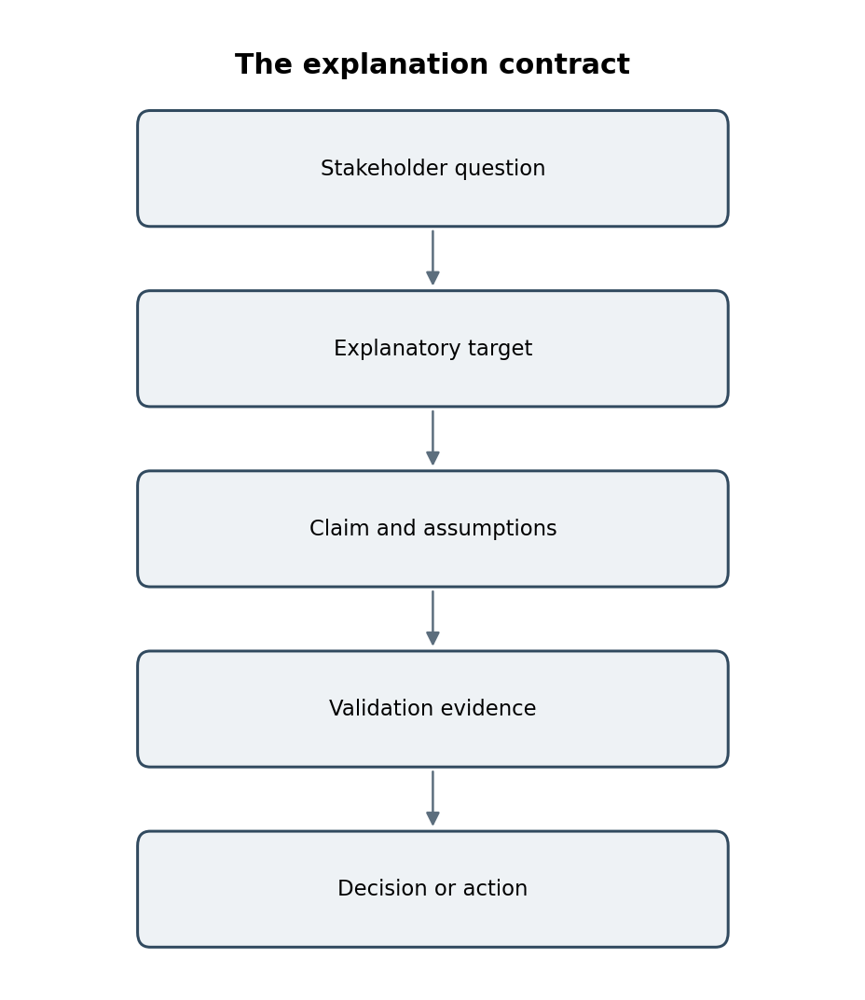
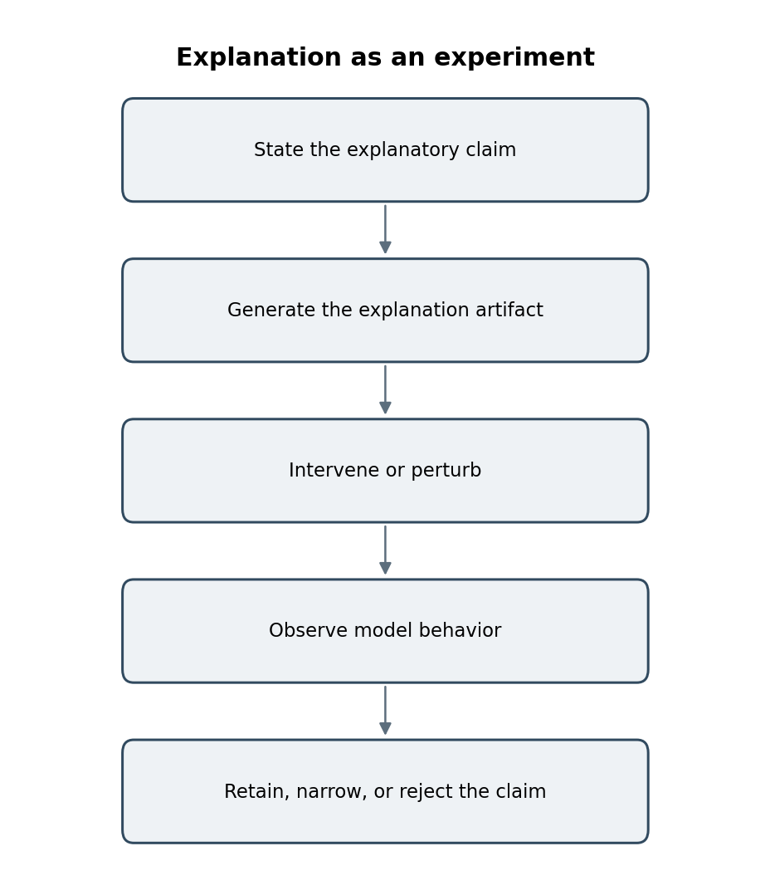
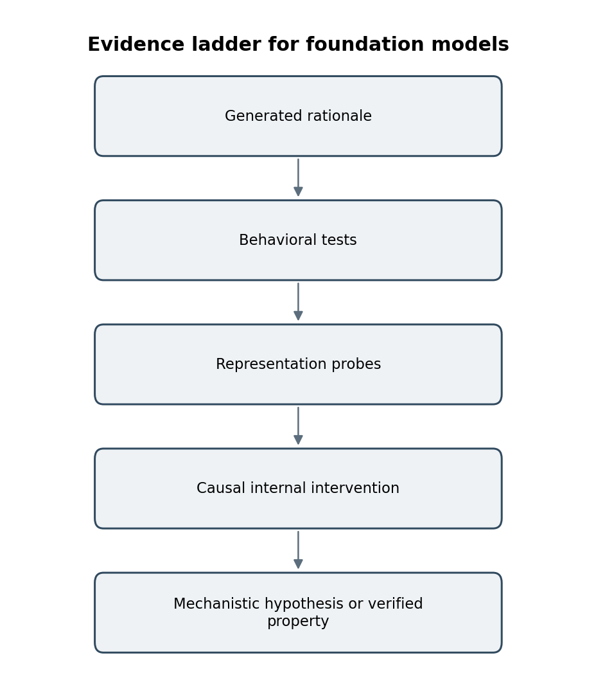
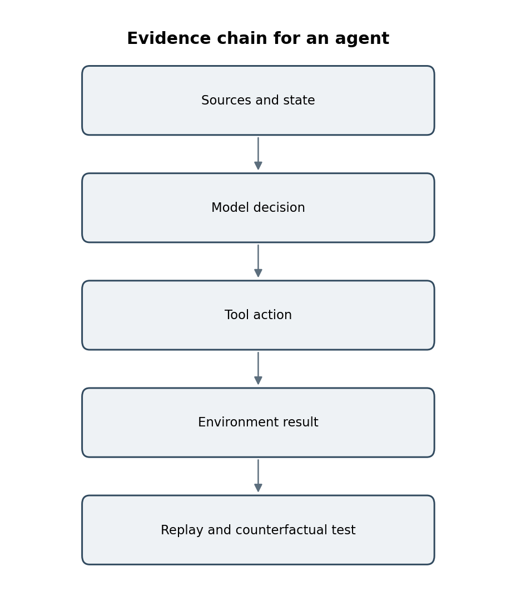
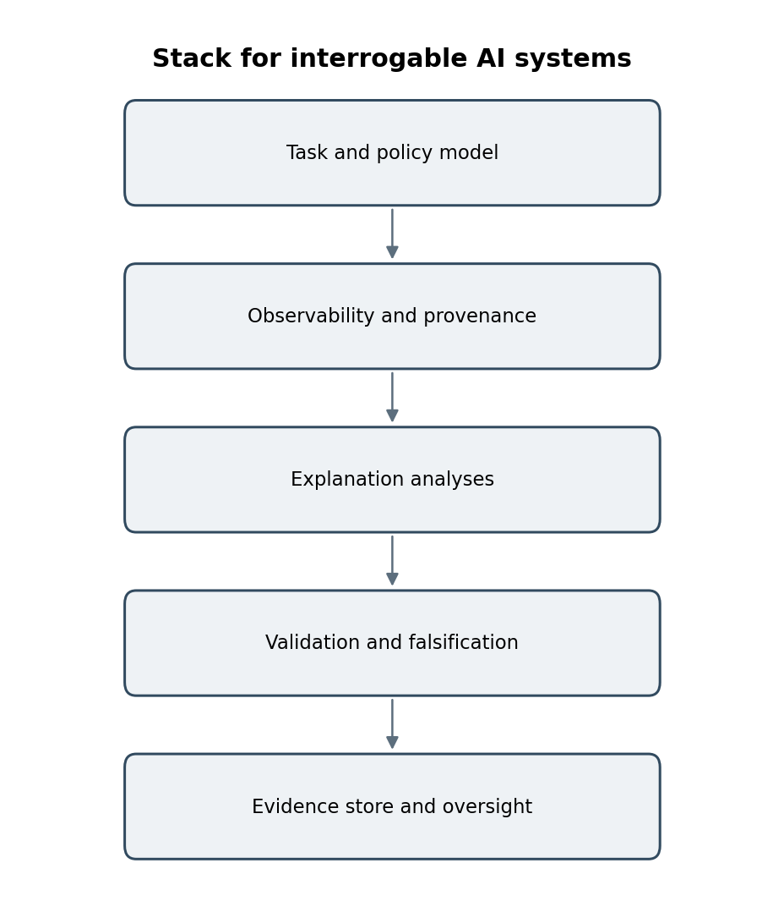

EDIȚIE PROVIZORIE 2026 Drepturi de autor © [2026] ScriptaHub Toate drepturile rezervate. Drepturile de publicare KDP sunt deținute de Outfinity SRL (Iași, România). Disponibilă gratuit la ScriptaHub.com.
Această lucrare a fost creată sub egida ScriptaHub ca
artificiale, iar celălalt Outfinitismului, ambele conduse de Sînică Alboaie. Pentru a explora în detaliu modul în care aceste două programe se intersectează și se dezvoltă reciproc, invităm cititorii să viziteze pagina Outfinity Venture Studio la www.outfinity.ch.
Deși modelele lingvistice de inteligență artificială au fost folosite pentru a sprijini generarea textului, filosofia fundamentală, structura tematică și abordarea analitică provin exclusiv din deceniile de studiu dedicat ale autorului asupra fenomenelor sociale, tehnologiilor sociale și tehnologiilor avansate autentice rezultate din diverse proiecte europene și autofinanțate de cercetare. Recent, în cadrul proiectului de cercetare ScriptaHub, am studiat aprofundat literatura generată de IA și verificarea sa automată prin abordări neurosimbolice; toate cărțile oferite gratuit publicului fac parte din ansamblul lucrărilor pe care le folosim pentru a testa cele mai recente tehnologii ale noastre.
Domeniul editorial al acestei ediții. Literatura de cercetare reflectată în manuscris a fost revizuită până la 30 august 2026. Cartea este scrisă intenționat fără formalism matematic inutil. Când un obiect matematic contează, textul explică ce înseamnă operațional, ce ipoteză poartă și cum ar putea fi testată sau falsificată afirmația asociată.
| Capitol |
|---|
| Capitolul 1. Problema explicativă |
| Capitolul 2. Interogarea predicțiilor |
| Capitolul 3. Testarea explicațiilor în lumea reală |
| Capitolul 4. Explicarea modelelor fundamentale |
| Capitolul 5. De la modele la sisteme |
| Capitolul 6. Către înțelegere executabilă |
IA explicabilă este introdusă adesea ca trusă de instrumente: o metodă de saliență aici, o metodă Shapley acolo, poate un generator contrafactual și un tablou de bord. Această încadrare este comodă pentru bibliotecile software și dezastruoasă pentru raționament. Partea dificilă nu este producerea unui artefact explicativ. Partea dificilă este a decide ce afirmație are voie să susțină artefactul. De aceea, capitolul începe înaintea algoritmilor. Urmărește momentul în care o predicție devine dovadă pentru o decizie, arată de ce părți interesate diferite pun întrebări cu adevărat diferite și dezvoltă un contract al explicației care face întrebările testabile. Abia după explicitarea semanticii întreabă capitolul dacă este măcar necesară o cutie neagră. Rezultatul este un fundament pentru restul cărții: explicația este tratată ca interfață inginerească de dovezi, nu ca decor în jurul unui predictor.
ÎNTREBARE DE PĂSTRAT PE PARCURSUL CAPITOLULUI — Ce afirmație explicativă facem și ce dovezi ar susține-o efectiv?
Imaginați-vă două echipe care instalează același model de risc. Prima sărbătorește o mică creștere a AUROC și publică un tablou de bord cu un grafic SHAP. A doua descoperă, în investigarea unei reclamații, că nimeni nu poate răspunde la o întrebare de bază: modelul a respins această persoană din cauza unor informații care ar fi trebuit să fie nerelevante, din cauza unei interacțiuni legitime, dar surprinzătoare, sau fiindcă intrarea era în afara regiunii în care modelul fusese validat? Ambele echipe au același model predictiv. Doar una a tratat explicația ca cerință inginerească. Această distincție este începutul practic al XAI.
Acuratețea nu mai este suficientă ori de câte ori o predicție devine o decizie, dovadă pentru o decizie sau componentă într-un proces mai lung. În depanare, un inginer are nevoie de o explicație sensibilă la modelul antrenat, nu doar vizual plauzibilă. În medicină, un clinician poate trebui să știe dacă un rezultat este compatibil cu cunoașterea domeniului, dacă sistemul este incert și dacă o recomandare supraviețuiește unei schimbări plauzibile a condițiilor de măsurare.
Într-un agent automat, un operator poate trebui să reconstruiască ce document recuperat a declanșat un apel de instrument și dacă o sursă diferită ar fi schimbat acțiunea. Fiecare context schimbă ținta explicativă.
Un model mental util este tratarea predicției și explicației ca două interfețe diferite. Interfața predicției răspunde la o întrebare a sarcinii: clasă, scor, continuare textuală, ordonare, acțiune. Interfața explicației răspunde la o întrebare despre sistem: dependență, contrast, mecanism, proveniență, incertitudine sau conformitate cu politica. A doua interfață nu poate fi astfel specificată spunând doar „folosește SHAP” sau „arată raționamentul”. Are nevoie de cerințe la fel ca un API. Apelul lui Haufe și al colaboratorilor din 2026 la formalizare este important deoarece dă limbaj teoretic unei probleme întâlnite repetat de ingineri: o metodă poate returna numere bine definite matematic, în timp ce utilizatorul interpretează acele numere ca răspunsuri la altă întrebare.
Istoria XAI moderne poate fi citită ca o succesiune de încercări de a închide această lacună. Metodele post-hoc timpurii au făcut cutiile negre inspectabile local. Lucrările ulterioare au arătat că explicațiile pot rămâne plauzibile sub randomizarea modelului, pot fi manipulate adversarial sau se pot prăbuși la mici schimbări ale referinței și distribuției de fundal. Cercetarea contrafactualelor și posibilităților de remediere a expus diferența dintre schimbarea unei intrări a modelului și schimbarea opțiunilor fezabile ale unei persoane. Lucrările centrate pe oameni au arătat că o explicație tehnic fidelă poate crea totuși modelul mental greșit. Interpretabilitatea mecanicistă merge acum mai adânc, întrebând dacă pot fi identificate și testate cauzal calculele interne. Domeniul nu abandonează instrumentele vechi; învață să plaseze fiecare instrument într-o ierarhie probatorie mai explicită.
Să presupunem că un model de credit respinge o cerere. Un specialist în date poate întreba ce variabile de intrare au influențat cel mai mult scorul. Un regulator poate întreba dacă decizia a depins de un atribut interzis sau de un substitut. Solicitantul poate întreba ce s-ar putea schimba realist pentru a obține alt rezultat. Un dezvoltator de modele poate întreba dacă clasificatorul a învățat o scurtătură. Un inginer de securitate poate întreba dacă modelul poate fi manipulat să producă o explicație aparent benignă păstrând comportamentul nedorit. Acestea nu sunt formulări diferite ale aceleiași întrebări. Solicită obiecte diferite, necesită dovezi diferite și eșuează diferit.
Scopul acestui tabel este să împiedice cuvântul explicație să reducă sarcini inginerești distincte la o interfață. Prima coloană numește întrebarea operațională; a doua precizează tipul de dovezi pe care sistemul trebuie să îl susțină în cele din urmă.
Tabelul 1.1 — Întrebări explicative diferite cer dovezi diferite.
| Concept / obiect | Sens ingineresc |
|---|---|
| Depanare | Dovezi care identifică comportamentul modelului sau condițiile eșecului și reacționează când modelul antrenat se schimbă. |
| Sprijin decizional | Dovezi care ajută o persoană să aleagă o acțiune, expunând incertitudinea și limitele cunoscute. |
| Remediere | Dovezi care leagă o decizie schimbată de intervenții fezabile în lume, nu doar de intrări editabile. |
| Audit | Dovezi că comportamentul poate fi reprodus, comparat între grupuri și verificat față de cerințe de politică sau juridice. |
Tabelul arată și de ce o singură explicație vizuală nu poate satisface fiecare parte interesată. Un artefact de depanare poate fi tehnic excelent și totuși inutil pentru remediere sau audit, deoarece acele sarcini cer alte ipoteze și dovezi ulterioare.
Aceasta este prima sursă de confuzie în XAI. Cuvântul explicație este folosit pentru importanța caracteristicilor, sensibilitate locală, aproximare globală, schimbare contrafactuală, efect cauzal, influența datelor de antrenare, dependența de concepte, similaritatea exemplelor, tipare de atenție, justificări generate și ipoteze despre mecanisme interne. O metodă poate fi corectă pentru unul dintre aceste sensuri și înșelătoare pentru altul. Tratarea ieșirilor ca interschimbabile este astfel o eroare semantică înainte de a deveni una statistică.
Perspectiva care pornește de la problemă primește acum sprijin teoretic explicit. Haufe și colaboratorii susțin că mare parte din XAI s-a dezvoltat pornind de la algoritm: cercetătorii au creat tehnici de atribuire și au atașat ulterior interpretări explicative largi rezultatelor lor. Perspectiva lor din 2026 cere în schimb definirea formală a problemei explicative, specificarea criteriilor de corectitudine și validarea față de adevăr de referință controlat sau sintetic. Traducerea inginerească este simplă: API-ul unui explicator ar trebui să includă semantica sa, nu doar semnătura funcției.
Terminologia rămâne inconsistentă în literatură, așa că această carte adoptă o convenție operațională. Interpretabilitatea se referă la proprietăți care fac mecanismul predictiv sau reprezentarea suficient de inteligibile pentru inspectare directă. Explicabilitatea este mai largă și include proceduri post-hoc care interoghează sau aproximează sisteme al căror calcul nativ nu este ușor de înțeles. Transparența se referă la cantitatea și tipul informațiilor expuse despre model, datele sale, procesul antrenării și funcționare. Acești termeni se suprapun, dar menținerea lor distinctă previne mai multe greșeli comune.
Un model liniar rar poate fi intrinsec interpretabil când variabilele sale au sens și numărul interacțiunilor rămâne gestionabil. Un ansamblu de arbori cu boosting pe gradient poate fi opac în ansamblu, dar poate admite analize locale sau globale de înaltă calitate. Un model lingvistic mare poate fi foarte transparent în sensul îngust că ponderile sale sunt descărcabile, rămânând aproape complet neinteligibil mecanicist. Invers, un model proprietar poate expune interfețe de explicație atent validate fără a expune ponderile. Ponderile deschise, interpretabilitatea și explicabilitatea sunt astfel dimensiuni diferite.
Explicațiile locale privesc o predicție sau o vecinătate îngustă. Explicațiile globale urmăresc caracterizarea modelului pe un domeniu mai larg de intrare. Explicațiile regionale țintesc o cohortă, un cluster sau un regim operațional. Aceste domenii nu pot fi reduse unul la altul fără ipoteze. Un surogat liniar exact local poate descrie bine o frontieră de decizie în jurul unei instanțe, fiind inutil ca model global. Invers, o ordonare globală a importanței caracteristicilor poate ascunde comportament local eterogen, interacțiuni și eșecuri de subgrup.
Domeniul contează operațional. La depanarea unui eșec individual, analiza locală este adecvată. La scrierea unei fișe de model, validarea constrângerilor politicii sau evaluarea biasului sistematic, analizele globale și de subgrup sunt esențiale. În producție, o arhitectură utilă le combină adesea pe toate trei: diagnostice globale la nivelul modelului, monitorizare regională pentru cohorte și moduri operaționale și explicații locale pentru decizii selectate.
Consecința practică este că XAI începe prin numirea întrebării, nu prin alegerea unei biblioteci. Odată explicitată ținta explicativă, următoarea sarcină este specificarea dovezilor care ar conta efectiv ca răspuns.
Expresia contractul explicației nu este un algoritm nou. Este o modalitate de a împiedica o organizație să schimbe sensul unei explicații după ce vede rezultatul.
Cea mai clară cale de prevenire a erorilor de categorie este scrierea unui contract al explicației înaintea alegerii metodei. Contractul începe cu patru întrebări. Care este obiectul explicat? Cine va consuma explicația? Ce afirmație poate susține explicația? Ce dovezi ar face credibilă acea afirmație? Aceste întrebări sună administrativ, dar determină matematica. O analiză a sensibilității locale, o recomandare cauzală de remediere și o ipoteză de circuit mecanicist pot fi toate produse pentru același model și toate valide, răspunzând totuși la întrebări diferite.
Să considerăm un model al deteriorării stării în terapie intensivă. Pentru un specialist în date, „de ce a crescut scorul?” poate însemna rezonabil ce variabile observate au schimbat cel mai mult predicția în vecinătatea curentă. Pentru un medic, întrebarea utilă poate fi dacă modelul reacționează la fiziologie clinic semnificativă sau la artefacte ale documentării. Pentru un consiliu de guvernanță al spitalului, întrebarea poate fi dacă performanța și calitatea explicației diferă sistematic între grupuri de pacienți. Pentru un pacient, explicația relevantă poate privi contribuția sistemului la o decizie și locul intrării judecății umane. Un explicator nu poate satisface toate cele patru publicuri doar schimbând titlul graficului.
Contractul limitează și interpretarea. Dacă valorile SHAP sunt calculate folosind o anumită distribuție de fundal, documentația ar trebui să precizeze că valorile alocă o predicție în raport cu acea referință, sub o convenție specificată de absență a caracteristicilor. Nu ar trebui să ridice tacit rezultatul la rang de enunț cauzal. Dacă un experiment de modificare a activărilor arată că înlocuirea unei reprezentări interne restabilește un răspuns corect, afirmația ar trebui formulată ca dovadă de relevanță cauzală sub acea intervenție, nu ca inginerie inversă completă a procesului de raționament. Precizia limbajului nu este pedanterie; este modul în care XAI împiedică ieșirile explicative să devină teatru al încrederii.
Aceasta duce la o scară simplă a dovezilor. Dovezile descriptive arată tipare în ieșiri sau stări interne. Dovezile perturbaționale întreabă dacă schimbările controlate alterează predicția. Dovezile cauzale interne intervin asupra reprezentărilor sau componentelor. Dovezile formale demonstrează proprietăți selectate sub ipoteze explicite. Dovezile umane arată că o explicație îmbunătățește o sarcină reală fără a produce supraîncredere dăunătoare. Nicio treaptă nu domină toate aplicațiile. Scopul contractului este alegerea celor mai slabe dovezi suficiente pentru decizia reală, apoi precizarea clară a ceea ce rămâne nedemonstrat.
O modalitate practică de scriere a contractului este imaginarea folosirii greșite a explicației. Dacă rezultatul este o ordonare a caracteristicilor influente, ar putea un cititor trata ordonarea ca prescripție cauzală? Dacă rezultatul este o justificare generată, ar putea un evaluator presupune că fiecare fapt menționat a fost decisiv intern? Dacă rezultatul este un surogat local, ar putea o echipă de produs să îl rezume ca regulă globală? Scrierea acestor interpretări greșite previzibile lângă afirmația intenționată obligă echipa de proiectare să expună limitele semantice înaintea instalării.
Diagrama surprinde ordinea logică care ar trebui să preceadă selecția metodei. O întrebare explicativă este tradusă într-o țintă, afirmația și ipotezele sale sunt enunțate, sunt definite dovezile validării și abia apoi rezultatului i se permite să influențeze o decizie sau acțiune.

Figura 1.1 — Contractul explicației transformă o cerere vagă de transparență într-o succesiune de decizii inginerești explicite.
Observați ce lipsește intenționat din prima casetă: numele unui algoritm XAI. SHAP, LIME, Integrated Gradients, căutarea contrafactuală, sondele sau instrumentele mecaniciste intră doar după cunoașterea țintei explicative. Această ordine este cea mai simplă apărare împotriva folosirii unei ieșiri tehnic corecte pentru a răspunde la întrebarea greșită.
Contractul ar trebui să specifice și abținerea. Sistemele de explicație sunt adesea proiectate ca și cum trebuie să returneze întotdeauna un răspuns, totuși există situații în care ieșirea onestă este „dovezile disponibile sunt instabile”. O explicație locală lângă o frontieră abruptă de decizie poate varia dramatic sub perturbări minuscule. Un contrafactual poate depinde de un graf cauzal incert. O etichetă mecanicistă de caracteristică se poate potrivi exemplelor eșantionate, dar poate eșua pe un domeniu nou. O stare explicită de abținere este astfel parte a calității explicative, la fel cum abținerea sau incertitudinea pot fi parte a calității predictive.
În final, contractul oferă evaluatorilor ceva concret de testat. Pot întreba dacă metoda aleasă produce cu adevărat obiectul declarat, dacă dovezile sunt suficient de puternice pentru afirmația declarată, dacă publicul țintă îl poate folosi corect și dacă explicația este păstrată cu suficientă proveniență pentru a fi reprodusă. Acesta este punctul în care XAI încetează să fie o colecție de grafice și devine o interfață inginerească cu cerințe testabile.
O modalitate utilă de a înțelege contractul explicației este compararea lui cu un protocol de măsurare în știința experimentală. Un termometru nu este de încredere fiindcă afișează un număr; este de încredere fiindcă sunt specificate mărimea, unitatea, intervalul de funcționare, procedura de calibrare și condițiile eșecului. Ieșirile XAI merită aceeași disciplină. Un vector SHAP, contrafactual sau etichetă de activare este doar numărul afișat. Contractul precizează ce mărime trebuie să reprezinte numărul, ce intervenții sau comparații o definesc și ce observații ar arăta că reprezentarea a devenit nefiabilă.
Această încadrare expune și o eroare comună de categorie. O organizație poate valida că o metodă de atribuire este stabilă și apoi folosi rezultatul ca dovadă de echitate. Stabilitatea și echitatea sunt proprietăți diferite. Poate valida un generator contrafactual față de un clasificator și apoi prezenta contrafactualul ca sfat fezabil unei persoane. Traversarea frontierei și remedierea fezabilă sunt proprietăți diferite. Un contract împiedică asemenea ridicări semantice tacite, deoarece afirmația este scrisă înaintea generării artefactului.
Contractul este deosebit de valoros în medii cu mai multe echipe. Dezvoltatorii modelelor, echipele de produs, personalul de conformitate și experții de domeniu folosesc adesea același cuvânt — explicație — așteptând dovezi diferite. Înregistrarea publicului și acțiunii intenționate aduce acele așteptări la lumină. Face și dezacordurile ulterioare productive: echipele pot dezbate o afirmație explicită și un test de acceptare, nu dacă o vizualizare „arată convingător”.
Figura 1.1. Contractul explicației: metoda vine după întrebare și afirmația probatorie.
Una dintre cele mai importante distincții în XAI aplicată este între explicarea unui model predictiv și explicarea sistemului real reprezentat de date. Un model se poate baza puternic pe o variabilă de intrare deoarece acea variabilă este predictivă în distribuția antrenării. Aceasta nu stabilește că schimbarea variabilei ar schimba rezultatul real. Atribuirile caracteristicilor descriu o funcție sub o distribuție de fundal și o convenție particulară de mascare sau condiționare. Explicațiile cauzale cer ipoteze despre intervenții, factori de confuzie și structura procesului subiacent.
Un model spitalicesc poate atribui importanță predictivă mare unui tratament deoarece tratamentul este administrat pacienților grav bolnavi. Atribuirea poate fi perfect fidelă predictorului, fiind opusul unui efect cauzal al tratamentului. Un model de angajare poate folosi o caracteristică geografică corelată cu o variabilă socială; schimbarea geografiei înregistrate poate schimba predicția fără a schimba vreo calificare subiacentă. De aceea, însăși documentația SHAP avertizează că transparentizarea corelațiilor predictive nu le face cauzale.
O evaluare practică a explicației poate fi organizată în jurul a trei teste. Testul semanticii întreabă dacă rezultatul metodei corespunde întrebării puse. Testul dovezilor întreabă dacă relația revendicată cu modelul a fost validată prin intervenție, perturbare controlată, analiză formală sau alt experiment adecvat. Testul utilității întreabă dacă explicația îmbunătățește sarcina ulterioară pentru publicul intenționat fără a crea supraîncredere periculoasă.
Trecerea unui singur test nu este suficientă. O hartă termică frumoasă poate fi utilă comunicării, dar poate eșua la testul dovezilor. O atribuire bine definită matematic poate fi fidelă unui model, dar nerelevantă pentru decizia utilizatorului. Un contrafactual poate schimba ieșirea clasificatorului, eșuând totodată la semantica remedierii în lumea reală. Ingineria XAI matură seamănă astfel cu ingineria cerințelor combinată cu știința experimentală.
Contractul explicației transformă acea cerință într-o interfață care poate fi revizuită, testată și versionată. Cu contractul stabilit, putem pune o întrebare mai incomodă: dacă sarcina poate fi rezolvată cu un model a cărui structură este direct inspectabilă, de ce să creăm opacitate evitabilă?
Modelele interpretabile sunt adesea caricaturizate ca modele liniare care schimbă acuratețea pe confort. Acea caricatură este depășită. Distincția mai utilă este între complexitate neconstrânsă și complexitate structurată. Un model aditiv generalizat poate învăța curbe neliniare de răspuns. O Explainable Boosting Machine poate modela efecte univariate flexibile și interacțiuni selectate. Listele de reguli, modelele monotone, sistemele rare de punctaj, prototipurile și arhitecturile bazate pe concepte expun părți diferite ale calculului, rămânând substanțial mai bogate decât o regresie liniară de manual.
Avantajul ingineresc nu este că un om poate simula mental fiecare operație aritmetică. Este că gradele semnificative de libertate ale modelului sunt vizibile. Un clinician poate inspecta dacă riscul crește lin cu o valoare de laborator sau dacă există o discontinuitate neplauzibilă. O echipă de risc de credit poate examina dacă forma învățată pentru vechimea contului se comportă rezonabil și dacă o anumită interacțiune domină neașteptat. Când structura însăși este inspectabilă, multe sarcini de depanare devin directe, nu inferențiale.
Un flux concret este tratarea modelului interpretabil ca primul model serios, nu ca referință simbolică. Ajustați-l corect. Calibrați-l. Oferiți-i aceeași inginerie a caracteristicilor și disciplină a validării ca și candidatului cutie neagră. Comparați erorile la nivelul consecințelor operaționale, nu doar al acurateței agregate. Este frecvent să descoperiți că aparentul
„cost al interpretabilității” era parțial costul comparării unui model profund atent optimizat cu o referință transparentă deliberat slabă.
În același timp, vizibilitatea poate induce în eroare. O curbă de răspuns poate fi ușor de citit și totuși codifica factori de confuzie, bias de selecție a eșantionului sau un substitut pentru o caracteristică protejată. Interpretabilitatea reduce o barieră epistemică; nu acordă validitate cauzală. Poziția corectă nu este astfel nici
„modelele transparente sunt sigure”, nici „modelele complexe sunt inevitabile”.
Este folosirea structurii ca avantaj de observabilitate și apoi testarea sistemului cu aceeași seriozitate aplicată oricărui model cu miză mare.
Un tipar util din lumea reală este
„contracandidatul transparent”.
Chiar când o echipă se așteaptă să instaleze un model complex, poate menține alături un model interpretabil puternic. Contracandidatul servește simultan mai multor roluri: referință de performanță, sursă de curbe globale de răspuns, detector al comportamentului neașteptat al caracteristicilor și soluție de rezervă când cutia neagră intră într-un regim incert. Dezacordul mare dintre cele două modele este el însuși un eveniment interpretabil care merită investigat.
Acest tipar ajută și la separarea dificultății sarcinii de moda arhitecturală. Dacă un EBM și un model tabular profund fac erori aproape identice, aplicația poate să nu beneficieze substanțial de opacitatea suplimentară. Dacă cutia neagră câștigă anume pe un subgrup îngust sau regim de interacțiune, echipa a aflat unde complexitatea adăugată cumpără capacitate și poate concentra acolo munca de asigurare. Interpretabilitatea devine apoi parte a comparării modelelor, nu o preferință filosofică impusă ulterior.
Argumentul influent din 2019 al Cynthiei Rudin rămâne un corectiv util presupunerii că acuratețea cere opacitate. În contexte cu miză mare, dacă poate fi construit un model interpretabil competitiv, înlocuirea lui cu o cutie neagră și apoi aproximarea acelei cutii negre cu un explicator post-hoc creează o lacună epistemică inutilă. Explicația-surogat nu este regula deciziei; este un alt model al regulii deciziei.
Ideea nu este că fiecare model interpretabil este simplu în sens cotidian. Modelele aditive generalizate moderne, sumele rare de arbori, modelele monotone, arhitecturile de prototipuri și rețelele bazate pe concepte pot reprezenta relații netriviale, expunând o structură inspectabilă de experții domeniului. Interpretabilitatea este un buget arhitectural: alegem ce forme de complexitate sunt permise și care sunt făcute vizibile.
Aceasta este deosebit de atractiv când sarcina este tabulară și structurată, numărul variabilelor semnificative este moderat, costul unei erori este mare, iar experții domeniului pot evalua relațiile caracteristică-răspuns. Devine mai greu când intrarea brută este multidimensională, precum pixeli, forme de undă, cod sau limbaj natural, deoarece caracteristicile prezentate modelului sunt ele însele departe de conceptele umane.
Modelele aditive generalizate descompun o predicție în contribuții asociate caracteristicilor individuale și, opțional, unui număr controlat de interacțiuni. Atracția inginerească este că fiecare caracteristică poate fi vizualizată ca o curbă de răspuns: se poate vedea cum vârsta, temperatura, vechimea contului sau altă variabilă schimbă scorul modelului, păstrând fix restul structurii aditive. Aceasta susține inspectarea globală, nu reconstruirea post-hoc.
Explainable Boosting Machines, implementate în InterpretML, folosesc componente de arbori cu boosting pentru a învăța funcții flexibile de formă, păstrând forma aditivă. În multe sarcini tabulare pot concura surprinzător de bine cu alternativele cutie neagră. Lecția importantă nu este că EBM-urile câștigă întotdeauna. Este că selecția modelului ar trebui să compare o frontieră interpretabilă cu una opacă, nu să compare o referință liniară simplă cu o cutie neagră puternic ajustată și să declare interpretabilitatea prea costisitoare.
Un model interpretabil poate fi totuși greșit, părtinitor, instabil, slab calibrat sau confuz cauzal. Un arbore scurt de decizie poate codifica o politică discriminatorie. Un model rar se poate baza pe un substitut. Un blocaj conceptual poate folosi concepte etichetate greșit sau incomplete. Vizibilitatea intrinsecă elimină un strat de opacitate, dar nu validează setul de date, obiectivul, contextul instalării sau ipotezele cauzale.
Aceasta contează deoarece modelele interpretabile primesc adesea mai puțină examinare tocmai fiindcă logica lor pare inteligibilă. Poziția inginerească adecvată este tratarea transparenței ca observabilitate sporită. Observabilitatea sporită face testarea mai ușoară; nu înlocuiește testarea.
Există sarcini pentru care modelele transparente actuale nu furnizează aceeași capacitate. Imaginile brute, vorbirea, limbajul deschis, generarea codului, modelarea surogat științifică și raționamentul multimodal de uz general pot cere învățarea reprezentărilor la o scară care rezistă inspectării umane directe. În acele cazuri, cutia neagră nu este prin definiție un eșec etic. Este o alegere inginerească cu o factură atașată.
Acea factură are mai multe părți. Mai întâi vine validarea: dacă logica internă nu poate fi inspectată direct, sunt necesare teste comportamentale mai puternice în condiții realiste și adversariale. Apoi vine observabilitatea: sistemul ar trebui să expună incertitudinea, proveniența, sursele recuperate, apelurile de instrumente, stările intermediare relevante și identificatorii modelului/versiunii. A treia vine testarea explicativă: metodele post-hoc au nevoie de verificări de plauzibilitate, analiză a stabilității și comparație cu metode alternative. A patra vine pregătirea pentru incidente: echipele au nevoie de suficiente dovezi păstrate pentru a reconstrui de ce a apărut un rezultat cu consecințe după ce modelul, promptul, indexul de recuperare sau fluxul de date s-au schimbat.
O analogie utilă este datoria tehnică. Un model opac poate fi alegerea corectă, la fel cum un sistem distribuit complicat poate fi arhitectura corectă. Dar nimeni nu ar susține că complexitatea distribuită este gratuită fiindcă latența s-a îmbunătățit. Organizația plătește prin monitorizare, depanare, analiza eșecurilor, testare și disciplină operațională. Opacitatea ar trebui bugetată la fel. Dacă o cutie neagră cumpără o îmbunătățire trivială, datoria poate fi irațională. Dacă permite o capacitate care contează, munca suplimentară de asigurare devine parte a proiectării, nu un strat opțional de conformitate.
Decizia ar trebui să fie și reversibilă. Echipele se blochează adesea în sisteme opace deoarece interfața explicativă este construită în jurul unei singure familii de modele. O arhitectură mai sănătoasă separă API-ul sarcinii de API-ul asigurării. Aceasta permite substituirea unui model interpretabil, a unei cutii negre sau a unui ansamblu, păstrând un set stabil de întrebări: ce s-a schimbat, ce dovezi susțin rezultatul, unde este incert sistemul și ce poate fi reprodus. Explicabilitatea devine astfel o proprietate a sistemului ingineresc, nu o caracteristică decorativă a unui model.
Să considerăm un sistem de înțelegere a documentelor care trebuie să extragă obligații din contracte, să raționeze pe multe pagini și să redacteze o evaluare structurată. Un model liniar sau aditiv nu poate efectua întreaga sarcină. Răspunsul corect nu este să pretindem că un model lingvistic poate fi făcut transparent atașând câteva atribuiri de tokenuri. În schimb, sistemul ar trebui descompus în etape observabile: ingestia documentelor, recuperare, extragerea afirmațiilor, rezolvarea referințelor încrucișate, raționament și generare finală. Fiecare etapă își poate expune propriile dovezi și condiții de eșec.
Această descompunere ilustrează o idee importantă: transparența arhitecturală poate compensa parțial opacitatea modelului. Modelul fundamental poate rămâne dificil de înțeles mecanicist, dar aplicația poate fi proiectată astfel încât afirmațiile să fie legate de fragmente-sursă, apelurile instrumentelor jurnalizate, obiectele intermediare validate, iar acțiunile cu risc mare să necesite verificări explicite. Povara explicativă este distribuită în sistem, nu concentrată într-un explicator post-hoc magic.
Aceeași logică se aplică conducerii autonome, imagisticii medicale, modelelor fundamentale științifice și agenților de programare. Când o cutie neagră este justificată prin capacitate, arhitectura înconjurătoare ar trebui să devină mai explicită, nu mai puțin. Întrebarea nu mai este dacă rețeaua neurală își poate povesti procesul intern de gândire. Întrebarea este dacă întregul sistem expune suficiente dovezi independente pentru ca oamenii și monitoarele automate să detecteze când componenta învățată greșește.
Există cazuri legitime pentru modele complexe opace. Sarcinile de percepție brută și limbaj pot cere arhitecturi ale căror reprezentări învățate sunt mult mai expresive decât caracteristicile specificate manual. Modelele fundamentale pot oferi capacități pe care nicio alternativă transparentă compactă nu le egalează în prezent. În aceste contexte, întrebarea inginerească trece de la „de ce să nu folosim un model interpretabil?” la „ce mecanisme de observabilitate și asigurare compensează opacitatea aleasă?”
Răspunsul ar trebui să fie proporțional cu riscul. Ordonarea sau personalizarea cu consecințe mici poate cere doar monitorizare comportamentală și explicații locale selectate. Sprijinul decizional clinic, controlul autonom sau modelele care pot lua acțiuni cu consecințe pot cere validare mai puternică, teste independente, estimarea incertitudinii, verificări cauzale, analiză de securitate și posibil dovezi mecaniciste sau formale pentru proprietăți selectate.
Un protocol util de selecție evaluează împreună performanța predictivă, calibrarea, robustețea, interpretabilitatea, costul operațional și auditabilitatea. Începeți cu o referință transparentă autentic competitivă și corect ajustată. Comparați-o cu alternative mai complexe pe erorile care contează, nu pe o metrică agregată. Dacă opacitatea cumpără doar un câștig marginal, sistemul mai simplu poate avea valoare inginerească totală mai bună. Dacă opacitatea cumpără o capacitate substanțială, înregistrați exact ce muncă nouă de asigurare devine necesară.
Interpretabilitatea nu garantează corectitudinea, iar un model lizibil poate codifica totuși un set de date prost sau un obiectiv dăunător. Avantajul său este mai îngust și valoros: reduce distanța dintre comportamentul modelului și dovezile necesare inspectării lui. Când opacitatea este inevitabilă, restul cărții descrie povara suplimentară de asigurare care urmează.
Odată specificată întrebarea explicativă, următoarea problemă este măsurarea. Metodele de atribuire măsoară o formă de dependență, surogatele locale aproximează comportamentul într-o vecinătate aleasă, contrafactualele descriu schimbări care traversează o frontieră de decizie, metodele conceptuale ridică activitatea internă într-un vocabular uman, iar metodele atribuirii datelor întreabă ce exemple de antrenare au contat. Aceste instrumente sunt puternice tocmai fiindcă răspund la întrebări diferite. Devin înșelătoare când rezultatele lor sunt traduse într-un limbaj mai puternic decât permit ipotezele. Capitolul trece de la cele mai simple măsurători locale la explicații contrastive și semantice mai bogate, punând repetat aceeași întrebare inginerească: ce s-a schimbat, ce s-a observat și ce ne-ar face să respingem interpretarea?
ÎNTREBARE DE PĂSTRAT PE PARCURSUL CAPITOLULUI — Ce măsoară metoda, ce comparație definește măsurarea și cum ar putea eșua interpretarea?
Atribuirea începe cu o dorință aparent simplă: împărțirea unei predicții în părți. Pentru un model tabular, părțile pot fi variabile; pentru o imagine pot fi pixeli sau regiuni; pentru limbaj pot fi tokenuri sau dimensiuni ale embeddingurilor. Dificultatea este că o predicție este produsă prin interacțiuni. Odată ce caracteristicile sunt corelate, redundante, discrete sau semnificative doar în combinații, nu există o cale naturală unică de atribuire a contribuției.
O modalitate utilă de a preda atribuirea este printr-o metaforă a temperaturii. Un termometru are sens doar fiindcă știm ce mărime fizică măsoară și cum este calibrat. Un grafic de atribuire ar trebui tratat la fel. Gradienții măsoară sensibilitatea locală. Integrated Gradients măsoară sensibilitatea acumulată de-a lungul unei căi pornind de la o referință. Ocluzia măsoară efectul înlocuirii sau eliminării informației după o regulă de mascare. Valorile de tip Shapley distribuie o diferență de ieșire între coalițiile caracteristicilor în raport cu un fundal. Acestea sunt cantități înrudite, dar nu interschimbabile.
Problema referinței merită atenție specială deoarece se ascunde în multe vizualizări atractive. Când o imagine medicală este comparată cu o imagine complet neagră, referința nu este
„nimic”; este o anumită matrice de pixeli care poate fi mult în afara distribuției antrenării. Când un token este eliminat dintr-o propoziție, secvența mascată poate fi negramaticală. Când o variabilă financiară este setată la zero, metoda poate să fi transformat
„necunoscut” în „literalmente zero”.
O referință este o lume contrafactuală. Inginerii ar trebui să o aleagă deliberat și să testeze dacă referințe alternative rezonabile spun povești substanțial diferite.
Pentru imagini și secvențe lungi, atribuirea creează și o problemă de rezoluție. O hartă termică poate fi fidelă la nivel de pixel sau token și totuși inutilizabilă pentru o persoană care gândește în obiecte, constatări, clauze sau evenimente. Acesta este un motiv pentru care domeniul se îndreaptă către concepte și reprezentări semantice. Atribuirea de nivel inferior rămâne valoroasă, mai ales pentru depanare și teste controlate, dar un ansamblu matur al explicației are adesea nevoie de o corespondență între unități computaționale și unități de domeniu, nu de presupunerea că sunt aceleași.
Figura 3.1. Familiile de atribuire răspund la întrebări operaționale înrudite, dar diferite.
O metodă de atribuire produce un scor pentru fiecare caracteristică de intrare, token, pixel, regiune sau dimensiune a embeddingului. Scorul este adesea vizualizat ca importanță, dar „importanța” nu este o primitivă a naturii. Trebuie definită printr-o referință, perturbare, derivată, joc de coaliție sau altă regulă operațională. Două metode pot fi în dezacord deoarece estimează cantități diferite, nu fiindcă o implementare este defectă.
Aceasta este cel mai clar în prezența variabilelor corelate sau redundante. Dacă două caracteristici codifică aproape aceeași informație, eliminarea uneia poate schimba foarte puțin predicția deoarece cealaltă o înlocuiește. Un gradient poate fi mic fiindcă modelul este saturat local, chiar când caracteristica a fost esențială pentru atingerea stării curente. O atribuire se poate schimba când se schimbă distribuția de fundal, deoarece caracteristicile „lipsă” sunt înlocuite de o lume contrafactuală diferită.
Cea mai simplă atribuire diferențiabilă întreabă cum se schimbă ieșirea sub o schimbare infinitezimală a intrării. Gradienții sunt ieftini și conectați direct cu geometria locală a unei rețele neurale. În imagini, gradientul absolut poate fi afișat ca hartă de saliență; în text, gradienții pot fi agregați peste embeddingurile tokenurilor; în modele neurale structurate, gradienții pot expune sensibilitatea locală.
Limitarea este semantică. Un gradient măsoară sensibilitatea locală, nu contribuția istorică, necesitatea sau efectul cauzal. Neliniaritățile saturate pot suprima gradienții. Schimbările de frecvență înaltă pot crea hărți zgomotoase. Alegerea logitului ieșirii, probabilității, pierderii sau altei ținte schimbă rezultatul. Pentru caracteristici discrete precum tokenurile, derivata există în spațiul embeddingurilor, nu direct în spațiul cuvintelor valide.
Lucrarea de referință a lui Adebayo și colaboratorilor privind verificările de plauzibilitate a demonstrat de ce o hartă de saliență vizual plauzibilă este o dovadă slabă. Unele metode produceau hărți asemănătoare chiar după randomizarea parametrilor modelului sau etichetelor. Concluzia nu este că saliența este inutilă. Este că un explicator care pretinde că descrie un model antrenat ar trebui de obicei să reacționeze când modelul antrenat este distrus.
Integrated Gradients a fost proiectată în jurul unor axiome explicite, în special sensibilitate și invarianță la implementare. În loc să folosească doar derivata la intrarea observată, acumulează gradienți de-a lungul unei căi de la o referință la intrare. Atribuirea rezultată răspunde la o întrebare mai specifică: cum s-a schimbat ieșirea modelului pe măsură ce intrarea s-a deplasat de la starea de referință aleasă la starea observată de-a lungul acestei căi?
Referința este astfel parte a explicației. O imagine neagră, o imagine estompată, un vector zero, un token de umplere, un embedding mediu sau o referință specifică domeniului pot produce semantici substanțial diferite. Nu există o referință universal neutră. În imagistica medicală, intensitatea zero poate reprezenta sau nu absența semnalului. În limbaj, un embedding zero nu este neapărat o propoziție validă. În finanțe, venitul zero descrie o anumită persoană, nu venit lipsă.
Pentru utilizare inginerească, sensibilitatea la referință ar trebui măsurată, nu ascunsă. Dacă referințe rezonabile produc narațiuni contradictorii, explicația ar trebui considerată subdeterminată. Captum expune Integrated Gradients și metode de atribuire înrudite în PyTorch, inclusiv fluxuri pentru intrări transformer și LLM, dar biblioteca nu poate decide ce referință are sens științific pentru aplicație.
Metode precum Grad-CAM explică sisteme convoluționale sau vizuale combinând hărți de activare cu informații de gradient pentru a produce localizare spațială. Sunt instrumente eficiente de comunicare deoarece o hartă termică grosieră peste o imagine corespunde firesc modului în care oamenii inspectează scene. Aceeași putere intuitivă creează risc: regiunile netede colorate arată ca dovezi chiar când metoda este doar o euristică aproximativă de localizare.
Pentru transformerele vizuale și modelele multimodale moderne, atribuirea poate ținti fragmente de imagine, capete de atenție, tokenuri latente, legături între modalități sau caracteristici interne. Numărul unităților explicative plauzibile crește dramatic. Inginerii ar trebui astfel să distingă unitatea punctată de obiectul semantic văzut de utilizator. O atribuire de fragment nu este automat o atribuire de obiect; o atribuire de cap de atenție nu este automat o atribuire de concept.
Metodele de perturbare estimează importanța schimbând sau eliminând caracteristici și observând schimbările ieșirii. Aceasta le dă o interpretare comportamentală directă, dar numai în raport cu procedura perturbării. Înlocuirea unui pixel cu zero, mascarea unui cuvânt, amestecarea unei coloane sau eșantionarea unei valori dintr-o distribuție de fundal pot crea intrări pe care modelul nu le-a întâlnit la antrenare.
Perturbările în afara distribuției sunt unul dintre factorii de confuzie centrali ai evaluării XAI. O schimbare dramatică a ieșirii poate reflecta reacția modelului la o intrare nerealistă, nu importanța caracteristicii eliminate. Perturbările condiționale și completarea generativă a imaginilor pot produce alternative mai realiste, dar atunci explicatorul moștenește ipotezele și erorile modelului condițional sau generativ.
Atribuirea ne dă astfel măsurători, nu cauze finale. Familia următoare de metode merge cu un pas mai departe construind aproximări locale și scheme de alocare, utile numai dacă păstrăm vizibile vecinătățile și ipotezele lor de fundal.
LIME și SHAP au devenit populare deoarece au transformat
LIME ajustează un model simplu în jurul unei instanțe. SHAP încadrează atribuirea ca problemă de alocare cooperativă cu un fundament axiomatic puternic. Ambele pot fi extrem de utile. Niciuna nu scutește inginerul de specificarea vecinătății, distribuției de referință, semanticii mascării sau ipotezelor de dependență a caracteristicilor care dau sens rezultatului.
Să considerăm un model de fraudă în care categoria comerciantului, suma tranzacției, ora, identitatea dispozitivului și activitatea recentă a contului sunt puternic dependente. Dacă un explicator independent de model perturbă fiecare caracteristică independent, poate genera exemple sintetice care nu seamănă cu nicio tranzacție legitimă. Surogatul local poate fi atunci exact pe vecinătatea artificială, reprezentând slab modelul pe varietatea reală a datelor. O implementare SHAP care tratează caracteristicile ca independente poate distribui similar contribuția altfel decât una care folosește un fundal condițional. Graficul cu bare rezultat nu afișează un adevăr lipsit de context; afișează răspunsul sub jocul ales.
Validarea ar trebui astfel încorporată în fluxul de lucru. Recalculați explicațiile sub mai multe fundaluri rezonabile. Randomizați parametrii modelului sau etichetele când metoda revendică sensibilitate la structura învățată. Perturbați caracteristicile ordonate ca importante și testați dacă predicțiile răspund așteptat, verificând totodată dacă perturbările rămân semnificative. Comparați metode care operaționalizează noțiuni diferite de importanță. Inspectați subgrupuri și cazuri-limită, nu doar exemple mediane. Dacă o metodă poate fi păcălită adversarial, tratați canalul explicației ca suprafață de atac, nu ca flux de telemetrie de încredere.
Scopul practic nu este găsirea unui singur „cel mai bun explicator”. Este stabilirea unui lanț de dovezi în jurul unei afirmații particulare. Dacă se spune că o caracteristică este importantă, echipa ar trebui să poată preciza ce înseamnă important, să arate că rezultatul depinde de modelul antrenat, să arate că nu este artefactul unei referințe arbitrare și să descrie împrejurările în care concluzia devine instabilă. Această disciplină transformă atribuirea din accesoriu vizual în instrument.
Înaintea acceptării unei atribuiri, testați dacă se schimbă când se schimbă modelul, dacă este stabilă sub transformări nerelevante, dacă referințe rezonabile diferite schimbă concluzia și dacă eliminarea informației pretins importante alterează comportamentul în direcția prezisă. Comparați cu referințe simple, inclusiv ordonări aleatoare. Dacă explicația va fi folosită pentru știință sau politici, introduceți cazuri sintetice controlate unde mecanismul relevant este cunoscut.
LIME explică o predicție eșantionând versiuni perturbate ale intrării, interogând modelul cutie neagră, ponderând eșantioanele după apropierea de instanța de interes și ajustând un surogat interpretabil simplu. Metoda este atractivă deoarece are nevoie doar de o interfață de predicție. Modelul țintă poate fi o rețea neurală, pădure aleatoare, API la distanță sau orice alt sistem care returnează ieșiri pentru intrări.
Surogatul local nu este modelul original. Fidelitatea sa depinde de generarea vecinătății, definirea distanței, ponderarea eșantioanelor, reprezentarea caracteristicilor și regularizarea surogatului. Două rulări LIME pot diferi deoarece procesul eșantionării este stochastic. Mai important, pot diferi deoarece nu există o aproximare liniară locală unică a unei suprafețe complexe de decizie la o scară finită a vecinătății.
Aceasta face LIME util ca sondă inginerească, nu ca certificat. Rulările repetate, razele alternative ale vecinătății, schemele realiste de perturbare și măsurarea directă a fidelității surogatului local ar trebui să fie standard. O singură captură de ecran nu este un protocol de validare.
Anchors înlocuiește o poveste liniară locală cu condiții dacă-atunci de înaltă precizie: când este valabil un set de condiții asupra caracteristicilor, predicția modelului rămâne stabilă cu probabilitate mare sub o distribuție definită a perturbărilor. Pentru mulți utilizatori, o regulă scurtă este mai inteligibilă decât un vector de coeficienți. Prețul este că regula poate acoperi doar o regiune îngustă, iar precizia sa este din nou definită în raport cu eșantionarea intrărilor alternative.
Anchors ilustrează o lecție mai largă: forma explicației schimbă ce poate fi afirmat. O regulă rară poate exprima o condiție suficientă într-o regiune, dar nu identifică neapărat fiecare caracteristică influentă. Un vector de coeficienți poate ordona efecte locale, dar nu definește neapărat o regiune stabilă de decizie. Alegerea unei reprezentări explicative face astfel parte din specificarea problemei.
SHAP a adus idei ale jocurilor cooperative în explicarea curentă a modelelor. O predicție este tratată ca beneficiu, iar caracteristicile participă în coaliții. Sarcina explicativă este alocarea diferenței dintre o predicție de referință și cea observată între caracteristici. Sub anumite axiome, valorile de tip Shapley furnizează o alocare aditivă principială.
Acest fundament este puternic deoarece clarifică proprietăți de consistență dezirabile și creează o interfață comună între familiile de modele. TreeSHAP face practice explicațiile de tip Shapley pentru ansamblurile de arbori; alți explicatori aproximează calculul coalițiilor pentru modele generale. Agregarea valorilor SHAP locale produce rezumate globale și vederi ale interacțiunilor utile.
Totuși, o valoare Shapley are sens doar în măsura în care are sens jocul de coaliție. Ce înseamnă ca o caracteristică să lipsească? Valorile lipsă ar trebui eșantionate independent, condiționat de caracteristicile observate sau potrivit unei intervenții cauzale? Cum ar trebui gestionate variabilele dependente? Ce set de date de fundal definește referința? Răspunsuri diferite induc explicații diferite, toate rămânând matematic legitime.
Corelația nu este un caz marginal minor. Seturile reale de date sunt pline de variabile derivate, substituenți, măsurători repetate și atribute puternic cuplate. Dacă ocupația și venitul unei persoane sunt corelate, atribuirea independentă a contribuției poate crea coaliții nerealiste. Abordările condiționale păstrează dependența statistică, dar pot aloca contribuție unei caracteristici pe care modelul nu o citește niciodată deoarece caracteristica poartă informație despre altă intrare. Abordările intervenționale reflectă mai îndeaproape funcția modelului, dar pot crea combinații nerealiste.
Nu există rezolvare universală deoarece dezacordul reflectă întrebări explicative diferite. O întrebare cere cum depinde funcția modelului de fiecare intrare când celelalte intrări sunt manipulate independent. Alta cere câtă informație contribuie o caracteristică dată fiind distribuția observațională a datelor. O a treia întreabă despre intervenții cauzale în lume. Inginerii trebuie să eticheteze întrebarea la care răspund.
Explicatorii post-hoc pot deveni ei înșiși suprafețe de atac. Slack și colaboratorii au arătat că metodele bazate pe perturbare precum LIME și SHAP pot fi păcălite de modele care detectează perturbările artificiale generate de explicator. Modelul se comportă într-un fel pe intrările normale și altfel pe vecinătatea sintetică, făcând explicatorul să raporteze un surogat benign pentru un mecanism problematic al deciziei.
Acest rezultat este important dincolo de un atac. Orice explicator care se bazează pe o distribuție previzibilă de interogări poate fi păcălit de un model strategic sau înveliș. În contexte adversariale sau reglementate, explicațiile nu ar trebui generate printr-un proces pe care sistemul țintă îl poate identifica trivial și trata special. Sunt necesare audituri comportamentale independente și distribuții randomizate de provocări.
Folosiți aceste metode când semantica lor explicativă corespunde întrebării și când accesul de tip cutie neagră face indisponibilă instrumentarea mai directă. Înregistrați cu fiecare explicație setul de date de fundal, strategia mascării, ținta ieșirii, sămânța aleatoare, parametrii explicatorului, versiunea modelului și versiunea datelor. Pentru utilizări cu consecințe, realizați analiză de sensibilitate între fundaluri plauzibile și comparați mai multe familii independente de explicație.
Surogatele locale și explicațiile Shapley sunt cele mai puternice când sunt tratate ca experimente explicit parametrizate. Odată ce întrebarea trece de la dependență la schimbare — ce ar trebui să fie diferit pentru ca rezultatul să se schimbe — intrăm în problema contrafactuală.
Atribuirea întreabă ce intrări existente contează sub o comparație specificată. Explicația contrafactuală schimbă gramatica întrebării: ce ar trebui să fie diferit pentru ca rezultatul să se schimbe?
Explicațiile contrafactuale pornesc de la un tipar uman de raționament: „De ce s-a întâmplat aceasta, nu aceea?” Un solicitant de credit nu este neapărat interesat că venitul a primit 0.27 unități de atribuire. Îl interesează dacă un venit realist mai mare, o sumă cerută mai mică sau un istoric de credit mai lung ar fi schimbat decizia. Un medic poate întreba ce schimbare observabilă ar fi mutat un pacient în afara unei categorii de risc înalt. Un operator poate întreba ce condiție de intrare ar fi prevenit o oprire automată. Explicația este contrastivă deoarece este definită față de alt rezultat.
Aceasta face contrafactualele imediat intuitive și imediat periculoase. Algoritmii de optimizare sunt excelenți la găsirea schimbărilor mici în spațiul intrărilor. Nu sunt automat buni la găsirea schimbărilor posibile în lume. Cel mai apropiat contrafactual pentru un model de angajare ar putea schimba vârsta, un atribut imuabil, sau altera istoricul educațional într-un mod imposibil de realizat prospectiv. Un contrafactual clinic ar putea scădea un biomarker măsurat ignorând procesul bolii care îl determină. Un clasificator de text ar putea fi inversat prin inserarea unui token fără sens pe care niciun om nu l-ar considera revizuire semnificativă.
Trecerea de la explicație contrafactuală la remediere schimbă obiectivul. Remedierea cere o cale fezabilă de la starea curentă la o stare asociată unui rezultat dezirabil. Acea cale are costuri, constrângeri, dependențe, timp și incertitudine. Unele caracteristici sunt imuabile; unele pot fi influențate doar indirect; unele schimbări afectează alte variabile; unele acțiuni care alterează scorul modelului nu alterează obiectivul real. Un sistem de remediere are astfel nevoie de cunoaștere de domeniu neconținută în predictor.
Cel mai util tipar de proiectare este separarea a trei straturi. Predictorul precizează cum mapează sistemul observațiile curente la un rezultat. Modelul fezabilității precizează ce schimbări sunt permise și cum depind variabilele unele de altele. Stratul politicii precizează ce acțiuni sunt acceptabile de recomandat. Păstrând aceste straturi distincte, un inginer poate explica de ce o optimizare este matematic validă, dar social sau fizic invalidă, în loc să forțeze toată semantica într-o funcție de distanță.
Un scenariu ingineresc concretizează distincția. Să presupunem că un model de management al energiei recomandă oprirea unei mașini deoarece riscul prezis de defectare depășește un prag. Cel mai apropiat contrafactual ar putea spune că scăderea cu cinci procente a senzorului de vibrații 7 ar evita oprirea. Aceasta este informativ pentru depanarea clasificatorului, dar inutil ca remediere dacă senzorul 7 nu poate fi schimbat direct. O analiză fezabilă de remediere ar putea în schimb identifica înlocuirea rulmentului, reducerea sarcinii sau schimbări de răcire care se așteaptă să altereze împreună mai multe citiri ale senzorilor. Obiectul explicativ a trecut de la un vector modificat la o succesiune de acțiuni.
De aceea, sistemele contrafactuale bune au adesea nevoie de constrângeri exprimate în limbajul domeniului. Unele schimbări sunt unidirecționale, unele au costuri, unele cer timp și unele sunt interdependente. Codificarea acelor constrângeri nu este un inconvenient în jurul algoritmului; este locul unde trăiește semantica reală a remedierii.
Oamenii explică adesea deciziile contrastiv: de ce acest rezultat, nu altul? Explicațiile contrafactuale operaționalizează acea intuiție căutând o intrare alternativă apropiată de cea observată care schimbă decizia modelului. Un solicitant respins ar putea primi o explicație precum: dacă venitul anual ar fi fost mai mare, iar celelalte caracteristici modelate ar fi rămas în valori specificate, clasificatorul ar fi aprobat cererea.
Acest tabel separă patru obiecte prezentate frecvent sub aceeași etichetă contrafactuală. Distincțiile contează deoarece povara dovezilor crește de fiecare dată când explicația se apropie de sfat. Tabelul 2.1 — Un contrafactual devine mai puternic pe măsură ce încorporează constrângeri despre lume.
| Concept / obiect | Sens ingineresc |
|---|---|
| Contrafactual al clasificatorului | O intrare schimbată care traversează o frontieră de decizie. Spune ce ar schimba ieșirea modelului, nu dacă schimbarea este posibilă. |
| Contrafactual fezabil | O intrare care traversează frontiera respectând constrângerile domeniului și variabilele imuabile. |
| Remediere aplicabilă | O schimbare fezabilă exprimată ca intervenție pe care o persoană sau un sistem o poate executa realist. |
| Remediere cauzală | O intervenție justificată prin ipoteze despre propagarea schimbării unei variabile la altele în sistemul subiacent. |
Un sistem pentru utilizatori ar trebui astfel să precizeze ce nivel susține efectiv. Un contrafactual al clasificatorului poate fi valoros pentru depanare; prezentarea lui ca remediere cauzală fără modelul necesar al intervenției fezabile ar fi o ridicare semantică nejustificată.
Atracția este imediată. Spre deosebire de un vector de atribuire a caracteristicilor, un contrafactual se poate conecta direct la un rezultat alternativ. Evită și dezvăluirea întregii frontiere de decizie. Wachter, Mittelstadt și Russell au contribuit la stabilirea acestei încadrări pentru decizii automate, subliniind că un contrafactual poate susține înțelegerea și contestabilitatea fără a expune modelul intern.
Majoritatea generării naive de contrafactuale începe minimizând o distanță între instanța originală și o alternativă care traversează frontiera de decizie. Dar proximitatea geometrică este doar un substitut slab pentru acțiunea umană. Vârsta nu poate fi redusă, o diplomă universitară nu poate fi editată instantaneu, o măsurătoare medicală poate fi o consecință, nu o cauză, iar schimbarea unei variabile poate schimba neapărat altele.
Constrângerile fezabilității îmbunătățesc căutarea marcând variabilele imuabile, impunând intervale valide, păstrând relații categoriale și luând în calcul costurile acțiunilor. Diversitatea este și ea utilă deoarece un singur contrafactual cel mai apropiat poate să nu reflecte alternativele disponibile unei persoane. DiCE și abordările înrudite generează alternative multiple pentru a expune rute posibile diferite.
Chiar și un punct fezabil poate fi o recomandare slabă. Starea observată a unei persoane este rezultatul unui proces. Dacă venitul, educația, ocupația și locația sunt legate cauzal, înlocuirea directă a unui număr din vectorul caracteristicilor nu descrie consecințele unei intervenții reale.
Remedierea algoritmică tratează explicația nu doar ca descriere a clasificatorului, ci ca recomandare care ar trebui să îmbunătățească rezultatul unui individ. Karimi, Schölkopf și Valera fac explicită distincția: un punct final contrafactual și o intervenție cauzală nu sunt același obiect. Remedierea cere modelarea variabilelor care pot fi schimbate, propagării intervențiilor prin sistem și persistenței rezultatului favorabil sub incertitudine.
Această distincție are consecințe inginerești majore. Un model de credit poate spune unei persoane că reducerea gradului de utilizare ar schimba scorul. Dacă utilizarea este ea însăși constrânsă de șocuri ale venitului și cheltuieli fixe, un contrafactual tehnic valid al clasificatorului poate fi practic inaccesibil. Un model medical de risc poate sugera alterarea unui biomarker care nu este direct controlabil. Un detector de fraudă poate dezvălui cum se evită detectarea, nu cum se devine nefraudulos.
Raționamentul cauzal intră când întrebarea trece de la
„ce alterare a intrării inversează modelul?” la „ce intervenție ar putea schimba rezultatul subiacent?”
Diferența este cel mai ușor de văzut în medicină. Să presupunem că tratamentul este puternic asociat cu mortalitatea deoarece pacienții cei mai bolnavi îl primesc. Un model predictiv poate folosi corect tratamentul ca marcator al severității. O metodă de atribuire poate raporta fidel acea dependență. Dar recomandarea
„nu trata” pornind de la acea atribuire ar inversa sensul cauzal. Modelul a învățat un tipar observațional, nu un efect de tratament.
Modelele cauzale structurale oferă un limbaj pentru reprezentarea unor asemenea dependențe, dar nu elimină incertitudinea. Graful însuși este o ipoteză, adesea informată de cunoașterea domeniului și date imperfecte. Confuzia neobservată poate invalida rezultate aparent precise. Lecția inginerească corectă nu este că fiecare sistem XAI trebuie să devină un proiect complet de inferență cauzală. Este că explicațiile orientate spre acțiune ar trebui să precizeze explicit când se bazează doar pe dependență predictivă și când se bazează pe un model cauzal.
Remedierea robustă adaugă o altă complicație practică: modelele se schimbă. Un utilizator poate urma o recomandare generată astăzi doar pentru a întâlni mâine un model reantrenat. Dacă o acțiune sugerată se află abia dincolo de frontiera curentă de decizie, mici actualizări ale modelului pot șterge beneficiul promis. Cercetarea remedierii robuste caută astfel acțiuni susceptibile să rămână eficiente sub incertitudine plauzibilă a modelului sau reantrenare. Aceasta este deosebit de important când acțiunile sunt costisitoare sau lente, precum educația, reducerea datoriilor sau intervenția clinică.
O interfață bună de remediere ar trebui astfel să comunice mai mult decât un punct optimizat. Ar trebui să comunice intervale fezabile, ipoteze, incertitudine și distincția dintre comportamentul garantat al sistemului și efectul real așteptat. Cu cât o explicație se apropie de sfat, cu atât este mai puțin acceptabil să ascundă aceste ipoteze în spatele unei propoziții ordonate care spune „schimbă X cu 12 procente”.
Modelele cauzale sunt deosebit de valoroase când recomandarea însăși poate altera datele viitoare. În credit, acordarea unui împrumut schimbă datoria, istoricul rambursării și eligibilitatea ulterioară. În medicină, tratamentul schimbă biomarkerii pe care modelul predictiv îi va observa la vizitele următoare. În controlul industrial, o intervenție schimbă traiectoria stării mașinii. Un contrafactual static poate ignora aceste bucle de feedback și astfel recomanda o acțiune al cărei efect pe termen scurt asupra clasificatorului diferă de efectul sistemic pe termen lung.
Din acest motiv, remedierea robustă poate fi tratată ca planificare sub incertitudinea modelului. În loc să optimizați o singură traversare de frontieră, evaluați o familie de predictori plauzibili, parametri cauzali sau stări viitoare. Preferați acțiuni al căror beneficiu este stabil în acea familie și al căror cost rămâne acceptabil dacă lumea se abate de la modelul nominal. Când nu există o asemenea acțiune, sistemul ar trebui să o spună, nu să fabrice precizie.
Explicația pentru utilizator ar trebui să separe ce este garantat de ce este estimat. „Această schimbare inversează clasificatorul curent” este un enunț diferit de „această acțiune se așteaptă să îmbunătățească rezultatul subiacent”. Amestecarea lor este una dintre cele mai ușoare căi prin care XAI tehnic corectă devine practic înșelătoare.
Metodele de explicație cauzală încearcă să încorporeze cunoaștere structurală în atribuire. Valorile Shapley cauzale, de exemplu, folosesc un graf cauzal pentru a separa asocierile de efectele intervențiilor și pot distinge contribuțiile directe de cele indirecte. Câștigul este o semantică mai puternică. Costul este reprezentat de ipoteze mai puternice: structura grafului cauzal, definițiile intervențiilor și identificabilitatea devin parte a sistemului de explicație.
Acesta nu este un defect. Toate explicațiile au ipoteze; metodele cauzale fac explicite mai multe dintre ele. Pericolul este ascunderea structurii cauzale incerte în spatele unor ieșiri matematic sofisticate. Dacă graful este greșit, explicația cauzală poate fi greșită cu încredere. Practica inginerească ar trebui astfel să versioneze ipotezele cauzale, să înregistreze ce muchii sunt furnizate de experți versus învățate și să testeze sensibilitatea la grafuri alternative plauzibile.
O altă problemă practică este deriva modelului. Dacă o persoană investește timp sau bani urmând o recomandare, modelul poate fi reantrenat înaintea finalizării acțiunii. Remedierea robustă caută intervenții care rămân eficiente între actualizări plauzibile ale modelului sau mulțimi de incertitudine. Aceasta transformă explicația într-un contract de-a lungul timpului, nu într-un enunț despre un instantaneu al modelului.
Pentru sistemele de producție, generarea contrafactuală ar trebui astfel conectată la administrarea ciclului de viață al modelului. Un artefact de remediere ar trebui să poarte versiunea modelului, orizontul validității, ipotezele și încrederea. Dacă politica sau modelul se schimbă, recomandările învechite ar trebui să fie detectabile.
Granița dintre explicație contrafactuală și remediere este locul întâlnirii semanticii modelului cu semantica lumii. Aceeași tranziție motivează explicații care folosesc concepte, exemple și date de antrenare, nu coordonate brute de intrare.
Explicațiile umane se opresc rareori la caracteristici elementare. Un radiolog gândește în leziuni, margini, regiuni anatomice și tipare diagnostice; un analist de securitate gândește în tactici, comportamente și succesiuni; un inginer software gândește în funcții, invariante și moduri de eșec. XAI bazată pe concepte încearcă să alinieze vocabularul explicativ cu aceste unități. Atracția este evidentă: un enunț că un model vizual depinde de „textură dungată” sau „geometrie de tip roată” este mai ușor de inspectat decât mii de scoruri de pixeli.
TCAV oferă o cale definind un concept din exemple și întrebând dacă reprezentarea internă a modelului este sensibilă în direcția conceptului. Modelele cu blocaj conceptual merg mai departe făcând conceptele intermediare parte a arhitecturii predictive. Sistemele de prototipuri explică prin similaritate cu exemple învățate sau selectate, oferind o formă de raționament „aceasta seamănă cu aceea”. Aceste abordări diferă prin rolul conceptelor ca sonde post-hoc, blocaje explicite sau structuri bazate pe cazuri, dar toate expun aceeași problemă fundamentală: calitatea explicației depinde acum de calitatea vocabularului conceptual.
Conceptele pot fi incomplete, contingente cultural, etichetate greșit sau prea grosiere. Un blocaj conceptual poate crea aparența reconfortantă că modelul raționează doar prin concepte aprobate, în timp ce căi ascunse sau adnotări imperfecte ale conceptelor păstrează informație nedorită. Un prototip poate fi convingător vizual, dar poate reprezenta o similaritate falsă. Editarea unui concept poate îmbunătăți controlabilitatea introducând totodată schimbare de distribuție. Explicația bazată pe concepte schimbă astfel opacitatea de nivel inferior pe o problemă nouă de modelare: definirea, învățarea și validarea unităților semantice însele.
Acesta este totuși un schimb productiv. Adesea este mai ușor pentru experți să conteste un concept greșit decât un vector latent greșit. Cele mai puternice sisteme tratează conceptele ca ipoteze revizuibile, nu etichete sacre. Expun exemple care activează un concept, contraexemple care nu ar trebui să o facă, incertitudinea predicției conceptului și sensibilitatea ulterioară la editările conceptelor. În acea formă, conceptele devin o interfață colaborativă între reprezentările învățate și expertiza domeniului.
Caracteristicile de intrare sunt comode deoarece modelele le consumă direct, dar sunt adesea unități explicative slabe. Un radiolog raționează în termeni de leziuni, margini, asimetrie, tipare tisulare și criterii diagnostice, nu pixeli individuali. Un inginer software raționează despre folosirea greșită a API-urilor, limite de privilegii, condiții de cursă și stări de protocol, nu ID-uri de tokenuri. XAI bazată pe concepte încearcă să construiască o punte peste această lacună semantică.
Partea dificilă este că conceptele nu sunt date de rețea. Pot fi definite de oameni, descoperite din reprezentări, moștenite dintr-o ontologie sau generate de alt model fundamental. Fiecare alegere încorporează o perspectivă asupra lumii în explicație. Calitatea conceptelor merită astfel aceeași examinare ca și calitatea modelului.
Testing with Concept Activation Vectors, sau TCAV, întreabă dacă reprezentarea internă a unui model este sensibilă la un concept definit de utilizator. Date exemplificative pentru un concept precum dungi, textură, prezentare de gen sau un tipar medical sunt folosite pentru a estima o direcție în spațiul reprezentărilor. Este apoi măsurată sensibilitatea ieșirii modelului de-a lungul acelei direcții.
TCAV este valoros deoarece permite experților de domeniu să pună întrebări în propriul vocabular fără a reantrena întregul predictor. Este limitat și de exemplele conceptului, alegerea stratului, separabilitatea liniară și presupunerea că o direcție corespunde conceptului suficient de stabil. O sondă de concept poate detecta informație reprezentată fără a demonstra că modelul folosește cauzal acea informație pentru o predicție specifică.
Concept Bottleneck Models fac un angajament arhitectural mai puternic. În loc să sondeze doar reprezentări ascunse după antrenare, modelul prezice explicit concepte numite și apoi prezice ținta finală din acele concepte. Aceasta creează o interfață intermediară lizibilă pentru oameni și susține intervenția: un expert al domeniului poate corecta un concept și observa cum se schimbă ieșirea finală.
Lucrarea originală a lui Koh și colaboratorilor a arătat că blocajele conceptuale pot atinge performanță competitivă în sarcini precum identificarea păsărilor și clasificarea radiografică, permițând inspectare la nivel de concept. Lucrările ulterioare au introdus blocaje conceptuale probabiliste, sisteme de concepte editabile și învățare mai eficientă în date a conceptelor. Frontiera trece de la dicționare conceptuale statice la reprezentări care pot fi revizuite, interogate și aliniate cu spații semantice mai bogate.
Problema centrală nerezolvată este completitudinea conceptelor. Dacă modelul poate folosi doar un vocabular fix, conceptele lipsă pot reduce acuratețea sau forța compresie nepotrivită. Dacă este adăugat un canal ascuns rezidual pentru recuperarea informației pierdute, sistemul își poate recâștiga performanța pierzând garanția că conceptele vizibile mediază complet decizia. Un inginer ar trebui astfel să întrebe nu doar dacă conceptele sunt inteligibile, ci și dacă sunt suficiente.
Modelele de prototipuri explică prin similaritate: această intrare sau această parte a unei intrări seamănă cu un exemplu reprezentativ învățat. ProtoPNet a popularizat o arhitectură pentru clasificarea imaginilor în care regiuni locale de imagine sunt comparate cu părți prototipice învățate. Explicația are o formă folosită firesc de oameni: „aceasta seamănă cu aceea”.
Calitatea prototipurilor nu este automată. Un prototip învățat poate fi ambiguu vizual, nereprezentativ pentru clasă sau aliniat semantic cu o scurtătură. Un prototip poate și încuraja utilizatorul să suprageneralizeze pornind de la un caz. Sistemele de prototipuri au nevoie de audituri ale reprezentativității, acoperirii, stabilității și semanticii claselor, mai ales când exemplele conțin informații sensibile sau private.
Un model este parțial o istorie comprimată a datelor sale de antrenare. Când apare o predicție surprinzătoare, întrebarea ce exemple de antrenare au influențat-o cel mai mult poate fi mai informativă decât doar întrebarea ce caracteristici de intrare au contat. Funcțiile de influență, metodele de tip representer, analizele celor mai apropiați vecini în spații învățate, similaritatea gradienților și tehnicile noi de atribuire a datelor încearcă toate să urmărească comportamentul înapoi către exemplele sau grupurile care l-au modelat.
Aceasta este valoroasă pentru depanarea erorilor de etichetare, identificarea duplicatelor, găsirea contaminării, înțelegerea memorării și investigarea moștenirii unui comportament dintr-o porțiune îngustă de date. Într-un model lingvistic, problema devine mult mai dificilă deoarece corpusurile de antrenare sunt enorme, iar relația dintre o ieșire și exemplele individuale este difuză. Chiar și așa, mutarea conceptuală este importantă: explicația poate privi nu doar calculul înainte al unui model, ci și proveniența cunoașterii încorporate în el.
Atribuirea datelor de antrenare dezvăluie și de ce abstracția semantică este o problemă de frontieră. Exemplele brute influente sunt adesea prea numeroase sau prea specifice. Inginerii trebuie să le rezume în tipare fără a inventa o poveste pe care dovezile nu o susțin. O colecție de cazuri influente ar putea dezvălui un șablon recurent, domeniu, sursă, cluster demografic sau artefact de adnotare. Transformarea acelui cluster într-un concept numit este un al doilea pas de inferență și ar trebui validat separat.
În practică, o explicație utilă centrată pe date combină adesea niveluri. Arată exemple influente reprezentative, metadatele sau proveniența asociate lor, tiparul comun inferat din grup și un test de intervenție în care eliminarea sau reponderarea datelor suspectate schimbă comportamentul. Aceasta creează o narațiune mai puternică decât simpla returnare a celui mai apropiat element de antrenare. Indică și un viitor în care sistemele de explicație conectează comportamentul modelului cu grafuri de filiație care acoperă date, transformări, antrenări și dovezi de evaluare.
Atribuirea datelor devine deosebit de importantă în sistemele generative deoarece eșecurile arată adesea ca greșeli izolate ale ieșirii, în timp ce cauzele lor sunt istorice. Un model care reproduce repetat o expresie juridică învechită, o asociere părtinitoare sau un pasaj distinctiv memorat poate să fi învățat comportamentul dintr-un set îngust de exemple. Identificarea lor poate susține remedierea: deduplicare, reetichetare, reponderare, ajustare fină țintită sau controale ale recuperării.
Partea dificilă este scara. În fluxurile moderne de antrenare poate să nu existe un singur exemplu influent. Mii de elemente înrudite pot modela colectiv o reprezentare. O abstracție inginerească utilă este astfel proveniența ierarhică: exemple individuale la bază, clustere sau
pot începe cu un comportament al modelului și merge înapoi până ajung la un nivel unde se poate face o schimbare aplicabilă a datelor.
Aici intră în conflict și confidențialitatea cu explicația. Cu cât o explicație expune mai direct exemple de antrenare, cu atât accesul trebuie guvernat mai atent. Depanarea internă poate justifica înregistrări exacte sub acces controlat, în timp ce explicațiile externe pot necesita agregare. Explicabilitatea nu anulează obligațiile de protecție a datelor; creează încă un motiv de proiectare deliberată a sistemelor de proveniență.
Atribuirea caracteristicilor întreabă ce părți ale intrării curente contează. Atribuirea datelor de antrenare întreabă ce exemple de antrenare au modelat predicția sau comportamentul. Funcțiile de influență aproximează cum reponderarea sau eliminarea unui exemplu de antrenare ar schimba parametrii, pierderea sau o predicție țintă. Aceasta poate ajuta la identificarea exemplelor etichetate greșit, datelor duplicate, înregistrărilor otrăvite sau cazurilor influente.
Abordarea clasică prin funcții de influență presupune aproximări care devin dificile pentru rețele neconvexe mari. Cercetarea modernă a atribuirii datelor include astfel puncte representer, metode de similaritate a gradienților, urmărirea prin puncte de control ale antrenării și aproximări scalabile. Pentru modelele fundamentale, problema devine formidabilă deoarece corpusul de antrenare este enorm, antrenarea are mai multe etape, iar comportamentul poate proveni din regularități statistice distribuite, nu dintr-un exemplu memorat.
Totuși, proveniența datelor este tot mai importantă. Dacă un model produce un pasaj protejat de drepturi de autor, comportament nesigur sau o afirmație științifică, inginerii și auditorii pot dori dovezi care conectează comportamentul cu surse de antrenare sau recuperare. Atribuirea datelor de antrenare și proveniența recuperării sunt distincte; ambele necesită sprijin explicit în sistemele viitoare de asigurare.
Provocarea mai profundă din spatele tuturor acestor metode este abstracția semantică. Rețelele neurale operează în reprezentări distribuite multidimensionale, în timp ce oamenii raționează cu concepte discrete, ierarhice, contextuale și modelate cultural. Un neuron poate fi polisemantic; un concept poate fi reprezentat în multe componente; aceeași direcție de reprezentare poate dobândi sensuri diferite în contexte diferite.
Lucrările mecaniciste recente care folosesc autoencodere rare, spații de embedding semantic și descrieri ale activărilor în limbaj natural pot fi văzute ca încercări de construire a unei punți mai scalabile între reprezentările mașinii și conceptele umane. Aceste abordări sunt promițătoare tocmai fiindcă mută explicația de la unități brute spre obiecte semantice, dar puntea însăși este învățată și trebuie validată.
Aceste forme semantice de explicație pot fi mai naturale pentru experți, dar nu sunt scutite de validare. Un nume de concept, prototip sau caz influent de antrenare rămâne o ipoteză despre ceea ce folosește modelul.
ghideze oameni sau politici.
O metodă de explicație care pare rezonabilă pe un exemplu nu este încă o capacitate inginerească. Trebuie să reziste testelor controlate, interacțiunii cu utilizatorii, actualizărilor modelului, presiunii adversariale, constrângerilor de confidențialitate și contextului instituțional în care oamenii vor acționa pe baza ei. Acest capitol schimbă unitatea analizei de la artefactul explicației la sistemul explicației. Începe cu fidelitatea și falsificarea, apoi trece la interfața umană și în final la asigurarea în producție. Narațiunea este deliberată: o explicație centrată pe om despre care nu s-a arătat că urmărește modelul poate doar face o eroare mai convingătoare, iar o explicație fidelă care nu poate fi reprodusă după instalare nu este un artefact auditabil.
ÎNTREBARE DE PĂSTRAT PE PARCURSUL CAPITOLULUI — Ce test ne-ar face să respingem această explicație și poate organizația reproduce acel test după instalare?
XAI devine interesantă științific în momentul în care unei explicații i se permite să eșueze.
Modul seducător de eșec în XAI este explicația care arată corect. O hartă termică evidențiază obiectul, o justificare folosește limbaj familiar domeniului, un prototip seamănă cu intrarea, iar cititorul simte că sistemul s-a dezvăluit. Dar plauzibilitatea vizuală este compatibilă cu dependența slabă de modelul antrenat. Verificările de saliență ale lui Adebayo et al. au devenit influente deoarece au demonstrat dramatic acest punct: unele hărți explicative se schimbau surprinzător de puțin când parametrii modelului sau etichetele erau randomizate.
Evaluarea începe astfel cu o mentalitate de falsificare. Întrebați ce ar trebui să se întâmple dacă explicația este autentic sensibilă la proprietatea pe care pretinde că o măsoară. Dacă modelul este randomizat, ar trebui să se schimbe explicația? Dacă sunt eliminate caracteristici importante, ar trebui să scadă încrederea? Dacă un concept este relevant cauzal, intervenția asupra reprezentării lui schimbă ieșirea? Dacă un surogat local este fidel, cât de rapid se deteriorează acuratețea lui pe măsură ce ne îndepărtăm de punctul explicat? O metrică bună nu este doar un scor; este un test implicat de semantica explicației.
Reperele controlate ajută deoarece pot furniza adevărul de referință pe care datele reale îl oferă rar. Seturile sintetice sau semisintetice pot specifica ce caracteristici, părți de obiect, justificări sau factori generativi sunt cu adevărat relevanți. Repere precum CLEVR-XAI, FunnyBirds, ERASER și OpenXAI expun aspecte diferite ale calității explicației. Instrumente precum Quantus organizează o colecție largă de metrici de fidelitate, robustețe, localizare, complexitate, randomizare și axiomatice. Niciuna nu elimină judecata, deoarece metricile însele conțin alegeri și ipoteze de perturbare, dar fac evaluarea repetabilă.
Un plan matur de testare ar trebui să includă controale negative. Explicațiile ar trebui să eșueze când relația explicativă subiacentă a fost distrusă. Ar trebui și provocate cu schimbări de distribuție, caracteristici corelate, intrări adversariale și referințe alternative. Cel mai bun semn de progres în XAI nu este că explicațiile devin mai frumoase; este că echipele pot preciza anticipat ce dovezi le-ar face să respingă o metodă de explicație pentru o anumită utilizare.
Figura plasează artefactul explicației în mijlocul unui experiment. Afirmația vine prima; o intervenție testează apoi dacă modelul se comportă cum prezice afirmația. Rezultatul fie întărește afirmația, fie îi restrânge domeniul, fie obligă respingerea ei.

Figura 3.1 — O explicație utilă participă la o buclă de falsificare, nu încheie analiza.
Această buclă este intenționat repetabilă. Un punct de control nou al modelului, o schimbare a datelor sau un context de instalare poate declanșa din nou aceleași teste. În acest sens, validarea explicației ar trebui să semene mai mult cu integrarea continuă decât cu o inspectare vizuală unică.
Figura 6.1. Tratați o explicație ca ipoteză experimentală, nu ca imagine încheiată.
Pentru învățarea supervizată standard, etichetele furnizează adesea o țintă externă. Pentru XAI, nu există de obicei o explicație observabilă de referință a unui model complex antrenat. Justificările umane nu sunt automat adevăr de referință deoarece oamenii și modelele pot rezolva sarcina folosind indicii diferite. Un model poate avea dreptate din motivul greșit sau poate greși dintr-un motiv pe care un om nu l-ar lua niciodată în considerare.
Aceasta creează o buclă epistemică. O metodă poate produce o explicație atrăgătoare, dar atracția nu stabilește corespondența cu modelul. Evaluarea se bazează astfel pe intervenții controlate, sarcini sintetice, randomizare, experimente de eliminare, comparații de modele și studii umane proiectate pentru cazuri specifice de utilizare.
Tabelul este cel mai bine citit ca listă de verificare a asigurării, nu ca tabel de scoruri. Nicio metrică singulară nu acoperă aceste dimensiuni, iar submulțimea relevantă depinde de contractul explicației. Tabelul 3.1 — Evaluarea explicației este multidimensională deoarece teste diferite atacă moduri diferite de eșec.
| Concept / obiect | Sens ingineresc |
|---|---|
| Fidelitate | Artefactul urmărește proprietatea modelului pe care pretinde că o reprezintă? |
| Robustețe | Rezultatul rămâne coerent sub schimbări care ar trebui să fie nerelevante afirmației? |
| Utilitate umană | Explicația îmbunătățește sarcina intenționată și calibrează folosirea sistemului, nu doar crește încrederea? |
| Securitate și confidențialitate | Canalul explicației scurge informații sensibile, expune suprafețe de atac sau permite manipulare? |
| Guvernanță | Rezultatul poate fi reprodus, versionat, păstrat și conectat cu modelul și datele care l-au produs? |
Pentru utilizări cu miză mare, un rezultat puternic într-o coloană nu poate compensa eșecul în alta. O explicație fidelă care scurge date de antrenare nu este acceptabilă; o explicație stabilă care îi convinge pe utilizatori să aibă încredere excesivă în sistem nu este XAI centrată pe om reușită.
Fidelitatea întreabă dacă o explicație reflectă comportamentul sau mecanismul modelului pe care pretinde că îl reprezintă. Plauzibilitatea întreabă dacă un om găsește explicația rezonabilă. Aceste dimensiuni se pot corela, dar pot și diverge puternic. O explicație nefidelă poate fi mai convingătoare deoarece spune povestea așteptată de utilizator.
Această distincție devine critică pentru modelele lingvistice deoarece justificările fluente pot fi generate la cerere. Un model poate produce un lanț convingător de raționament după ce decizia a fost efectiv determinată de alt indiciu. Acordul uman cu justificarea măsoară plauzibilitatea comunicativă, nu neapărat fidelitatea cauzală.
Adebayo și colaboratorii au introdus o întrebare elegant de simplă: metoda de saliență depinde de modelul și datele învățate? Au randomizat progresiv parametrii rețelei și etichetele și au examinat dacă explicațiile se schimbau. Unele metode vizual convingătoare erau surprinzător de insensibile. Testul nu stabilește că o metodă este fidelă când îl trece, dar eșecul lui este un avertisment puternic.
Verificările de plauzibilitate ar trebui generalizate dincolo de saliență. Dacă un explicator conceptual pretinde că descrie interiorul modelului, randomizarea sau schimbarea componentelor relevante ar trebui să conteze. Dacă o metodă de atribuire a datelor de antrenare pretinde că un punct este influent, reantrenarea fără acel punct ar trebui să mute ieșirea în direcția prezisă. Dacă un circuit mecanicist pretinde că o cale este necesară, ablația sau modificarea căii ar trebui să altereze comportamentul.
Un test comun al fidelității elimină caracteristici în ordinea importanței atribuite și măsoară schimbarea ieșirii sau acurateței. Dacă caracteristicile de sus chiar contează, eliminarea lor ar trebui să dăuneze mai mult decât eliminarea caracteristicilor slab clasate sau aleatoare. Problema este că ștergerea însăși poate crea intrări nenaturale.
ROAR, sau Remove And Retrain, abordează o parte a acestui factor de confuzie eliminând caracteristici din datele de antrenare și reantrenând modelul. Hooker și colaboratorii au arătat că concluziile comparative despre metodele de atribuire se pot schimba sub acest protocol mai puternic. Lecția mai largă este că metricile explicațiilor pot ordona metodele după artefacte ale procedurii de evaluare.
Yeh și colaboratorii au formalizat infidelitatea ca dezacord între o explicație și schimbările ieșirii modelului induse de perturbări, iar sensibilitatea ca amploare a schimbării explicației în jurul intrărilor apropiate. Aceste idei sunt utile deoarece transformă dezideratele intuitive în teste măsurabile. Totuși, nicio metrică singulară nu este suficientă.
O explicație poate fi perfect stabilă deoarece este constantă și neinformativă. Poate fi foarte sensibilă deoarece frontiera reală de decizie este abruptă. Robustețea poate intra în conflict cu fidelitatea când modelul însuși este fragil. Raritatea poate îmbunătăți lizibilitatea omițând caracteristici care interacționează. Fiecare metrică creează stimulente, iar explicațiile optimizate pentru un scor îl pot manipula.
Reperele controlate ajută deoarece construiesc sarcini unde unele aspecte ale mecanismului relevant sunt cunoscute. CLEVR-XAI folosește scene vizuale sintetice și răspunsuri la întrebări pentru a furniza adevăr spațial de referință. FunnyBirds creează imagini sintetice bazate pe părți care permit intervenții semantice asupra părților obiectelor. ERASER furnizează justificări umane pentru sarcini NLP, separând acordul cu justificarea de criteriile orientate spre fidelitate. OpenXAI și Quantus organizează mai mulți explicatori și metrici în cadre reproductibile de evaluare.
Cea mai importantă mutare intelectuală în evaluarea XAI este să încetăm să întrebăm dacă o explicație este convingătoare și să începem să întrebăm ce observație ar conta împotriva ei. Aceasta este diferența dintre ilustrație și experiment. Dacă o hartă termică pretinde că identifică pixeli pe care se bazează clasificatorul, eliminarea sau înlocuirea lor ar trebui să schimbe comportamentul previzibil, sub precizările distribuționale ale perturbării. Dacă un scor conceptual pretinde că identifică o reprezentare care susține cauzal o decizie, intervenția asupra reprezentării ar trebui să altereze comportamentul relevant mai mult decât controale comparabile. Dacă niciun rezultat plauzibil nu poate slăbi afirmația, artefactul funcționează retoric, nu științific.
Această mentalitate de falsificare clarifică și de ce metricile explicației sunt în dezacord. Scorurile de ștergere, de inserare, infidelitatea, stabilitatea, localizarea, preferința umană și verificările de randomizare a modelului nu sunt estimatori zgomotoși ai unui scalar ascuns numit „calitatea explicației”. Testează moduri diferite de eșec. Tratarea lor ca interschimbabile încurajează optimizarea reperului, nu înțelegerea. O suită rezonabilă de evaluare începe cu afirmația, mapează fiecare ipoteză importantă la unul sau mai multe teste și acceptă că unele afirmații necesită dovezi din mai multe metode, nu un singur scor.
Adevărul sintetic de referință nu înlocuiește perfect aplicațiile reale. O metodă poate excela pe semantică-jucărie și eșua într-un domeniu complex. Dar reperele sintetice sunt neprețuite pentru falsificare: dacă o metodă nu poate recupera un mecanism într-un context controlat unde răspunsul este cunoscut, interpretarea sa într-un context necontrolat ar trebui tratată prudent.
Niciun număr nu poate rezuma calitatea explicației deoarece explicațiile servesc scopuri diferite. Fidelitatea întreabă dacă artefactul reflectă modelul. Robustețea întreabă dacă se schimbă rezonabil sub perturbări mici nerelevante. Localizarea întreabă dacă se concentrează pe regiuni cunoscute ca relevante. Complexitatea întreabă dacă un om îl poate procesa. Stabilitatea întreabă dacă cazuri asemănătoare primesc explicații compatibile. Utilitatea umană întreabă dacă explicația îmbunătățește o sarcină ulterioară. Confidențialitatea și securitatea întreabă dacă explicația scurge informații sau creează o suprafață nouă de atac. Aceste obiective pot intra în conflict.
Răspunsul ingineresc corect este tratarea evaluării explicației ca suită de teste, nu clasament. Pentru un explicator de depanare, pot domina fidelitatea și sensibilitatea la schimbările modelului. Pentru un sistem de remediere destinat utilizatorilor, contează mai mult fezabilitatea, calibrarea și înțelegerea. Pentru un audit de reglementare pot fi centrale reproductibilitatea, consistența între subgrupuri, proveniența și păstrarea dovezilor. Tabelul de scoruri ar trebui derivat din contractul explicației, nu copiat din cel mai recent articol de reper.
Evaluarea umană are nevoie de disciplină similară. A întreba participanții dacă „le place” o explicație este dovadă slabă. Studii mai bune testează dacă utilizatorii iau decizii mai exacte, detectează erorile modelului, calibrează folosirea lui, identifică incertitudinea sau încheie o sarcină mai rapid fără a sacrifica corectitudinea. Explicațiile pot crește încrederea chiar când aceasta ar trebui să scadă. O justificare convingătoare, dar nefidelă poate astfel obține scor bun la satisfacție, deteriorând supravegherea.
Literatura din 2026 reflectă tot mai mult această perspectivă largă. Haufe et al. susțin definiții formale ale problemelor explicative și criterii de corectitudine. Sintezele studiilor XAI empirice accentuează eterogenitatea proiectărilor de evaluare. Convergența practică este către triangulare: combinați teste fundamentate în model, seturi controlate de date, studii cu utilizatori și criterii specifice domeniului. Obiectivul nu este să demonstrăm că un explicator este „bun”. Este să arătăm că este adecvat unui rol specificat, în condiții specificate, cu moduri cunoscute de eșec.
O modalitate utilă de operaționalizare a evaluării cu obiective multiple este construirea unei matrice de teste ale explicației. Rândurile reprezintă afirmațiile pe care organizația intenționează să le facă: dependență locală de caracteristici, fezabilitatea remedierii, folosirea conceptelor, dependența de surse, relevanță mecanicistă. Coloanele reprezintă dimensiuni ale dovezilor: sensibilitatea modelului, robustețe, consistență între subgrupuri, utilitate umană, confidențialitate, securitate și reproductibilitate. Celulele goale sunt datorie tehnică vizibilă. Matricea împiedică și o metrică puternică să ascundă o proprietate slabă care contează mai mult pentru utilizarea reală.
Să presupunem că două metode de atribuire ating scoruri similare de fidelitate. Una este foarte stabilă, dar grosieră; cealaltă este detaliată, dar se schimbă puternic sub perturbări inofensive ale intrării. Pentru depanare, metoda detaliată poate fi preferabilă deoarece dezvăluie moduri localizate de eșec. Pentru o explicație destinată utilizatorului, instabilitatea poate fi inacceptabilă deoarece persoane vecine primesc narațiuni incompatibile. Evaluarea nu are câștigător lipsit de context, deoarece obiectivul include rolul ulterior.
Organizațiile ar trebui și să distingă testele de acceptare de metricile de cercetare. Un articol poate compara statistic metodele pe un reper. Un test de acceptare în producție ar trebui formulat în termeni de toleranțe și acțiuni la eșec. De exemplu, unei explicații alese i se poate cere să treacă verificările de randomizare a parametrilor, să rămână într-o bandă de stabilitate pe trei fundaluri aprobate și să se reproducă într-o toleranță numerică specificată sub aceeași versiune a modelului. Dacă testul eșuează după reantrenare, explicatorul nu este doar „puțin mai slab”; contractul explicației instalate este încălcat.
Ultima componentă este cadența revizuirii. Explicațiile nu sunt validate o singură dată. Deriva datelor, actualizările modelului, schimbările bibliotecilor și populațiile noi de utilizatori le pot altera sensul. Testele periodice de regresie fac din calitatea explicației parte a asigurării continue, la fel cum sunt monitorizate în timp acuratețea, latența și securitatea.
Nu există o acuratețe XAI scalară. Metrici diferite sunt adesea în dezacord deoarece recompensează proprietăți diferite și încorporează ipoteze diferite. O evaluare matură arată astfel ca o suită software de teste, nu ca un clasament: teste de randomizare a modelului, teste de perturbare, sensibilitate la referință, analiză de subgrup, stres adversarial, adevăr semantic de referință unde este disponibil și studii cu utilizatori unde contează deciziile umane.
Evaluarea devine astfel un portofoliu de teste legate de un contract al explicației, nu o cursă pentru o metrică. Întrebarea următoare este dacă artefactul validat ajută o persoană să judece mai bine, nu doar face sistemul să pară mai inteligibil.
Când explicațiile ajung la utilizatori, problema trece de la analiza modelului la proiectarea interfeței. Un artefact tehnic fidel poate fi totuși neinteligibil, înșelător sau inoportun. Un clinician sub presiunea timpului nu are nevoie de o ordonare a importanței a douăzeci de caracteristici dacă întrebarea-cheie este dacă o variabilă instabilă a condus o alertă. Un investigator de fraudă poate avea nevoie mai întâi de un tipar global și apoi de detalii locale. Un cetățean care primește o decizie nefavorabilă poate avea nevoie de o explicație contrastivă și o cale de contestare, nu de un diagnostic intern al modelului.
Dezvăluirea progresivă este astfel un tipar puternic. Primul strat răspunde întrebării operaționale în limbaj simplu. Un al doilea expune dovezi, incertitudine și explicații alternative. Un al treilea susține inspectarea expertă cu grafice, proveniență și detalii ale metodei. Aceasta evită falsa alegere dintre suprasimplificare și transparență copleșitoare. Face posibilă și oferirea de vederi diferite unor publicuri diferite fără a pretinde că fiecare vedere este echivalentă.
Explicațiile ar trebui proiectate pentru a calibra folosirea sistemului, nu pentru a maximiza încrederea. A arăta incertitudine, instabilitate sau dezacord între metode poate fi mai valoros decât producerea unei povești unice încrezătoare. În unele situații, cea mai bună explicație este un avertisment că modelul este în afara regimului său validat sau că dovezile sunt subdeterminate. XAI centrată pe om reușește când îi ajută pe oameni să știe când să folosească sistemul, când să îl conteste și când să caute dovezi suplimentare.
Echitatea se aplică și interfeței explicației înseși. Dacă calitatea explicației este sistematic mai slabă pentru grupuri minoritare, condiții rare sau intrări atipice, un sistem nominal transparent poate reproduce inechitatea la nivelul contestabilității. Evaluarea calității explicației pe subgrupuri aparține astfel alături de performanța predictivă pe subgrupuri, mai ales când explicațiile afectează accesul la contestații sau evaluare umană.
Un clinician, inginer ML, regulator, cetățean afectat, analist operațional și agent software autonom nu au nevoie de aceeași explicație. Expertiza schimbă vocabularul, complexitatea acceptabilă și tipurile de dovezi care susțin acțiunea. Un radiolog poate prefera dovezi la nivel de concept legate de regiuni de imagine și cazuri comparabile. Un inginer ML poate avea nevoie de gradienți, ablații, urme de antrenare și sonde de reprezentări. Un regulator poate avea nevoie de constrângeri documentate, testare la nivel de model și o urmă reproductibilă de audit.
Doshi-Velez și Kim au propus o ierarhie utilă: evaluare fundamentată în aplicație cu utilizatori și sarcini reale, evaluare fundamentată uman cu experimente umane simplificate și evaluare fundamentată funcțional folosind substituenți formali. Ierarhia rămâne relevantă deoarece multe sisteme XAI sunt evaluate doar prin metrici substitutive chiar când scopul lor intenționat este schimbarea deciziilor umane.
Se spune adesea că scopul unei explicații este încrederea. Aceasta este slab specificat. Scopul nu ar trebui să fie încrederea maximă, ci folosirea calibrată: utilizatorii ar trebui să știe când sistemul este probabil util, când este incert, când poate eșua și când judecata umană ar trebui să îl anuleze. O explicație care face un model slab să pară demn de încredere este dăunătoare chiar dacă utilizatorilor le place.
Interfețele bune de explicație îi ajută pe utilizatori să construiască un model mental al comportamentului sistemului. Aceasta poate fi măsurată prin sarcini de simulare: după ce văd explicațiile, pot utilizatorii prezice cum se va comporta modelul pe cazuri noi? Pot identifica un mod cunoscut de eșec? Pot detecta când o predicție se bazează pe o scurtătură? Acestea sunt teste mai puternice decât întrebarea dacă interfața pare inteligibilă.
Explicațiile în limbaj natural creează o nouă problemă de proiectare deoarece fluența este ea însăși convingătoare. O justificare generată poate umple goluri cauzale, suprima incertitudinea și prezenta o poveste coerentă chiar când calculul subiacent este distribuit, euristic sau inconsistent. Interfața poate astfel îmbunătăți înțelegerea subiectivă reducând prudența epistemică.
O apărare practică este separarea dovezilor de narațiune. Sistemul poate prezenta un rezumat în limbaj natural, dar rezumatul ar trebui legat de dovezi structurate precum atribuiri ale intrărilor, surse
mecaniciste. Proza ar trebui tratată ca vedere asupra dovezilor, nu ca dovezile însele.
Mai mult detaliu nu este întotdeauna mai bine. Un arbore complet de decizie cu mii de noduri este transparent, dar inutilizabil. O atribuire la nivel de token pe un document lung poate copleși, nu clarifica. Sistemele de explicație au nevoie de dezvăluire progresivă: un rezumat compact, apoi aprofundare în caracteristici, exemple, contrafactuale, comportamentul modelului și proveniență după nevoie.
Aceasta sugerează o arhitectură stratificată de interfață. Primul strat răspunde întrebării imediate a utilizatorului. Al doilea furnizează dovezi de susținere. Al treilea expune incertitudine și explicații alternative. Al patrulea expune diagnostice tehnice și metadate ale reproductibilității. Straturile profunde ar trebui să rămână accesibile fără a obliga fiecare utilizator să le citească.
Sistemele de explicație pot fi inegale între grupuri chiar când modelul predictiv are performanță agregată similară. Vecinătățile locale pot fi mai dense pentru populațiile majoritare, contrafactualele pot fi mai ieftine pentru unele grupuri decât pentru altele, iar vocabularele explicative se pot alinia mai bine culturilor reprezentate în datele de antrenare. Echitatea se aplică astfel nu doar predicțiilor, ci accesului la explicație și remediere semnificative.
O evaluare în producție ar trebui să compare stabilitatea explicațiilor, costul remedierii, descoperirea erorilor și înțelegerea utilizatorilor între subgrupuri relevante. Scopul nu este forțarea explicațiilor identice, ci detectarea diferențelor sistematice care alterează drepturile practice sau calitatea deciziei.
XAI cu miză mare există în guvernanță, nu în afara ei. EU AI Act ilustrează schimbarea. Articolul 13 cere ca sistemele IA cu risc ridicat să fie suficient de transparente pentru a permite implementatorilor să interpreteze ieșirile și să le folosească adecvat, iar articolul 14 cere supraveghere umană eficientă susținută de instrumente adecvate de interfață om-mașină. Aceste obligații nu impun o tehnică universală XAI. Fac din capacitatea implementatorului de a înțelege și supraveghea sistemul parte a problemei inginerești.
Acea distincție contează. O hartă termică poate fi tehnic interesantă, dar nerelevantă supravegherii. Un operator poate avea nevoie de avertismente despre condițiile utilizării, limitări cunoscute, încredere, calitatea datelor, derivă și situațiile care cer intervenție umană. Un proces de guvernanță poate avea nevoie de jurnale și filiația versiunii modelului mai mult decât de atribuiri ale caracteristicilor. Explicabilitatea se află astfel într-un pachet mai larg de transparență care include instrucțiuni, limite ale performanței, monitorizare și răspundere.
Explicațiile cu miză mare sunt și suprafețe atractive de atac. Dacă un sistem dezvăluie dependența detaliată de caracteristici, un adversar poate folosi informația pentru a manipula modelul. Dacă explicațiile expun exemple de antrenare, pot scurge date sensibile. Dacă un explicator post-hoc poate fi manipulat independent de predictor, o organizație poate primi explicații liniștitoare în timp ce modelul subiacent se comportă diferit. Analiza securității ar trebui astfel să considere atât canalul predictiv, cât și canalul explicativ.
Standardul practic este proporționalitatea. Un sistem de recomandare cu risc scăzut nu are nevoie de aceeași povară probatorie ca sprijinul decizional clinic. Dar ori de câte ori se așteaptă ca o persoană să exercite supraveghere semnificativă, interfața trebuie să îi ofere informații utilizabile efectiv. Supravegherea umană care există doar în documente de politici nu este un control tehnic. Explicabilitatea devine valoroasă când schimbă capacitatea operatorului de a detecta, chestiona și corecta comportamentul sistemului.
Un flux realist de supraveghere este stratificat. Operatorul vede mai întâi decizia, încrederea și un motiv concis. Poate apoi inspecta dovezile, compara alternative și escalada către un specialist. Sistemul înregistrează dacă operatorul a acceptat sau anulat ieșirea și de ce. Aceasta creează o buclă de feedback în care calitatea explicației poate fi evaluată din comportamentul efectiv de supraveghere, nu presupusă din proiectarea interfeței.
Transparența de reglementare ar trebui astfel conectată la controale operaționale. Documentația care spune că un model este explicabil este slabă dacă implementatorul nu poate reconstrui o ieșire particulară sau recunoaște când sistemul este în afara utilizării intenționate. Invers, un sistem poate susține supraveghere puternică fără a dezvălui fiecare parametru dacă expune dovezi validate ale deciziei, limitări, incertitudine și jurnale. Întrebarea relevantă este funcțională: poate omul responsabil înțelege suficient pentru a exercita responsabilitatea atribuită?
Această perspectivă funcțională evită și „conformitatea prin widget de explicație”. Adăugarea unui grafic SHAP la un sistem cu risc ridicat nu satisface singură transparența semnificativă, la fel cum adăugarea unui fișier jurnal nu creează automat supraveghere umană. Interfața, instruirea, procedurile și dovezile tehnice trebuie să funcționeze împreună.
EU AI Act face din transparență și supraveghere umană cerințe operaționale pentru sistemele cu risc ridicat. Regulamentul cere sisteme suficient de transparente pentru ca implementatorii să interpreteze ieșirile și să le folosească adecvat și accentuează înțelegerea capacităților și limitărilor, protecția împotriva biasului automatizării, interpretarea corectă a ieșirilor și păstrarea capacității de a anula sau opri sistemul. XAI poate susține aceste scopuri, dar un grafic al importanței caracteristicilor singur nu le satisface.
Implicația inginerească este că explicabilitatea aparține unei proiectări a supravegherii. Interfețele trebuie să expună suficiente informații pentru ca omul să recunoască modurile de eșec, nu doar suficiente pentru a justifica ulterior modelul. Jurnalizarea, incertitudinea, contestabilitatea, instruirea specifică rolului și controalele operaționale sunt parte a explicabilității când obiectivul real este supravegherea umană sigură.
Explicațiile scurg informații. Interogările repetate de atribuire a caracteristicilor pot dezvălui frontiere de decizie, relații sensibile de antrenare sau comportament intern al modelului. Contrafactualele pot expune cum se evită controalele de fraudă sau securitate. Explicațiile bazate pe exemple pot dezvălui înregistrări private. Interfețele mecaniciste pot expune circuite de siguranță sau slăbiciuni exploatabile. Explicabilitatea creează astfel un compromis autentic transparență-securitate.
Controalele accesului ar trebui să depindă de public. Instrumentele interne de depanare pot expune informații mai bogate despre model decât API-urile publice de explicație. Limitele de rată, bugetele de interogare, explicațiile mai grosiere, divulgarea întârziată, agregarea care păstrează confidențialitatea și confidențialitatea diferențială pot fi adecvate în contexte sensibile. Nu există un principiu că fiecare explicație ar trebui să dezvăluie fiecare detaliu disponibil.
Un serviciu de explicație ar trebui testat ca sistem de sine stătător. Furnizează fidelitate similară între grupuri demografice sau operaționale? Costurile contrafactuale sunt sistematic mai mari pentru unele grupuri? Un set de date de fundal face cazurile minoritare să pară anomale? Pot explicațiile scurge apartenența la setul de antrenare? Aceste întrebări sunt separate de întrebarea dacă predictorul însuși satisface un criteriu de echitate.
Fluxul explicabilității poate deveni și instrument al echității. Analiza atribuirii la nivel de grup, auditurile conceptelor și comparațiile contrafactuale pot expune substituenți și scurtături. Dar explicația nu elimină automat biasul; doar creează observabilitate suplimentară. Acțiunea corectivă cere în continuare schimbări ale datelor, obiectivului, politicii sau modelului.
Proiectarea centrată pe om și reglementarea converg către o cerință practică: o explicație trebuie să susțină acțiune și supraveghere adecvate. Pentru a satisface cerința după instalare, întregul flux al explicației trebuie versionat, monitorizat și apărat ca infrastructură de producție.
Diferența dintre XAI de cercetare și XAI de producție este reproductibilitatea. Într-un notebook, un inginer poate rerula un explicator interactiv, ajusta o referință și inspecta rezultatul. În producție, o explicație poate fi revizuită luni mai târziu de cineva care nu era prezent când a fost făcută predicția. Modelul poate fi reantrenat, fluxul caracteristicilor schimbat, corpusul de recuperare actualizat și biblioteca explicatorului modernizată. Fără filiație, explicația originală devine imposibil de reconstruit.
Un contract al explicației ar trebui astfel materializat ca date. Înregistrați identificatorul modelului, schema intrării, versiunea preprocesării, explicatorul și configurația, referința sau setul de fundal, ieșirea țintă, versiunea software, marcajul temporal și măsurile relevante ale incertitudinii. Unde este posibil, păstrați referințe la datele exacte sau hashuri imuabile, nu doar o imagine redată. Artefactul vizual este o vedere; înregistrarea explicației este dovada.
Deriva explicației adaugă o dimensiune a monitorizării. Distribuțiile predicțiilor pot rămâne stabile în timp ce dependența internă a modelului se schimbă. Un model de fraudă reantrenat poate păstra performanța agregată, dar trece de la comportamentul tranzacțiilor către metadatele dispozitivului. Un model medical poate menține AUROC devenind mai sensibil la un artefact de achiziție specific centrului. Monitorizarea distribuțiilor atribuirilor, activării conceptelor, costurilor contrafactuale sau altor rezumate explicative poate dezvălui asemenea schimbări. Aceste semnale nu ar trebui interpretate naiv, deoarece explicatorii înșiși sunt instabili, dar pot declanșa o revizuire mai profundă.
Fluxul de producție seamănă astfel cu un sistem de observabilitate. Eșantionează explicații, stochează dovezi, compară cohorte și versiuni, rulează teste de regresie și direcționează anomaliile către oameni. Scopul nu este generarea de explicații pentru fiecare eveniment la detaliu maxim. Este să facă sistemul auditabil la granularitatea potrivită și să păstreze suficiente dovezi pentru investigație când ceva important merge prost.
O înregistrare de explicație în producție ar trebui să fie suficient de imuabilă pentru a supraviețui schimbării organizaționale. Ar trebui să identifice nu doar binarul sau punctul de control al modelului, ci și schema caracteristicilor, graful preprocesării, instantaneul recuperării unde este relevant, configurația explicatorului și ieșirea exactă țintă explicată. Aceasta este deosebit de important pentru sisteme cu ieșiri multiple și modele lingvistice, unde explicarea unui token, unui scor de secvență sau unei decizii ulterioare reprezintă sarcini diferite.
Testarea regresiei poate fi construită în jurul unui corpus selectat de cazuri explicative. Includeți exemple obișnuite, cazuri-limită cunoscute, incidente anterioare, cazuri sensibile la subgrupuri și intrări intenționat adversariale. Când modelul sau explicatorul se schimbă, comparați nu doar predicțiile, ci și artefactele explicative și rezultatele testelor lor de validare. Schimbările mari neexplicate ar trebui să declanșeze revizuire chiar dacă performanța agregată este stabilă.
În producție, o explicație este generată într-un sistem în schimbare: modelele sunt reantrenate, caracteristicile transformate, serviciile instalate în regiuni multiple, distribuțiile datelor derivă, iar utilizatorii văd straturi diferite ale interfeței. Reproductibilitatea cere astfel mai mult decât salvarea unui PNG. Explicația trebuie asociată cu artefactul exact al modelului, fluxul preprocesării, ieșirea țintă, configurația explicatorului, setul de date de fundal, versiunea relevantă a datelor și versiunile software.
Aceasta sugerează tratarea explicațiilor ca artefacte structurate. O explicație locală poate fi stocată ca obiect conținând predicția, metoda explicativă, semantica, parametrii, dovezile, incertitudinea și legăturile către rezultatele validării. Un asemenea obiect poate fi redat diferit pentru un inginer, regulator sau utilizator final fără pierderea provenienței.
O abstracție inginerească utilă este un contract al explicației. Contractul precizează întrebarea la care se răspunde, domeniul validității explicației, dependențele de model și date, ipotezele metodei, așteptările de stabilitate, politica de confidențialitate și testele de validare pe care artefactul trebuie să le treacă. Contractul transformă cereri vagi precum „fă modelul explicabil” în cerințe testabile ale sistemului.
ExplanationContract: question =
"Which inputs locally control this decision?"
target =
"approved_probability" method_family =
"feature_attribution" reference_policy =
"validated_background_v4" valid_model_versions = [
"credit-v18" ] required_tests = [
"model_randomization",
"baseline_sensitivity",
"local_ablation" ] max_explanation_drift =
"defined by cohort-specific tolerance" privacy_class =
"internal-sensitive" human_view =
"top concepts + counterfactual context" Sintaxa de mai sus este deliberat simplă. Ideea importantă este că semantica explicației și testele devin lizibile de mașini. Un flux CI poate respinge o instalare când un explicator nu își mai satisface contractul, la fel cum respinge un test unitar eșuat.
Monitorizarea tradițională a modelelor urmărește deriva intrării, deriva ieșirii, acuratețea, calibrarea, latența și uneori echitatea. Monitorizarea explicației adaugă alt semnal: schimbări ale dependenței modelului de caracteristici, concepte, exemple sau mecanisme interne. Un clasificator poate păstra acuratețea generală trecând de la un semnal robust la un substitut fals. Deriva atribuirii poate dezvălui acea schimbare înaintea metricilor convenționale.
Deriva explicației trebuie interpretată atent deoarece variația explicatorului poate arăta ca deriva modelului. Referința monitorizării ar trebui astfel stabilită pe seturi fixe de referință, cu explicații repetate unde contează stochasticitatea. Sistemul ar trebui să distingă schimbările cauzate de date, parametrii modelului, preprocesare și configurația explicatorului.
Un flux robust de producție începe cu teste comportamentale ale modelului, apoi generează explicații, rulează verificări de plauzibilitate și randomizare, evaluează fidelitatea și stabilitatea, compară subgrupuri relevante, testează manipularea adversarială, validează afirmații cauzale unde este oferită remediere și în final efectuează evaluare umană fundamentată în aplicație când explicațiile influențează oamenii. Această ordine contează: este risipitor să studiem dacă oamenilor le place o explicație înainte de a stabili că artefactul conține informații semnificative despre model.
Instalarea explicațiilor creează riscuri noi. Explicațiile locale detaliate îi pot ajuta pe atacatori să descopere frontierele de decizie. Atribuirea datelor de antrenare poate expune înregistrări sensibile. Contrafactualele pot dezvălui cum se manipulează un sistem de fraudă sau eligibilitate. Justificările generate pot crea un fals sentiment de transparență. Chiar și stabilitatea explicației poate deveni țintă dacă un atacator învață ce perturbări lasă neschimbată povestea afișată.
Aceasta înseamnă că securitatea și confidențialitatea ar trebui să influențeze selecția explicatorului. Explicațiile publice pot necesita granularitate mai grosieră decât instrumentele interne de depanare. Exemplele sensibile de antrenare pot necesita agregare sau control al accesului. Explicațiile folosite pentru răspuns la incidente pot fi păstrate sub guvernanță mai strictă decât telemetria obișnuită. Când explicațiile sunt generate de alt model, textul generat ar trebui legat de dovezi verificabile de mașini, nu tratat drept autoritativ în sine.
Ecosistemul instrumentelor este suficient de matur pentru a susține fluxuri serioase, dar insuficient de matur pentru a elimina deciziile metodologice. SHAP rămâne folosit larg pentru atribuirea de tip Shapley. Captum furnizează metode de atribuire și analiză a straturilor native PyTorch. InterpretML include Explainable Boosting Machines și explicatori post-hoc. Quantus oferă o suită tot mai mare de metrici pentru evaluare. OpenXAI furnizează comparație orientată pe repere. Instrumentul corect este cel a cărui semantică și ale cărui moduri de eșec se potrivesc contractului; un nume popular de bibliotecă nu este un argument de validare.
Pentru organizații, cea mai importantă decizie privind instrumentele poate fi arhitecturală, nu algoritmică: construiți o interfață comună de dovezi între modele. Dacă fiecare echipă jurnalizează diferit explicațiile, guvernanța între modele devine imposibilă. O schemă comună pentru identitatea modelului, intrări, semantica explicației, incertitudine, proveniență și rezultate ale testelor face explicabilitatea comparabilă și verificabilă chiar pe măsură ce metodele individuale evoluează.
Instrumentele ar trebui versionate la fel de atent ca modelele. Bibliotecile de explicație schimbă comportamente implicite, mecanisme de mascare susținute, aproximări numerice și metrici de evaluare. Un rezultat produs de „SHAP” sau „Captum” nu este reproductibil dacă nu sunt capturate clasa relevantă a explicatorului, datele de fundal, versiunile cadrului și opțiunile. În contexte reglementate sau cu miză mare, practicile de inventariere a componentelor software ar trebui extinse la ansamblul explicației.
Există și decizia construire versus cumpărare. Platformele cloud expun tot mai mult funcții generice de explicație, care pot reduce efortul integrării. Nu elimină nevoia de validare a semanticii față de aplicație. Un serviciu gestionat poate calcula corect importanța caracteristicilor, în timp ce fundalul sau codificarea datelor alese fac explicația nepotrivită domeniului. Comoditatea nu ar trebui confundată cu validarea epistemică.
Un mic strat centralizat XAI/asigurare poate fi astfel mai valoros decât multe notebookuri de echipă deconectate. Poate furniza configurații aprobate, jurnalizare comună, șabloane de evaluare și controale ale accesului, permițând metode specializate unde sunt justificate. Obiectivul este consistența dovezilor, nu uniformitatea algoritmilor.
Explicațiile scurg informații. Interogările repetate de atribuire a caracteristicilor pot dezvălui frontiere de decizie, relații sensibile de antrenare sau comportament intern al modelului. Contrafactualele pot expune cum se evită controalele de fraudă sau securitate. Explicațiile bazate pe exemple pot dezvălui înregistrări private. Interfețele mecaniciste pot expune circuite de siguranță sau slăbiciuni exploatabile. Explicabilitatea creează astfel un compromis autentic transparență-securitate.
Controalele accesului ar trebui să depindă de public. Instrumentele interne de depanare pot expune informații mai bogate despre model decât API-urile publice de explicație. Limitele de rată, bugetele de interogare, explicațiile mai grosiere, divulgarea întârziată, agregarea care păstrează confidențialitatea și confidențialitatea diferențială pot fi adecvate în contexte sensibile. Nu există un principiu că fiecare explicație ar trebui să dezvăluie fiecare detaliu disponibil.
Un serviciu de explicație ar trebui testat ca sistem de sine stătător. Furnizează fidelitate similară între grupuri demografice sau operaționale? Costurile contrafactuale sunt sistematic mai mari pentru unele grupuri? Un set de date de fundal face cazurile minoritare să pară anomale? Pot explicațiile scurge apartenența la setul de antrenare? Aceste întrebări sunt separate de întrebarea dacă predictorul însuși satisface un criteriu de echitate.
Fluxul explicabilității poate deveni și instrument al echității. Analiza atribuirii la nivel de grup, auditurile conceptelor și comparațiile contrafactuale pot expune substituenți și scurtături. Dar explicația nu elimină automat biasul; doar creează observabilitate suplimentară. Acțiunea corectivă cere în continuare schimbări ale datelor, obiectivului, politicii sau modelului.
Ecosistemul cu sursă deschisă acoperă acum majoritatea familiilor clasice de explicație. SHAP rămâne cadrul general dominant de atribuire a caracteristicilor, mai ales pentru modele cu arbori și tabulare. Captum furnizează atribuire și analiză a straturilor native PyTorch, inclusiv fluxuri transformer și LLM. InterpretML susține modele transparente precum Explainable Boosting Machines, precum și explicatori pentru cutii negre. Quantus colectează multe metrici de evaluare, iar OpenXAI furnizează evaluare standardizată și clasamente.
Platformele gestionate ale marilor furnizori cloud integrează în grade variate atribuirea caracteristicilor, analiza erorilor, echitatea, contrafactualele și guvernanța. Aceste interfețe reduc fricțiunea operațională, dar nu validează semantica metodei subiacente. Un tablou de bord cloud șlefuit moștenește aceleași ipoteze de referință, dependență și cauzalitate ca algoritmul pe care îl încapsulează.
Odată ce explicația devine serviciu de producție, proveniența și testarea continuă sunt inevitabile. Această infrastructură ne pregătește și pentru modelele fundamentale, unde cel mai convingător artefact explicativ — propriul limbaj al modelului — poate fi cel mai ușor de suprainterpretat.
Modelele fundamentale obligă XAI să înfrunte un fapt incomod: limbajul fluent face dovezile slabe să pară puternice. Un model poate produce o relatare coerentă a motivului răspunsului său fără ca relatarea să fie o înregistrare fidelă a calculului care a produs răspunsul. În același timp, modelele moderne expun reprezentări interne suficient de bogate pentru a susține sonde, intervenții, dicționare rare de caracteristici, urmărire cauzală și ipoteze mecaniciste tot mai sofisticate. Acest capitol construiește o ierarhie a dovezilor pentru acele afirmații. Distinge justificarea generată de dovezile comportamentale, dovezile la nivel de reprezentare de intervenția cauzală și modelele mecaniciste utile de descrierile literale ale fiecărui detaliu computațional. Scopul nu este simplificarea modelelor mari. Este proporționarea afirmațiilor despre ele la dovezile pe care le avem efectiv.
ÎNTREBARE DE PĂSTRAT PE PARCURSUL CAPITOLULUI — Ce părți ale explicației sunt ieșiri observabile, care sunt dovezi comportamentale și care sunt afirmații cauzale despre calculul intern?
la raționament Modelele lingvistice își pot descrie raționamentul cu fluență extraordinară. Acea capacitate este utilă, dar îi tentează pe utilizatori să presupună că narațiunea generată este o citire transparentă a calculului intern. Cercetarea fidelității lanțului de gândire avertizează repetat împotriva acestei presupuneri. Modelele pot omite indicii influente, raționaliza răspunsurile ulterior sau produce text de raționament care se schimbă sub promptare în timp ce răspunsul rămâne stabil. Lucrările recente care sondează modele de raționament continuă să găsească discrepanțe între influențele raportate și cele inferate comportamental.
Interpretarea corectă este modestă: lanțul de gândire este un comportament de ieșire care poate conține structură intermediară utilă. Poate îmbunătăți performanța sarcinii, expune erori evidente și susține supervizarea procesului. Poate uneori furniza dovezi despre cum rezolvă un model o problemă. Nu este introspecție privilegiată. Tratarea lui astfel confundă distincția dintre un model care produce o explicație plauzibilă și un investigator care stabilește o relatare cauzală.
Pentru ingineri, aceasta sugerează teste simple. Schimbați un indiciu aparent nerelevant și vedeți dacă răspunsul se schimbă fără ca justificarea să o recunoască. Eliminați o sursă citată și testați dacă concluzia persistă. Parafrazați promptul, alterați ordinea dovezilor sau inserați distractori. Comparați intervenții asupra stărilor ascunse sau activărilor cu afirmațiile justificării generate. Dacă raționamentul textual spune una, iar comportamentul controlat alta, comportamentul merită mai multă pondere probatorie.
Explicabilitatea LLM începe astfel în afara modelului. Putem măsura sensibilitatea la prompt, influența tokenurilor, dependența de surse, efectele recuperării și consistența răspunsurilor înainte de a încerca inferarea mecanismelor interne. Aceste teste sunt relativ ieftine, scalabile și legate direct de comportamentul sistemului. Formează treptele inferioare ale unei scări de dovezi care poate fi extinsă ulterior cu sonde și experimente mecaniciste.
Distincția devine și mai importantă pentru modelele antrenate special să emită urme lungi de raționament. Un model poate învăța că anumite stiluri de raționament sunt recompensate, la fel cum învață orice altă convenție a ieșirii. Urma se poate corela puternic cu calculul intern util fără a fi o transcriere literală a lui. Cu cât presiunea antrenării asupra justificării vizibile este mai puternică, cu atât fidelitatea ar trebui testată mai atent, nu presupusă.
Un audit practic este
„perturbarea raționamentului fără perturbarea răspunsului”.
Dacă lanțul vizibil poate fi schimbat radical prin prompturi stilistice în timp ce răspunsul și sensibilitățile comportamentale interne rămân stabile, urma este parțial prezentare. Altul este
„influența ascunsă”.
Inserați informații care schimbă răspunsul și testați dacă justificarea le recunoaște. Combinația unor asemenea teste oferă o imagine mai fundamentată decât judecarea plauzibilității prozei.
Pentru multe aplicații, cea mai sigură interfață este să cerem modelului justificări concise legate de dovezi externe, nu afirmații nerestricționate despre raționamentul intern. Explicația se concentrează apoi pe ce poate fi verificat: susținerea surselor, ipoteze, calcule intermediare, ieșiri ale instrumentelor și incertitudine.
XAI clasică presupune adesea o predicție fixă pentru o intrare de dimensiune fixă. Un LLM este un generator condițional autoregresiv cu reprezentări distribuite, contexte lungi, apeluri de instrumente, recuperare, prompturi de sistem, eșantionare și potențial stare ascunsă într-un cadru de agent. Comportamentul său poate depinde de tokenizare, ordinea contextului, parametrii decodării, instrumente externe și interacțiuni anterioare. Ținta explicativă poate fi un token, o propoziție, un plan, un refuz, o afirmație factuală sau o acțiune în mai mulți pași.
Lanțul de gândire merită atenție specială deoarece ieșirea este lingvistic asemănătoare tipului de explicație oferit de o persoană. Acea asemănare este cognitiv puternică, dar epistemic slabă. O justificare generată poate fi condiționată de convențiile promptării, poate omite caracteristici care au afectat răspunsul, poate încorpora unele care nu l-au afectat și poate fi post-hoc în sensul obișnuit că modelul produce o narațiune plauzibilă după ce decizia relevantă a fost efectiv determinată. Studiile de intervenție care arată justificări nefidele nu implică inutilitatea lanțului de gândire. Implică faptul că ar trebui interpretat ca comportament care poate fi el însuși studiat, nu ca urmă privilegiată a calculului ascuns.
Această distincție contează operațional. O justificare poate totuși îmbunătăți utilizabilitatea, expune ipoteze, ajuta utilizatorul să observe o inconsistență evidentă sau furniza o interfață compactă către dovezi recuperate. Acestea sunt roluri legitime. Eroarea este unirea lor cu afirmația mecanicistă că succesiunea afișată este calea cauzală folosită de model. Un sistem ingineresc ar trebui astfel să eticheteze raționamentul generat ca raționament raportat sau justificare generată, dacă teste independente nu susțin un enunț mai puternic.
O a doua complicație este că comportamentul unui model fundamental depinde de mai mult decât ponderile sale. Construirea promptului, instrucțiunile sistemului, rezultatele recuperării, schemele instrumentelor, starea conversației, parametrii eșantionării și codul înconjurător modelează toate ieșirea. În consecință, o explicație LLM care ignoră contextul runtime poate fi exactă despre modelul neural și totuși greșită despre sistemul instalat. Acesta este un motiv pentru care proveniența devine centrală imediat ce modelele sunt integrate în aplicații.
În același timp, modelul poate produce o relatare convingătoare în limbaj natural a motivului pentru care a răspuns astfel. Aceasta îi tentează pe utilizatori să trateze raționamentul verbalizat ca introspecție directă. Cercetarea a arătat că această inferență este nesigură.
Turpin și colaboratorii au demonstrat că explicațiile de tip lanț de gândire pot reprezenta sistematic greșit factori care au influențat răspunsul unui model. Studii ulterioare de intervenție pe modele de raționament au găsit că indicii sau semnale părtinitoare pot afecta răspunsurile fără a fi recunoscute fiabil în raționamentul generat. Concluzia adecvată nu este că lanțul de gândire nu are valoare. Poate îmbunătăți performanța sarcinii, susține depanarea și comunica o descompunere utilă. Dar ar trebui tratat ca dovadă comportamentală generată, nu ca descărcare transparentă a calculului ascuns.
Această distincție devine și mai importantă când modelele sunt optimizate pentru utilitate sau evaluate după calitatea justificărilor lor. Un model poate învăța să producă explicații care satisfac utilizatori sau evaluatori independent de mecanismul care a cauzat răspunsul. Plauzibilitatea poate deveni o capacitate antrenată.
Atribuirea clasică poate fi adaptată la LLM-uri. Inginerii pot măsura cum influențează tokenurile promptului probabilitatea unei continuări țintă, folosi Integrated Gradients peste embeddinguri, masca fragmente ale contextului sau compara completări după editări contrafactuale. Captum și alte biblioteci furnizează implementări practice. Aceste metode pot răspunde la întrebări utile precum ce pasaje din context influențează un răspuns generat sau ce secțiuni ale promptului declanșează un refuz.
Provocările sunt substanțiale. Limbajul este discret, tokenizarea fragmentează unitățile semantice, caracteristicile contextului interacționează puternic, iar eliminarea unui token creează adesea un prompt nenatural. Generarea autoregresivă amplifică efectele în timp: o influență mică asupra unui token timpuriu poate redirecționa întreaga continuare. Atribuirea unei secvențe finale depinde astfel de calea decodării și definiția țintei.
Justificările generate sunt astfel un strat de dovezi între mai multe. O relatare mai puternică a comportamentului modelului fundamental combină contrafactuale comportamentale, intervenții asupra surselor, analiza reprezentărilor și, unde este fezabil, teste cauzale ale calculului intern.
Un răspuns util la lipsa de fiabilitate a justificărilor generate nu este abandonarea explicației, ci separarea dovezilor în straturi cu semantici diferite.
Explicarea modelelor fundamentale funcționează cel mai bine ca investigație stratificată, nu metodă singulară. La primul strat sunt artefactele ieșirii: justificări, citări, încredere autodeclarată și produse intermediare structurate. Sunt ușor de obținut și utile interacțiunii, dar slabe ca dovezi de mecanism. Stratul următor este comportamental: perturbări ale promptului, ablații ale contextului, eliminarea surselor, instrucțiuni contrafactuale și eșantionare repetată. Aceste teste întreabă de ce depinde efectiv sistemul.
Sondele reprezentărilor formează alt strat. O sondă liniară poate dezvălui că informații despre sintaxă, entități, veridicitate sau un concept de domeniu sunt decodabile din stări interne. Decodabilitatea nu este același lucru cu folosirea. Intervențiile cauzale precum modificarea activărilor, editarea reprezentărilor sau ablația întreabă dacă manipularea unei stări interne schimbă comportamentul. Munca mecanicistă merge mai departe propunând circuite sau interacțiuni de caracteristici testabile între exemple. Verificarea formală, unde se aplică, furnizează o formă și mai puternică, dar mult mai îngustă de dovezi.
Sistemele augmentate prin recuperare adaugă proveniență. O citare poate arăta ce document susține un răspuns, dar atribuirea sursei nu este atribuirea raționamentului. Un model poate cita un document pe care nu l-a folosit substanțial, folosi o sursă recuperată fără a o cita sau sintetiza un răspuns prin informație distribuită între mai multe documente. Un audit robust înregistrează astfel candidații recuperării, contextul selectat, construirea promptului, ieșirea, citările și rezultatele ablației. Întrebarea devine: ce surse erau prezente, care erau necesare și ce afirmații sunt efectiv implicate de ele?
Această perspectivă stratificată previne două erori opuse. Una este respingerea tuturor raționamentelor generate de model ca inutile fiindcă nu sunt garantat fidele. Cealaltă este tratarea justificărilor fluente ca explicații complete. Raționamentul de ieșire este valoros când este poziționat explicit ca o dovadă și conectat la teste mai puternice când miza le justifică.
Un model stratificat al dovezilor ajută și echipele să aloce costuri. Ablațiile comportamentale pot fi rulate de rutină pe un eșantion de cazuri de producție. Sondele și intervențiile asupra activărilor pot fi rezervate analizei incidentelor sau cercetării modelelor. Studiile mecaniciste complete pot ținti o capacitate îngustă sau un mod cunoscut de eșec. Analiza formală se poate aplica doar unei componente mici critice pentru siguranță. Nu se cere ca fiecare predicție să urce până în vârful scării.
Acest tabel previne o escaladare comună în limbaj: trecerea de la „modelul a spus” la „modelul a reprezentat” și la „modelul a folosit” fără adăugare de dovezi. Fiecare rând cere o bază experimentală mai puternică. Tabelul 4.1 — Dovezile despre un LLM ar trebui etichetate după forța afirmației pe care o pot susține.
| Concept / obiect | Sens ingineresc |
|---|---|
| Justificare generată | Ieșire observabilă a modelului care poate fi utilă utilizatorilor, dar nu este acces privilegiat la calculul ascuns. |
| Test comportamental | O intervenție asupra promptului, sursei sau contextului care arată că un comportament se schimbă când se schimbă o condiție externă relevantă. |
|---|---|
| Sondă de reprezentare | Dovadă că stările interne conțin informație corelată cu un concept sau o proprietate. |
| Intervenție cauzală | Dovadă că schimbarea unei reprezentări interne schimbă comportamentul de interes în condiții controlate. |
| Afirmație mecanicistă sau verificată | O ipoteză structurată sau proprietate limitată susținută de intervenții, replicare sau verificare formală. |
Ierarhia nu este un clasament al utilității. O ablație a sursei poate fi mai valoroasă operațional decât un circuit mecanicist pentru multe aplicații. Ideea este să păstrăm vocabularul aliniat cu ceea ce a stabilit efectiv experimentul.
Arhitectura ar trebui să păstreze legăturile dintre straturi. Un enunț generat precum „răspunsul depinde în principal de documentul A” poate fi însoțit de metadate ale recuperării și un scor de ablație a sursei. O afirmație mecanicistă poate indica prompturile pe care a fost testat circuitul. Aceasta creează o urmă de la explicația lizibilă la dovezi mai puternice fără a obliga fiecare utilizator să inspecteze artefactele de nivel inferior.
Figura 9.1. O scară a dovezilor pentru explicarea modelelor fundamentale. Straturile superioare sunt mai puternice, dar mai înguste și mai costisitoare.
O sondă antrenează sau definește o citire simplă din activările ascunse către o proprietate de interes. Sondele pot dezvălui dacă informația despre sintaxă, entități, sentiment, veridicitate, locație sau alt concept este liniar accesibilă într-un strat. Aceasta este utilă pentru cartografierea locului unde informația devine disponibilă în procesare.
Nivelurile inferioare sunt ieftine și adesea utile, dar susțin afirmații mai slabe. Urcarea cere intervenție mai puternică și replicare mai atentă. Scara este astfel o disciplină a vocabularului la fel de mult ca una metodologică.

Figura 4.1 — Scara dovezilor împiedică explicațiile modelelor fundamentale să pretindă mai mult decât stabilesc experimentele lor.
Scopul nu este insistența ca fiecare aplicație să ajungă în vârf. Multe întrebări de producție sunt adecvat rezolvate prin teste comportamentale și proveniență. Afirmațiile mecaniciste și verificate sunt adecvate când consecința, obiectivul cercetării sau cerința siguranței justifică costul suplimentar.
Disponibilitatea nu este folosire. O reprezentare poate conține informație ignorată de mecanismul ieșirii. O sondă suficient de expresivă poate și recupera informație slabă care nu are sens funcțional. Complexitatea sondei, sarcinile de control, comparațiile între straturi și intervențiile cauzale sunt astfel necesare pentru a trece de la „informația este decodabilă” către „informația participă la calcul”.
Contrafactualele comportamentale sunt adesea cel mai practic instrument de explicație LLM deoarece nu necesită acces la ponderi. Schimbați o instrucțiune, eliminați un pasaj recuperat, înlocuiți nume de entități, alterați ordinea, parafrazați interogarea sau injectați un distractor controlat, apoi observați dacă răspunsul se schimbă. Suitele atent proiectate de perturbări pot dezvălui ierarhia instrucțiunilor, dependența de dovezi recuperate, biasul pozițional, complezența, folosirea scurtăturilor și fragilitatea.
Principiul este experimental: schimbați un factor păstrând restul semanticii relevante. Aceasta este dificil în limbaj natural deoarece fiecare rescriere poate introduce indicii noi. Parafrazele multiple și controalele generative reduc riscul atribuirii unui efect formulării, nu sensului.
Generarea augmentată prin recuperare introduce o problemă distinctă și adesea mai tractabilă de proveniență. Un sistem poate înregistra ce documente au fost recuperate, ce pasaje au fost furnizate modelului și ce afirmații sunt susținute de acele surse. Aceasta îmbunătățește trasabilitatea chiar când calculul intern al modelului lingvistic rămâne opac.
Totuși, citarea unei surse nu demonstrează că sursa a cauzat răspunsul, nici că modelul a interpretat-o corect. Un sistem robust poate testa necesitatea sursei eliminând pasajul, suficiența sursei păstrând doar dovezi selectate și implicația afirmațiilor prin verificare independentă. Proveniența recuperării și explicația mecanicistă ar trebui păstrate conceptual separat.
Scara dovezilor din figura 10.1 nu este un clasament total al utilității. Justificările ieșirii pot fi cea mai bună interfață pentru un utilizator chiar dacă sunt dovezi cauzale slabe. Atribuirea comportamentală este mai puternică pentru întrebări despre dependența de intrare. Sondele reprezentărilor expun informație internă. Modificarea activărilor și ablația furnizează dovezi cauzale despre calculul intern. Ipotezele de circuit conectează mai multe componente într-un mecanism. Verificarea formală poate stabili o proprietate îngustă cu cea mai puternică garanție, dar de obicei pentru un domeniu mult mai mic.
Un sistem matur de asigurare LLM combină straturi. Poate expune o justificare lizibilă pentru oameni, lega afirmațiile de surse, rula contrafactuale comportamentale, inspecta caracteristici interne selectate și cere constrângeri verificate de politică pentru acțiuni cu risc mare. Nicio tehnică nu trebuie să poarte întreaga povară a explicației.
Scara dovezilor nu garantează un mecanism unic, dar împiedică descrierea unei observații slabe cu vocabularul uneia mai puternice. Interpretabilitatea mecanicistă ocupă partea superioară a mijlocului acelei scări: propune structuri computaționale interne și întreabă dacă intervențiile le susțin.
Interpretabilitatea mecanicistă devine intuitivă dacă ne imaginăm depanarea unui program compilat fără cod-sursă. Putem inspecta memoria, urmări execuția, modifica variabile și infera module din comportament. Rețelele neurale sunt mai dificile deoarece variabilele lor interne sunt distribuite, învățate și adesea polisemantice. Totuși, logica experimentală este similară: observați stări interne, formulați ipoteza unui calcul, interveniți și testați dacă se schimbă comportamentul prezis.
Modificarea activărilor este un exemplu deosebit de util. Rulați modelul pe o intrare curată și una coruptă. Înlocuiți o activare dintr-o rulare cu activarea corespunzătoare din cealaltă. Dacă este restabilit comportamentul corect, componenta modificată poartă informație relevantă cauzal sub acea intervenție. Urmărirea cauzală generalizează acest stil de raționament. Patchscopes oferă un cadru mai larg pentru inspectarea reprezentărilor ascunse prin transformarea și reutilizarea lor prin model. Aceste tehnici mută analiza mecanicistă dincolo de corelație, dar rămân experimente locale, nu demonstrații complete ale unui circuit.
Suprapunerea complică interpretarea deoarece o rețea poate codifica mai multe caracteristici decât dimensiunile disponibile, permițând caracteristicilor să împărtășească spațiul reprezentării. Neuronii individuali sunt astfel adesea unități semantice slabe. Autoencoderele rare încearcă să recupereze un dicționar mai mare de caracteristici ale căror activări sunt rare și mai interpretabile. Literatura de sinteză din 2025 reflectă cât de rapid s-a extins această arie, incluzând întrebări despre obiectivele antrenării, calitatea caracteristicilor, structura între straturi, dirijare și evaluare.
Precauția centrală este că o caracteristică SAE este ea însăși ieșirea altui model învățat. O caracteristică aparent monosemantică pe activările eșantionate se poate comporta diferit în alte locuri. Etichetele generate de modele lingvistice pot fi comode, dar circulare dacă sunt acceptate fără intervenție. Interpretabilitatea mecanicistă devine puternică științific atunci când sunt evaluate împreună etichetele semantice, efectele cauzale, generalizarea între contexte și cazurile de eșec.
Lucrările timpurii de interpretabilitate vizualizau neuroni, capete de atenție, tipare de activare și hărți de caracteristici. Interpretabilitatea mecanicistă adaugă o ambiție mai puternică: identificarea componentelor funcționale, inferarea interacțiunii lor și testarea mecanismului propus prin intervenții. Analogia este ingineria inversă a unui program compilat al cărui cod-sursă a fost produs de optimizare, nu scris de un om.
Această încadrare este deosebit de importantă pentru modelele fundamentale deoarece testele comportamentale largi nu pot enumera fiecare context posibil. Dacă un mecanism relevant siguranței poate fi localizat și înțeles, inginerii îl pot testa între distribuții, monitoriza sau modifica mai direct. Provocarea este scara: un model de frontieră conține miliarde de parametri și un număr enorm de tipare posibile de activare.
Analiza circuitelor caută subgrafuri computaționale mici care implementează comportament recognoscibil. O linie clasică de lucru a identificat tipare de atenție transformer precum capetele de inducție. Urmărirea cauzală și lucrările de editare a modelelor precum ROME au introdus tehnici de intervenție pentru localizarea locurilor unde par să fie mediate asocierile factuale. Ideea de bază este coruperea sau alterarea reprezentărilor, restaurarea unor stări interne selectate și observarea revenirii comportamentului țintă.
Intervenția cauzală este dovadă mai puternică decât corelația. Dacă restaurarea unei stări ascunse restabilește un fapt, acea componentă este implicată în calcul. Totuși, localizarea rămâne subtilă. Studii ulterioare au găsit că locațiile identificate prin urmărire cauzală nu corespund întotdeauna clar locului unde o editare este cea mai eficientă. Mecanismele pot fi distribuite, redundante sau dependente de context.
Modificarea activărilor înlocuiește activări ascunse dintr-o rulare cu activări din alta și măsoară efectul. Construind prompturi curate și corupte, cercetătorii pot testa ce straturi, poziții, capete sau caracteristici poartă informație necesară unui comportament. Patchscopes generalizează ideea transplantând reprezentări ascunse în contexte-țintă atent proiectate care le fac informația lizibilă prin modelul lingvistic însuși.
Interpretabilitatea mecanicistă ar trebui înțeleasă ca modelare despre un model. Cercetătorii observă activări, învață dicționare, identifică circuite, propun etichete semantice și testează dacă intervențiile se comportă cum prezice ipoteza. Mecanismul rezultat nu este automat unica descompunere adevărată a rețelei. Abstracții diferite pot fi simultan utile la scări diferite, la fel cum un program poate fi descris la nivel de instrucțiuni de mașină, funcții, module sau algoritmi. Întrebarea inginerească este dacă abstracția aleasă susține predicții și intervenții fiabile în domeniul pentru care este revendicată.
Autoencoderele rare fac vie această problemă. Pot înlocui tipare dense de activare cu un set mai mare de caracteristici rare care admit adesea descrieri semantice mai clare. Acesta este un progres autentic deoarece schimbă spațiul căutării pentru ipoteze. Totuși, raritatea caracteristicii nu demonstrează puritatea semantică, iar o etichetă lizibilă poate ascunde polisemie, dependență de context sau interacțiuni distribuite. Bucla adecvată de validare este astfel descoperirea semantică urmată de teste controlate de activare, contraexemple, verificări între contexte și comparație cu descompuneri alternative.
SemanticLens și abordările înrudite adaugă alt strat: mapează componentele în spații semantice derivate din modele fundamentale, astfel încât rețelele mari să poată fi căutate și comparate la scară. Câștigul este operațional. În loc să inspecteze manual mii de neuroni sau canale, o echipă poate întreba unde apare un concept, dacă un concept suspect reapare între puncte de control sau ce componente diferă între versiuni de model. Riscul este și el operațional: căutarea semantică poate crea un sentiment de înțelegere înaintea stabilirii cauzalității. Căutarea descoperă mecanisme candidate; intervenția rămâne testul mai puternic.
Urmărirea circuitelor și grafurile de atribuire încearcă să recupereze caracteristici interne care interacționează și contribuie la un comportament. Promisiunea lor este că o explicație poate trece dincolo de caracteristici individuale spre un calcul structurat. Limitarea este că graful însuși este produs prin aproximări și praguri. Un graf care arată algoritmic nu ar trebui citit ca un cod-sursă extras din rețea. Valoarea sa constă în capacitatea de a prezice efectul intervențiilor țintite, de a generaliza între cazuri relevante și de a ajuta la descoperirea modurilor de eșec ratate de analize mai simple.
Aceste metode creează un laborator experimental în interiorul rețelei. Sunt puternice deoarece intervenția are loc asupra calculului efectiv. Sunt costisitoare deoarece spațiul căutării este enorm și deoarece fiecare proiect experimental codifică ipoteze despre ceea ce este izolat.
Un obstacol major este polisemanticitatea: un neuron poate răspunde la mai multe tipare fără legătură, iar o caracteristică semantică poate fi distribuită între mulți neuroni. Aceasta este adesea descrisă prin suprapunere, unde un spațiu de reprezentare stochează mai multe caracteristici decât dimensiunile direct interpretabile folosind direcții suprapuse.
Autoencoderele rare încearcă să descompună activările dense într-un set mai mare de caracteristici latente rare. În loc să trateze neuronii ca unități atomice de sens, modelul învață un dicționar de direcții care reconstruiesc tiparele activării, activând rar. Lucrări de la Anthropic și cercetători independenți au găsit multe caracteristici cu comportament semantic recognoscibil, făcând învățarea dicționarelor rare una dintre cele mai active abordări ale interpretabilității LLM.
Atracția autoencoderelor rare poate ascunde un fapt important: dicționarul de caracteristici rare este el însuși un model învățat. Introduce eroare de reconstrucție, depinde de datele de antrenare și alegerile rarității și poate produce descompuneri diferite în rulări diferite. O caracteristică aparent monosemantică în exemplele inspectate poate avea activări neobservate sau se poate împărți în rafinări multiple într-un dicționar mai mare.
Afirmațiile mecaniciste construite pe caracteristici rare au astfel nevoie de validare la două niveluri. În primul rând, caracteristica învățată trebuie să reprezinte fidel un aspect al spațiului original al activărilor. În al doilea rând, intervențiile asupra caracteristicii trebuie să cauzeze schimbările prezise ale comportamentului modelului. Vizualizarea caracteristicilor singură este insuficientă.
Explicațiile mecaniciste devin valoroase când prezic efectul schimbării interne. Scalarea acestui proces cere căutare semantică, generare automată a ipotezelor și evidență atentă — dar scara nu trebuie confundată cu certitudinea.
Provocarea centrală a scalării nu este doar extragerea mai multor caracteristici interne. Este păstrarea distincției dintre căutarea semantică, dovezile cauzale și o relatare completă a calculului.
Scalarea analizei mecaniciste cere mai multă automatizare decât numirea manuală a neuronilor de către un cercetător. SemanticLens este un exemplu al acestei direcții: mapează componentele rețelei într-un spațiu semantic de model fundamental, astfel încât componentele să poată fi căutate, comparate și etichetate la scară. Scopul nu este doar explicația în sens conversațional, ci validarea: detectarea conceptelor false, compararea reprezentărilor între modele și realizarea unei analize tractabile la nivel de componentă pentru sisteme mari.
Grafurile de atribuire și instrumentele de urmărire a circuitelor urmează altă cale. Încearcă să reconstruiască trasee de influență prin caracteristici învățate pentru o anumită ieșire. Activitatea de urmărire a circuitelor cu sursă deschisă a Anthropic din 2025 a făcut acest stil de analiză mai accesibil pentru modele cu ponderi deschise și a ajutat la popularizarea ideii unui graf de atribuire ca poveste cauzală internă parțială. Cuvântul parțial contează. Modelele mari pot conține căi redundante, calcule distribuite și mecanisme dependente de context. Un graf poate fi foarte informativ fără a fi o urmă completă a execuției.
Lucrările despre autoencodere în limbaj natural împing abstracția mai departe învățând descrieri lizibile pentru oameni ale tiparelor de activare. Aceasta este atractiv deoarece blocajul devine semantic, nu doar rar. Dar ridică o întrebare XAI familiară la un nivel nou: descrierile sunt fidele reprezentării sau doar rezumate plauzibile?
Se aplică aceeași disciplină experimentală. Interveniți asupra caracteristicii reprezentate, preziceți comportamentul, testați exemple în afara distribuției și comparați descrieri alternative.
Frontiera trece astfel de la vizualizare către validare mecanicistă. Cele mai puternice sisteme viitoare pot combina caracteristici descoperite automat, etichete semantice, intervenții cauzale și teste formale sau statistice într-un model al mecanismelor întreținut continuu. Un asemenea model nu ar „explica întreaga rețea” dintr-o singură încercare. Ar acumula teorii locale validate despre implementarea capacităților și modurilor specifice de eșec.
Automatizarea semantică creează și un risc nou: explicațiile pot deveni acorduri model-despre-model. Dacă un model fundamental etichetează caracteristicile interne ale altuia, iar un al doilea model lingvistic judecă acele etichete, fluxul poate părea sofisticat având totuși puncte oarbe comune. Dovezile independente sunt astfel esențiale. Revizuirea de către experți umani, testele sintetice de concepte, intervențiile controlate, comparația între modele și predicția comportamentului rezervat oferă toate căi de ieșire din autoconsistența pur lingvistică.
Un studiu mecanicist practic ar trebui să aibă o regulă de oprire. Este ușor să descoperi continuu componente tot mai detaliate fără a ști când explicația este suficient de bună. Un criteriu util este suficiența predictivă: poate mecanismul propus prezice ce va face modelul pe intrări noi atent alese și efectul intervențiilor? Altul este compresia: explică mecanismul o clasă semnificativă de comportament cu mai puține ipoteze decât o listă de observații izolate? Aceste criterii mută activitatea către știință, nu taxonomie.
Câștigul ingineresc eventual poate fi monitorizarea la nivel de mecanism. Dacă o caracteristică sau un circuit validat este asociat unei scurtături periculoase, un sistem de producție i-ar putea monitoriza activarea sau retesta periodic relația cauzală după actualizările modelului. Aceasta este încă cercetare de frontieră, dar ilustrează de ce interpretabilitatea mecanicistă contează dincolo de curiozitatea intelectuală.
Figura 10.1. Interpretarea mecanicistă scalabilă conectează descoperirea caracteristicilor cu semantica și validarea cauzală.
O direcție complementară din 2025 este SemanticLens, introdusă de Dreyer și colaboratori. Mapează componentele neurale în spațiul multimodal structurat semantic al unui model fundamental, permițând căutare textuală asupra componentelor, etichetare automată, comparație între modele și audituri față de așteptările domeniului. Lucrarea demonstrează posibilitatea trecerii de la explorarea manuală a neuronilor la validare scalabilă la nivel de componentă.
Scalarea muncii mecaniciste creează o problemă de logistică științifică la fel de mult ca una de algoritmi. Un model mare poate expune milioane de caracteristici candidate, miliarde de evenimente de activare și un set efectiv nelimitat de prompturi. Inspectarea umană nu poate fi mecanismul principal de validare. Arhitectura scalabilă are astfel nevoie de generare automată a ipotezelor, strategii de eșantionare care caută contraexemple, cadre reproductibile de intervenție și baze de date care păstrează versiunea modelului, stratul, dicționarul de caracteristici, setul de prompturi și metrica ce au produs fiecare afirmație.
Aici interpretabilitatea mecanicistă începe să semene cu testarea software. O caracteristică etichetată „comportament de refuz” ar trebui să vină cu exemple pozitive, negative, contexte unde eticheta eșuează, intervenții cauzale și teste de regresie între actualizările modelului. O ipoteză de circuit ar trebui să includă nu doar o diagramă, ci și perturbări executabile care reproduc efectul revendicat. Artefactul devine mai puternic când altă echipă poate rerula intervenția și observa același comportament limitat.
Automatizarea nu va elimina nevoia de judecată. Etichetele semantice pot fi generate de modele lingvistice, prompturile contraexemplu pot fi generate de agenți, iar circuitele candidate pot fi ordonate automat, dar acele sisteme moștenesc propriile moduri de eșec. Scopul practic nu este un oracol autonom care explică un model de frontieră. Este un instrument de cercetare care poate genera, contesta și versiona ipoteze mai rapid decât analiza manuală singură, păstrând suficientă proveniență pentru auditarea procesului de către experți.
Există și un motiv strategic de a rezista certitudinii mecaniciste premature. Modelele fundamentale își schimbă arhitectura, regimul antrenării, modalitatea, lungimea contextului și folosirea instrumentelor mai repede decât se stabilizează metodele interpretabilității. Un vocabular care funcționează pentru o familie de modele poate să nu se transfere clar alteia. Practica inginerească durabilă este astfel păstrarea ierarhiei dovezilor: dovezi comportamentale la un nivel, dovezi ale reprezentării la altul, intervenție cauzală deasupra și garanții formale doar unde proprietatea și modelul le permit.
SemanticLens ilustrează și un tipar recurent de frontieră: folosirea unui model puternic de reprezentare pentru interpretarea altuia. Aceasta poate scala analiza semantică, dar modelul interpret importă propriile biasuri și puncte oarbe. Semantica explicației este astfel mediată de alt sistem învățat. Verificarea încrucișată cu intervenții directe și adevăr de referință al domeniului rămâne necesară.
Lucrările Anthropic din 2025 de urmărire a circuitelor au construit grafuri de atribuire menite să dezvăluie căi computaționale prin caracteristici rare. Studiile de caz au explorat reamintirea factuală, comportamentul multilingv, planificarea, aritmetica, mecanismele legate de halucinație, comportamentul refuzului și aspecte ale fidelității lanțului de gândire. Valoarea științifică constă în trecerea de la caracteristici izolate către ipoteze cauzale conectate.
Aceste rezultate nu ar trebui confundate cu inginerie inversă completă. Grafurile de atribuire selectează și aproximează părți ale unui calcul; dicționarele de caracteristici sunt imperfecte; interacțiunile cauzale pot fi ratate; iar validarea unui circuit propus între contexte rămâne dificilă. Interpretabilitatea mecanicistă este cel mai bine tratată ca știință experimentală ale cărei ipoteze sunt tot mai puternice, dar încă locale și incomplete.
În 2026, Anthropic a introdus Natural Language Autoencoders, care plasează un blocaj de limbaj natural între un verbalizator al activărilor și un reconstructor. Metoda urmărește producerea de descrieri nesupervizate în limbaj natural ale activărilor, păstrând suficientă informație pentru reconstruirea lor. Conceptual, acesta este un pas remarcabil: unitățile explicative latente nu mai sunt doar vectori cu etichete adăugate de oameni, ci descrieri textuale generate ca parte a sistemului de reprezentare.
Oportunitatea este o interfață semantică scalabilă către stările ascunse. Riscul este încă un strat de traducere învățată. Un verbalizator poate omite informație, suprageneraliza sau produce descrieri optimizate pentru reconstrucție, nu pentru adevăr științific. Descrierile caracteristicilor în limbaj natural cer astfel aceeași separare între plauzibilitate și fidelitate ca justificările modelului.
Poziția responsabilă nu este nici că interpretabilitatea mecanicistă a rezolvat modelele profunde, nici că este doar decorativă. Devine o știință experimentală a calculului intern. Capitolul 5 extinde aceeași disciplină probatorie dincolo de limita modelului, către sisteme multimodale și bazate pe agenți.
Sistemele IA moderne sunt tot mai mari decât o singură invocare de model. Combină text, imagini, audio, recuperare, instrumente, memorii, politici, alți agenți și istorii lungi de interacțiune. În asemenea sisteme, expresia „explică modelul” este prea îngustă. Întrebarea operațională devine „reconstruiește episodul și identifică dependențele necesare rezultatului”. XAI multimodală introduce probleme de aliniere între reprezentări; agenții introduc cauzalitate temporală și de mediu; verificarea formală introduce posibilitatea certificării unor proprietăți explicative înguste. Capitolul le tratează ca pe o tranziție: de la explicarea unei funcții matematice la explicarea unui sistem care acționează în lume.
ÎNTREBARE DE PĂSTRAT PE PARCURSUL CAPITOLULUI — Ce dovezi sunt necesare pentru reconstruirea unui episod la nivel de sistem între modalități, instrumente, agenți și timp?
Explicația multimodală nu este doar XAI repetată pentru fiecare modalitate. Când imaginea, textul, audio, video sau semnale structurate sunt fuzionate, întrebarea interesantă este adesea cum circulă dovezile între ele. Modelul a răspuns datorită unei regiuni vizuale, unei legende sau acordului dintre cele două? Textul a dominat fiindcă imaginea era ambiguă sau fiindcă arhitectura a învățat o scurtătură? O hartă termică separată pentru fiecare modalitate poate rata interacțiunea care contează efectiv.
Sinteza sistematică din 2026 a lui Giovannoni și colaboratorilor ilustrează atât creșterea, cât și imaturitatea domeniului. Revizuirea lor acoperă 155 de publicații și 54 de seturi de date din 2018–2025, sănătatea reprezentând 48 de procente din literatura aplicativă analizată. Raportează și cod public limitat și evaluare umană limitată, semn că XAI multimodală se extinde mai repede decât practicile sale de validare. Lecția pentru ingineri este să reziste importării metricilor monomodale fără a testa dacă surprind dependența între modalități.
Experimentele utile includ ablația modalității, schimbarea unei modalități păstrând alta fixă, recombinare contrafactuală și măsurarea efectului cauzal asupra ieșirii al reprezentărilor de atenție încrucișată sau fuziune. Într-un sistem medical care combină o imagine și o notă clinică, de exemplu, putem elimina nota, o putem înlocui cu una contradictorie sau putem păstra nota modificând un rezultat localizat al imaginii. Explicația devine o matrice de dependențe, nu un vector de atribuire.
Justificările multimodale generate pot îmbunătăți utilizabilitatea transformând dovezile în text sau suprapuneri vizuale, dar adaugă alt strat de model care poate halucina coerență. Cea mai sigură arhitectură leagă explicația generată de dovezi inspectabile: regiuni evidențiate, fragmente-sursă, ablații ale modalităților, incertitudine și proveniență. Narațiunea devine strat de prezentare peste teste, nu testul însuși.
Un caz de siguranță multimodal ar trebui să testeze explicit conflictele între modalități. Dacă o imagine sugerează un diagnostic și o notă altul, modelul se comportă previzibil? Dacă audio și transcrierea sunt în dezacord, care canal domină și de ce? Dacă metadatele sunt eliminate, modelul se bazează brusc pe o scurtătură vizuală? Aceste cazuri de conflict sunt adesea mai informative decât exemplele obișnuite deoarece dezvăluie politica de fuziune învățată de sistem.
Unitatea explicativă se poate schimba și în timp. În video, un cadru izolat poate fi nerelevant, iar un tipar temporal decisiv. În fuziunea senzorilor, două semnale individual slabe pot deveni informative doar când sunt sincronizate. Un explicator bun trebuie astfel să reprezinte interacțiuni între modalitate și timp, nu să forțeze totul în scoruri independente de importanță.
Evaluarea ar trebui să includă condiții cu modalități complete și degradate. Sistemele reale pierd senzori, primesc text corupt, întâlnesc metadate lipsă sau operează cu fluxuri asincrone. Calitatea explicației în aceste condiții este parte a robusteții, mai ales dacă operatorii depind de explicație pentru a decide dacă modelul mai poate fi de încredere.
Modelele viziune-limbaj pot răspunde corect unei întrebări bazându-se mai ales pe așteptări textuale, mai ales pe indicii din imagine sau pe o interacțiune autentică între modalități. O hartă termică peste imagine plus o justificare verbală nu dezvăluie ce caz s-a produs. Explicabilitatea multimodală trebuie astfel să măsoare atât importanța în modalitate, cât și dependența între modalități.
MM-SHAP este un exemplu al tratării folosirii modalității ca țintă explicativă: analiza de tip Shapley estimează cât contribuie intrările vizuale și lingvistice. Alte lucrări folosesc mascarea imaginii, contrafactuale textuale, sonde de reprezentare între modalități și repere sintetice. Testul general este dacă schimbarea unei modalități alterează comportamentul în modul prezis de explicație, în timp ce conținutul semantic al celeilalte este controlat.
Sistemele viziune-limbaj pot genera justificări în limbaj natural care menționează obiecte, relații și dovezi vizuale. Seturi de date precum e-ViL au ajutat la stabilirea acestei sarcini. Ca în cazul justificărilor LLM, plauzibilitatea textuală nu este dovadă cauzală. Un model poate descrie corect un obiect deoarece așteptarea sa lingvistică face descrierea probabilă chiar dacă traseul vizual relevant nu a condus răspunsul.
XAI multimodală viitoare are astfel nevoie de dovezi pereche: afirmații textuale legate de susținere vizuală localizată, teste de necesitate care elimină regiunea citată, teste de suficiență care păstrează doar dovezile revendicate și intervenții interne între modalități care sondează interacțiunea reprezentărilor imaginii și limbajului.
Explicația multimodală cere astfel o teorie a corespondenței: ce dovezi dintr-o modalitate susțin o afirmație despre alta și cum este testată acea corespondență. Agenții adaugă încă o dimensiune deoarece explicațiile trebuie acum să reconstruiască acțiuni în timp.
Agenții schimbă unitatea explicației de la predicție la episod. Un agent de programare poate inspecta fișiere, căuta documentație, edita cod, rula teste, revizui planul și deschide o cerere de integrare. Un agent de cercetare poate recupera articole, crea note intermediare, rula analize și sintetiza un raport. Explicarea rezultatului final cere reconstruirea fluxului informației și selectării acțiunilor în timp.
Un jurnal brut este necesar, dar insuficient. Trasabilitatea ne spune ce s-a întâmplat: ce prompt a fost trimis, ce instrument apelat, ce rezultat a revenit, ce stare s-a schimbat. Explicația întreabă de ce a devenit preferată o acțiune și ce alternative ar fi schimbat traiectoria. Cele două pot fi combinate prin reluare. Fixați mediul, eliminați un document recuperat, alterați un rezultat de instrument, înlocuiți o stare intermediară și vedeți dacă agentul ajunge la aceeași concluzie. Acesta este analogul la nivel de sistem al perturbării și modificării activărilor.
Sistemele pe termen lung introduc incertitudine cumulativă. O presupunere greșită timpurie se poate propaga prin zeci de pași ulteriori, iar o justificare finală poate rezuma povestea corectată, nu expune calea reală. Sistemele multiagent adaugă delegare și dinamică socială: rezumatul unui agent devine dovada altuia. Proveniența trebuie astfel să înregistreze nu doar documentele-sursă, ci și transformările, identitățile agenților, versiunile modelelor, rezultatele instrumentelor și deciziile de acceptare.
Cea mai promițătoare proiectare este tratarea unui episod de agent ca știință reluabilă. Fiecare afirmație sau acțiune cu consecințe ar trebui conectată cu noduri de dovezi și tranziții de stare care pot fi reexecutate sau contestate. Explicațiile devin apoi interogări asupra unui graf de execuție: ce dovezi au susținut acest pas, ce ramură a fost respinsă, ce s-ar fi întâmplat dacă un instrument returna alt rezultat și unde a intrat aprobarea umană? Aceasta este mai largă decât XAI clasică, dar este forma firească a explicabilității pentru sisteme autonome.
Reluarea cere capturarea mediului. Un apel de instrument care a interogat webul, o bază de date sau un depozit de cod în schimbare nu poate fi reprodus doar din jurnalul agentului dacă rezultatul relevant nu este păstrat sau versionat. Același lucru este valabil pentru apelurile stochastice de modele. Explicabilitatea practică a agenților se suprapune astfel cu calculul reproductibil: intrări imuabile, instantanee, semințe aleatoare unde au sens și dependențe externe explicite.
Intervenția umană ar trebui să apară în același graf. Dacă o persoană a aprobat un plan, corectat o sursă sau anulat un rezultat de instrument, acel eveniment face parte din explicația rezultatului final. Tratarea acțiunilor umane ca invizibile rupe povestea cauzală și poate atribui greșit responsabilitatea modelului. XAI la nivel de sistem ar trebui să facă explicită agenția mixtă om–IA, nu să pretindă că agentul a acționat singur.
Tabelul identifică dovezile minime necesare reconstruirii unui episod de agent. Jurnalizarea doar a răspunsului final în limbaj natural elimină cea mai mare parte a structurii cauzale de care un investigator va avea nevoie ulterior.
Tabelul 5.1 — Explicațiile agenților cer dovezi despre episod, nu doar despre modelul lingvistic.
| Concept / obiect | Sens ingineresc |
|---|---|
| Stare și surse | Ce știa sistemul în punctul deciziei: prompturi, memorie, documente recuperate, observații și stare a politicii. |
| Eveniment decizional | Ieșirea modelului sau decizia controlerului care a selectat un instrument, mesaj, pas de plan sau delegare. |
|---|---|
| Interacțiune cu instrumentul | Apelul exact, argumentele, permisiunile, răspunsul și orice transformare aplicată de software-ul înconjurător. |
| Rezultatul mediului | Ce s-a schimbat în afara modelului și ce observații au revenit în pașii ulteriori. |
| Dovezi de reluare | Dacă eliminarea sau schimbarea unei surse, unui element de memorie, rezultat de instrument sau decizii schimbă rezultatul într-o rerulare controlată. |
Reluarea transformă urma păstrată într-un instrument explicativ. Dacă un document recuperat diferit lasă acțiunea neschimbată, dar schimbarea unui rezultat de instrument o inversează, sistemul a învățat ceva despre structura dependențelor episodului, nu a produs doar o narațiune despre el.
Figura 11.1. Explicație la nivel de sistem pentru un episod de agent.
Un agent IA poate combina un model fundamental cu un prompt de sistem, planificator, memorie, serviciu de recuperare, instrumente, mediu de execuție a codului, filtre de politică și API-uri externe. Dacă agentul transferă bani, editează cod sau programează o consultație medicală, întrebarea „de ce a făcut modelul asta?” este insuficient specificată. Acțiunea poate fi selectată de un planificator, constrânsă de o politică, declanșată de memorie recuperată sau cauzată de o eroare de instrument.
Explicabilitatea agenților ar trebui astfel să fie arhitecturală. Sistemul are nevoie de proveniență între decizii: ce observație a intrat în context, ce regulă sau instrucțiune a avut prioritate, ce instrument a fost luat în calcul, ce rezultat de instrument a schimbat planul, ce variabile de stare au fost citite și scrise, ce verificări de siguranță au rulat și ce versiune de model a generat fiecare artefact intermediar.
Diagrama separă ieșirea modelului de acțiunea în mediu. Aceasta contează deoarece un instrument poate eșua, un API poate transforma argumentele, un strat de permisiuni poate bloca o cerere sau o observație ulterioară poate redirecționa planul. Rezultatul final poate fi astfel imposibil de explicat doar din răspunsul modelului.

Figura 5.1 — Explicabilitatea agenților urmărește lanțul cauzal al unui episod prin
Reluarea și testele contrafactuale închid lanțul. Rerulând episodul cu o dependență eliminată sau alterată, investigatorii pot distinge un element doar prezent în urmă de unul necesar rezultatului observat.
Urmele execuției sunt necesare, dar nu suficiente. O urmă poate înregistra că agentul a apelat un instrument de căutare și apoi a trimis un e-mail, fără a explica de ce e-mailul a urmat. Invers, un rezumat generat poate furniza o poveste coerentă omițând o stare ascunsă influentă. Explicația fiabilă a agenților ar trebui să combine trasabilitatea cu teste contrafactuale și cauzale.
De exemplu, reluați episodul fără un anumit element de memorie, înlocuiți un rezultat de instrument cu o alternativă controlată, variați prioritatea instrucțiunilor sau blocați o capacitate. Dacă explicația afirmă că o acțiune a fost declanșată de un fapt recuperat, eliminarea acelui fapt ar trebui să altereze planul previzibil.
Agenții de lungă durată introduc atribuirea temporală a contribuției. O acțiune la momentul cincizeci poate depinde de o observație la momentul trei și de un rezumat scris la momentul douăzeci. Rezumarea poate șterge proveniența păstrând o concluzie. Recuperarea memoriei poate reintroduce informație învechită sau incorectă. Ieșirile instrumentelor pot deveni stare implicită.
Substratul explicației ar trebui astfel să păstreze filiația evenimentelor. Aserțiunile importante ar trebui să poarte referințe la surse; starea derivată ar trebui să identifice transformările care au produs-o; rezumatele ar trebui să facă legătura cu dovezile comprimate. Aceasta seamănă mai mult cu proveniența datelor în fluxurile științifice decât cu atribuirea locală clasică a caracteristicilor.
În sistemele multiagent, responsabilitatea poate fi distribuită între agenți specialiști, critici, planificatori și verificatori. Un agent poate propune un plan, altul îi poate respinge o parte, iar un coordonator poate sintetiza rezultatul. Explicația ar trebui să reprezinte această diviziune a muncii, nu să fabrice o justificare cu autor unic.
O proiectare utilă înregistrează propuneri, obiecții, dovezi, încredere, rezultate de instrumente și arbitraj final ca artefacte cu tipuri. Aceasta nu garantează corectitudinea, dar creează un schelet cauzal auditabil. Dezacordurile dintre agenți pot deveni ele însele semnale explicative: o decizie acceptată doar după eșecuri repetate ale criticului merită tratament diferit de o decizie susținută independent de mai multe mecanisme.
Cea mai promițătoare direcție este reluabilitatea. Dacă un episod de agent poate fi reluat determinist sau aproximativ dintr-un punct de control cu modificări controlate, explicațiile devin testabile experimental. O afirmație precum „sistemul a ales furnizorul B deoarece limita prețului a fost depășită pentru furnizorul A” poate fi testată alterând doar acea condiție și observând dacă decizia se schimbă.
Pentru agenți, o urmă devine explicativă doar când reluarea și intervenția pot testa ce părți ale episodului au fost necesare. Unele dintre acele proprietăți pot fi întărite suplimentar prin verificare formală, cu condiția ca afirmația să fie suficient de îngustă pentru enunțare precisă.
Verificarea formală schimbă gramatica unei explicații. În loc să spună că perturbările eșantionate sugerează că o caracteristică este nerelevantă într-o vecinătate, un verificator poate stabili că într-o regiune specificată schimbarea acelei caracteristici nu poate altera decizia modelului. Afirmația devine mai puternică deoarece cuantifică peste toate stările reprezentate de regiunea formală, sub proprietățile de corectitudine și completitudine ale verificatorului.
Costul este domeniul. Verificarea rețelelor neurale este dificilă computațional, iar proprietatea explicativă trebuie codificată precis. Aceasta face metodele formale cele mai atractive pentru afirmații limitate de mare valoare: robustețe în jurul intrărilor critice pentru siguranță, invarianță față de un atribut protejat într-o regiune sau seturi minime de caracteristici ale căror valori fixe garantează o predicție. Rezultatul nu este o explicație universală a modelului; este un certificat pentru o proprietate particulară.
FaVeX, prezentat la ECOOP 2026, ilustrează direcția. Metoda accelerează explicația verificată combinând procesarea pe loturi și secvențială și reutilizând informații între interogările verificatorului. Autorii raportează explicații formale semnificative pentru rețele cu sute de mii de activări neliniare, un pas important de scalabilitate. Noțiunea lor de explicații robuste optime față de verificator face și incompletitudinea verificatorului explicită, nu pretinde că instrumentul a rezolvat exact o optimizare idealizată.
Explicația verificată ar trebui astfel să completeze, nu să înlocuiască XAI empirică și centrată pe om. Demonstrația formală poate stabili că un model se comportă într-un anumit fel într-o regiune modelată. Nu poate demonstra că regiunea reprezintă realitatea, că caracteristicile au semantica intenționată, că datele sunt nepărtinitoare sau că un om va interpreta corect certificatul. Cele mai puternice ansambluri de asigurare folosesc demonstrația pentru afirmațiile susținute de ea și alte dovezi pentru restul.
Un test empiric de robustețe eșantionează perturbări și observă dacă o explicație se schimbă. Un certificat formal precizează că nicio perturbare dintr-o mulțime definită nu poate încălca o proprietate specificată, sub corectitudinea verificatorului și modelului formal. Aceasta este un tip calitativ diferit de dovezi. Nu face explicația corectă semantic, dar poate elimina incertitudinea despre o proprietate locală precis enunțată.
De exemplu, o explicație verificată poate stabili că schimbarea unei submulțimi de caracteristici neesențiale în intervale permise nu poate altera predicția sau că un set minim de caracteristici este suficient pentru a păstra o ieșire sub variație limitată. Asemenea afirmații sunt înguste, dar utile deoarece sunt explicite și falsificabile.
O predicție robustă este stabilă sub perturbare. O explicație robustă cere în plus ca obiectul explicativ însuși să rămână semnificativ sub perturbare. Cele două proprietăți sunt înrudite, dar nu identice. Un model poate face aceeași predicție pentru multe intrări schimbând caracteristicile pe care se bazează, iar o hartă de atribuire se poate schimba dramatic în timp ce ieșirea rămâne stabilă.
Lucrările despre atribuire certificată folosesc tehnici precum netezirea randomizată sau propagarea limitelor pentru a garanta stabilitatea explicației. Aceste garanții depind de un model al perturbării: schimbări de pixeli, adăugări de caracteristici, deplasarea intrării limitată în normă sau altă mulțime formală. Un certificat în afara modelului său de amenințare nu spune nimic.
Metodele de explicație verificată folosesc verificatoare de rețele neurale pentru a stabili invarianțe sau găsi atribuiri care schimbă o predicție. Costul computațional este sever deoarece verificarea rețelelor neurale are complexitate dificilă în cel mai rău caz, iar o explicație poate necesita multe apeluri ale verificatorului. Aceasta a limitat istoric scara.
Lucrarea ECOOP 2026 a lui De Palma, Dolcetti și Urban introduce FaVeX, un algoritm care accelerează explicațiile verificate combinând procesarea caracteristicilor pe loturi și secvențială și reutilizând informații din interogări anterioare de verificare. Experimentele raportate extind explicația formală semnificativă la rețele cu sute de mii de activări neliniare. Acesta este un semnal ingineresc important: explicația formală trece de la demonstrații-jucărie la rețele netriviale, deși rămâne departe de verificarea ieftină a modelelor fundamentale de frontieră.
Garanțiile formale pot certifica proprietatea greșită. Dacă regiunea perturbării este nerealistă, certificatul poate fi nerelevant. Dacă vocabularul caracteristicilor este nepotrivit semantic, demonstrarea suficienței unui set de caracteristici nu îl face semnificativ pentru oameni. Dacă predictorul este antrenat pe date părtinitoare, stabilitatea verificată poate păstra perfect o decizie părtinitoare.
Certificarea ar trebui astfel stratificată. Verificarea formală stabilește proprietăți selectate de nivel inferior. Validarea cauzală stabilește dacă intervențiile au semantica reală intenționată. Evaluarea umană stabilește dacă explicația susține decizia intenționată. Testele de domeniu stabilesc dacă modelul însuși este valid în regimul operațional.
O direcție viitoare utilă este atașarea certificatelor la artefactele explicației. Artefactul ar putea conține un enunț verificabil de mașini al proprietății, hashul modelului, domeniul perturbării, verificatorul, obiectul-demonstrație sau urma verificatorului și legături către ipotezele semantice de nivel superior. Aceasta ar permite sistemelor independente să verifice părți ale unei explicații fără a avea încredere în serviciul care a produs-o.
Asemenea explicații însoțite de demonstrații seamănă cu codul însoțit de demonstrații: consumatorul primește atât o aserțiune, cât și dovezi verificabile. Pentru sisteme reglementate sau critice pentru siguranță, aceasta ar putea furniza un fundament mai puternic decât conformitatea bazată pe capturi de ecran.
Oportunitatea pe termen scurt este verificarea selectivă. În loc să demonstreze că un întreg model fundamental este inteligibil, verificați componente și decizii limitate: un clasificator de siguranță, constrângere monotonă de afaceri, controler neural restrâns, invarianță de caracteristică sau poartă de politică a unui agent. Aceste insule verificate pot fi integrate în sisteme mai mari și combinate cu monitorizare empirică în alte părți.
Explicațiile verificate sunt puternice deoarece pot elimina ambiguitatea despre o proprietate limitată. Sunt limitate deoarece majoritatea întrebărilor care îi preocupă pe oameni sunt mai largi decât proprietățile pe care le putem demonstra acum. Frontiera din 2026 este astfel hibridă: dovezi empirice, evaluare umană, analiză semantică și garanții formale selective.
Până în 2026, XAI este cel mai bine înțeleasă ca disciplină de asigurare în maturizare, nu ca întrecere între algoritmi izolați de explicație.
Până în 2026, cea mai importantă schimbare în XAI este conceptuală, nu algoritmică. Domeniul se îndepărtează de gândirea care pornește de la metodă — alege SHAP, LIME, o hartă de saliență sau un contrafactual — către sisteme explicative care pornesc de la problemă. Haufe et al. fac aceasta explicit susținând formalizarea problemelor explicative și corectitudinii. Vinuesa, Brunton și Mengaldo extind ambiția în altă direcție, prezentând XAI ca modalitate de a învăța din reprezentări învățate automat în descoperire științifică, optimizare și certificare, nu doar de a justifica predicții individuale.
Interpretabilitatea mecanicistă trece și ea de la inspectare artizanală către instrumente scalabile. SemanticLens, grafurile de atribuire, dicționarele rare de caracteristici și descrierile semantice automate încearcă toate să facă reprezentările interne căutabile și testabile. Frontiera nu este stabilizată: scara, validitatea caracteristicilor, calculul distribuit și evaluarea rămân probleme deschise. S-a schimbat faptul că explicația internă este tot mai mult tratată ca știință experimentală a intervențiilor, nu doar vizualizare.
Sistemele multimodale și bazate pe agenți lărgesc ținta și mai mult. Sinteza multimodală din 2026 arată extindere rapidă, dar evaluare umană și cod public limitate. Sistemele bazate pe agenți cer explicarea succesiunilor, folosirii instrumentelor și provenienței. Explicațiile verificate introduc garanții mai puternice pentru proprietăți limitate. Reglementarea și cadrele de management al riscului se așteaptă tot mai mult ca transparența să fie conectată la utilizare și supraveghere efective, nu divulgare generică.
O hartă utilă a maturității în 2026 are astfel mai multe straturi. Atribuirea caracteristicilor și modelele tabulare transparente sunt instrumente mature când sunt folosite cu semantică adecvată. Remedierea contrafactuală și modelele bazate pe concepte sunt arii consacrate de la cercetare la practică, cu constrângeri importante de domeniu. Interpretabilitatea mecanicistă este un domeniu de cercetare în mișcare rapidă cu metode tot mai practice, dar fără soluție generală pentru ingineria inversă a modelelor de frontieră. Explicabilitatea verificată este promițătoare pentru proprietăți selectate, dar încă limitată de scalabilitate și ipoteze de modelare. Explicația la nivel de sistem pentru agenți multimodali apare și va deveni probabil una dintre problemele inginerești centrale ale următorilor ani.
Un tipar clar este vizibil în literatura din 2026. Domeniul devine mai sceptic față de XAI care pornește de la algoritm și mai explicit despre corectitudinea explicației. Haufe și colaboratorii susțin că metode populare de explicație pot răspunde sistematic întrebărilor greșite când sunt ignorate dependențele caracteristicilor și semantica problemei. Cer sarcini bine definite, criterii obiective de corectitudine și validare față de adevăr de referință. Aceasta este mai puțin un explicator nou și mai mult o schimbare de disciplină științifică.
Pentru ingineri, aceasta este cea mai importantă evoluție a stadiului actual deoarece schimbă selecția metodelor. LIME, SHAP, Integrated Gradients, contrafactualele, conceptele și instrumentele mecaniciste rămân valoroase, dar fiecare devine un instrument într-un proiect de validare specific problemei, nu un strat generic de transparență.
Perspectiva lui Vinuesa, Brunton și Mengaldo din Nature Communications din august 2026 încadrează explicabilitatea ca punte de la sisteme învățate de mare performanță către descoperire, optimizare și certificare. Distincția lor cheie dintre explicații la nivel de model și afirmații cauzale la nivel de sistem este deosebit de utilă. Un model poate expune un tipar care sugerează un mecanism științific, dar sunt necesare raționament cauzal independent și validare de domeniu înainte ca tiparul să devină afirmație despre lumea fizică.
Această direcție extinde XAI dincolo de tablourile de bord pentru IA responsabilă. În învățarea automată științifică, interpretabilitatea poate ajuta derivarea de ecuații candidate, identificarea invarianțelor, dezvăluirea coordonatelor latente, propunerea intervențiilor experimentale sau expunerea încălcării fizicii cunoscute de surogate învățate. Explicabilitatea devine parte a unei bucle de descoperire.
Frontiera modelelor fundamentale trece de la neuroni și capete individuale către caracteristici semantice învățate, grafuri de atribuire, embeddinguri ale componentelor și descrieri textuale ale activărilor. Autoencoderele rare abordează suprapunerea extinzând spațiile dense de activare în caracteristici rare învățate. SemanticLens mapează componentele într-un spațiu semantic multimodal pentru căutare și audit. Grafurile de atribuire conectează caracteristici în circuite candidate. Natural Language Autoencoders încearcă să codifice activările prin limbajul însuși.
Aceste abordări au un scop comun: găsirea unităților explicative între parametri bruti și comportamentul complet al modelului. Problema lor nerezolvată este validarea. Descompunerile semantice învățate pot fi instabile sau incomplete, iar etichetele automate pot fi convingătoare fără a fi corecte cauzal. Cea mai puternică cercetare combină tot mai mult descrierea semantică cu intervenții interne.
Limbajul domeniului trece și el de la interpretabilitate către înțelegere mecanicistă și validare. Aceasta contează. „Înțelegerea” ar trebui să prezică comportamentul sub intervenție. Lucrarea SemanticLens accentuează explicit validarea la nivel de componentă; studiile de urmărire a circuitelor testează trasee; Nature Machine Intelligence a evidențiat nevoia validării explicațiilor mecaniciste, nu oprirea la vizualizare.
Expresia „stadiul actual al domeniului” este folosită adesea ca și cum ar numi un algoritm câștigător. În XAI în 2026, interpretarea mai ușor de apărat este o schimbare de poziție inginerească. Producerea explicațiilor nu mai este partea
contrafactuale, scoruri de concepte, sonde interne și justificări în limbaj natural cu puțină fricțiune. Frontiera s-a mutat către specificarea sensului acestor ieșiri, validarea afirmației susținute și integrarea dovezilor în sisteme care pot fi monitorizate și auditate.
Argumentul formalizării din 2026 al lui Haufe și colaboratorilor este important în acest context deoarece atacă o cauză de bază a confuziei domeniului: algoritmii au fost adesea definiți înaintea problemelor explicative. Lucrările SemanticLens arată o mișcare complementară către validare semantică scalabilă a componentelor modelelor. Cercetarea explicației verificate precum FaVeX demonstrează că afirmații formale limitate pot fi uneori verificate la o scară anterior nepractică. Sintezele multimodale arată simultan cât de mult rămâne evaluarea în urma generării metodelor în domenii mai noi. Împreună, aceste direcții nu converg către o tehnică unică; converg către o disciplină de asigurare.
Această perspectivă schimbă deciziile de achiziție și arhitectură. O echipă matură nu ar trebui să întrebe un furnizor dacă sistemul „are XAI”. Ar trebui să întrebe ce întrebări explicative sunt susținute, ce înseamnă obiectele returnate, cum este testată fidelitatea lor, dacă calea explicației este versionată cu modelul și fluxul de date, cum diferă explicațiile utilizatorilor de diagnosticele interne și ce stări de eșec sunt expuse. Răspunsurile dezvăluie mult mai mult decât prezența unui tablou de bord.
Schimbă și evaluarea cercetării. Un explicator nou ar trebui să fie interesant deoarece răspunde unei întrebări explicative anterior dificile, îmbunătățește calitatea sau scalabilitatea dovezilor, expune un mod nou de eșec sau permite o formă mai puternică de validare. O vizualizare nouă care seamănă cu ieșiri XAI familiare, dar nu are semantică sau testare mai clară, are mai puține șanse să avanseze domeniul.
O afirmație mecanicistă matură ar trebui să reziste descompunerilor alternative, variațiilor prompturilor, variantelor de model, cazurilor în afara distribuției și intervențiilor proiectate pentru a distinge mecanisme concurente. Acest standard este exigent, dar fără el interpretabilitatea mecanicistă riscă să devină o galerie de caracteristici interne evocatoare.
Literatura multimodală din 2026 crește rapid pe măsură ce modelele fundamentale viziune-limbaj și multimodale se răspândesc în medicină, mobilitate, robotică, educație și aplicații științifice. O sinteză sistematică din 2026 care acoperă 155 de publicații și 54 de seturi de date găsește un domeniu încă dominat de tehnici vizuale sau cantitative și observă cod public și evaluare umană limitate. Acesta este un avertisment că creșterea capacităților depășește maturitatea evaluării.
Problema centrală deschisă este interacțiunea: modelul a combinat efectiv modalitățile sau una a dominat? Explicațiile trebuie să dezvăluie fuziunea, substituția, gestionarea contradicțiilor și dependențele cauzale între modalități, nu doar să ofere hărți termice separate pentru imagine și text.
Pe măsură ce explicabilitatea intră în producție, atacurile asupra interfețelor explicației și scurgerile de informații private devin mai greu de ignorat. Un serviciu care dezvăluie fidel un model poate ajuta un atacator la fel ca un auditor. Ansamblul XAI viitor va include astfel divulgare conștientă de politici: utilizatori diferiți primesc rezoluții explicative diferite, iar interogările de explicație sunt jurnalizate, limitate și monitorizate.
Aceasta nu slăbește transparența ca valoare. Face din transparență o capacitate inginerească cu modele de amenințare, control al accesului și bugete de informație.
Mai multe practici ar trebui acum considerate insuficiente singure: afișarea unei hărți de saliență, raportarea unui grafic SHAP fără semantica fundalului, tratarea ponderilor atenției ca raționament, validarea explicațiilor doar față de justificări umane, folosirea unei metrici de fidelitate, prezentarea lanțului de gândire ca introspecție directă sau interpretarea unui contrafactual al clasificatorului ca recomandare cauzală.
Aceste instrumente și artefacte pot fi încă utile, dar numai într-o proiectare explicativă mai puternică. Stadiul actual al domeniului este proiectarea dovezilor în jurul explicațiilor.
Stadiul emergent al domeniului este o arhitectură de asigurare, nu o metodă unică. Acea observație duce firesc la capitolul final: dacă explicația este dovadă, pasul următor este ca dovada să devină verificabilă de mașini, reluabilă și revizuibilă.
Punctul matur de sosire al XAI nu este un paragraf mai convingător. Este o infrastructură în care afirmațiile explicative sunt conectate la dovezi, proveniență, contrateste, condiții de aplicare și stări explicite de eșec. Acea idee nu elimină ambiguitatea; o face gestionabilă. Acest capitol final transformă astfel explicația într-un obiect ingineresc care poate fi stocat, contestat, reluat și actualizat. Dezvoltă contracte executabile ale explicației, grafuri de dovezi și o arhitectură de referință pentru IA interogabilă. Testează apoi arhitectura față de mai multe familii de modele pentru a arăta unde trebuie să se schimbe proiectarea. Scopul nu este declararea unei teorii finale a explicabilității. Este facilitarea falsificării următoarei teorii.
ÎNTREBARE DE PĂSTRAT PE PARCURSUL CAPITOLULUI — Cum poate o
afirmație explicativă deveni un obiect ingineresc versionat care poate fi reluat, contestat și actualizat?
Expresia înțelegere executabilă este intenționat exigentă. O explicație în limbaj natural poate fi utilă, dar este dificil de testat automat. O explicație executabilă este o afirmație împachetată cu suficientă structură pentru ca alt proces să poată încerca falsificarea ei. Dacă afirmația spune că un model folosește un concept, artefactul leagă acel concept de exemple, o reprezentare, o intervenție, schimbări comportamentale așteptate și rezultate ale validării. Dacă afirmația spune că un agent s-a bazat pe o sursă, artefactul leagă sursa de recuperare, construirea contextului, pași ulteriori și teste de ablație.
Aceasta transformă explicația într-o ipoteză științifică, nu un punct final retoric. Ipoteza poate îmbătrâni. O versiune nouă a modelului o poate invalida. Un set mai larg de date poate dezvălui contraexemple. O intervenție mai puternică poate arăta că o caracteristică presupus centrală era doar corelată cu mecanismul real. În loc să ascundă această instabilitate, o explicație executabilă stochează dovezile și condițiile în care afirmația a fost acceptată.
Proveniența lizibilă de mașini este esențială. Explicațiile ar trebui să refere versiuni imuabile de modele, seturi de date, prompturi, documente-sursă, transformări, definiții ale caracteristicilor și rezultate ale testelor. Grafurile de dovezi pot conecta o afirmație lizibilă pentru oameni cu experimentele care o susțin. Contractele explicației pot acționa ca tipuri, împiedicând consumarea unei atribuiri predictive locale de o componentă care așteaptă remediere cauzală. Monitoarele mecanismelor pot retesta periodic relații explicative critice după reantrenare.
Componentele neurosimbolice devin utile aici nu fiindcă sistemele simbolice sunt inerent mai adevărate, ci fiindcă pot exprima constrângeri și relații greu de păstrat în text liber. Un sistem poate cere ca fiecare afirmație cu consecințe să aibă un fragment-sursă, fiecare recomandare de remediere să satisfacă reguli de fezabilitate sau fiecare etichetă mecanicistă să fie susținută de un test de intervenție. Stratul simbolic nu înlocuiește modelele învățate; face obligațiile explicative explicite și executabile.
Cea mai productivă schimbare conceptuală este tratarea unei explicații ca ipoteză despre un sistem computațional. O ipoteză ar trebui să prezică observații sub intervenție controlată. Dacă o atribuire spune că o caracteristică este necesară, eliminați-o. Dacă un concept este declarat mediator al unei decizii, interveniți asupra conceptului. Dacă un circuit este declarat implementarea unui calcul, aplicați-i ablație sau modificare. Dacă o justificare citează o sursă recuperată, eliminați sursa și reluați generarea.
Aceasta face XAI iterativă. O explicație este propusă, contestată, revizuită, comparată cu alternative și în cele din urmă respinsă sau susținută. Fluxul seamănă mai mult cu știința decât cu vizualizarea.
O explicație executabilă asociază o afirmație cu codul sau testele declarative necesare verificării ei. În loc să stocheze „caracteristica X a fost importantă”, artefactul ar putea stoca „sub familia de perturbări P, mascarea lui X reduce scorul țintă cu cel puțin T în cohorta C”, împreună cu un test reproductibil. În loc de „agentul a ales instrumentul A din cauza elementului de memorie M”, artefactul ar putea include un experiment de reluare care elimină M și verifică schimbarea planului.
ExecutableExplanation: claim =
"retrieved passage R is necessary for factual claim C" evidence = [
"retrieval_trace",
"claim_source_link" ] test: replay(without = R) assert claim_C_is_not_produced_or_confidence_drops() scope =
"model=v24, prompt-template=p7, corpus=2026-08-30" Asemenea artefacte sunt valoroase pentru oameni și mașini. Sistemele CI le pot rerula după actualizările modelului. Auditorii le pot eșantiona. Supervizorii agenților pot solicita dovezi mai puternice când unei afirmații îi lipsește un test corespunzător.
Un ansamblu IA viitor poate codifica semantica explicativă în tipuri sau contracte. Un obiect „atribuire predictivă” nu ar fi implicit convertibil într-un obiect „intervenție cauzală”. O „justificare generată” ar avea alt tip decât o „ipoteză de circuit mecanicist”. O recomandare de remediere ar necesita metadate de fezabilitate și validare cauzală înainte de a putea fi afișată ca sfat.
Aceasta poate suna birocratic, dar ingineria software a beneficiat repetat de reprezentarea mai dificilă a stărilor invalide. Multe eșecuri XAI sunt erori de categorie. Un sistem de tipuri pentru explicații poate împiedica un tablou de bord sau agent ulterior să trateze tacit corelația drept cauzalitate.
Tratarea unei explicații ca ipoteză este o idee modestă cu consecințe radicale. Înseamnă că explicația poate fi greșită fără ca predicția subiacentă să fie greșită și poate fi parțial corectă într-un domeniu definit, nu global adevărată. Înseamnă că artefactul explicativ ar trebui să poarte dovezile care îl susțin și condițiile colectării lor. Mai ales, înseamnă că sistemele explicației ar trebui să păstreze dezacordul. Dacă două metode susțin ipoteze diferite, sistemul nu ar trebui să le reducă automat la o narațiune doar fiindcă o interfață preferă un singur răspuns.
Această perspectivă seamănă mai mult cu munca științifică obișnuită decât cu proiectarea obișnuită a tablourilor de bord. Un cercetător propune un mecanism, identifică observațiile prezise de el, proiectează intervenții care îl discriminează de alternative și actualizează încrederea când apar dovezi noi. XAI poate urma același tipar. Diferența este că multe experimente pot fi executabile: perturbați o intrare, schimbați o referință, modificați o activare, eliminați o sursă recuperată, reluați un episod de agent sau rerulați o proprietate verificată după actualizarea modelului.
Analogia științifică protejează și împotriva excesului explicativ. O explicație locală este o ipoteză locală. O etichetă de concept este o ipoteză semantică. Un circuit mecanicist este o ipoteză structurală. O recomandare de remediere contrafactuală este o ipoteză atât despre model, cât și despre lume. Poverile lor probatorii diferă, dar logica este comună: enunțați afirmația, precizați domeniul, identificați un test, înregistrați rezultatul și rămâneți expliciți despre ceea ce nu a fost stabilit.
Sistemele IA complexe produc decizii prin rețele de dovezi: observații de intrare, documente recuperate, ieșiri intermediare de modele, apeluri de instrumente, reguli, politici și mecanisme învățate. O justificare plată comprimă acest graf în proză. Un substrat mai bun păstrează graful și permite generarea prozei ca vedere.
Un graf de dovezi poate înregistra ce afirmații depind de ce observații, ce teste interne sau externe le susțin, unde intră incertitudinea și ce contrafactuale au fost încercate. Aceasta creează posibilitatea găsirii automate a afirmațiilor nesusținute, justificărilor circulare, dovezilor învechite sau explicațiilor dependente de o singură componentă fragilă.
Ingineria siguranței se bazează rareori pe un singur senzor. XAI ar putea adopta același principiu. O decizie cu risc mare poate cere acord între canale explicative independente: comportament sub perturbare, analiză la nivel de concept, proveniența exemplelor și un test mecanicist sau formal. Metodele nu vor fi mereu de acord, iar dezacordul este util.
Redundanța explicativă nu este vot majoritar între hărți de saliență. Înseamnă alegerea metodelor cu moduri diferite de eșec. Dacă o atribuire, un contrafactual și o intervenție mecanicistă indică toate aceeași dependență, încrederea este mai puternică decât dacă trei variante ale aceleiași metode de perturbare sunt de acord.
Dacă interpretabilitatea mecanicistă identifică trăsături interne robuste sau circuite asociate unui comportament relevant siguranței, acele mecanisme pot deveni monitoare runtime. Un sistem ar putea urmări activarea unei caracteristici de planificare înșelătoare, unei căi de memorare, unui concept interzis sau unei scurtături cunoscute și declanșa inspectare mai profundă.
Această idee este speculativă și dificilă tehnic. Caracteristicile interne pot deriva după ajustare fină, pot depinde de context și pot să nu surprindă toate implementările comportamentului. Monitoarele mecanismelor ar trebui astfel tratate ca senzori suplimentari, nu detectoare perfecte. Valoarea lor ar proveni din combinarea observabilității interne cu controale comportamentale și de politică.
O altă direcție este plasarea modelelor neurale în cadre simbolice sau declarative care reprezintă explicit afirmații, dependențe, politici și obligații de verificare. Modelul neural propune interpretări sau ipoteze; componentele simbolice urmăresc proveniența, impun invariante, planifică teste și înregistrează ce afirmații rămân nesusținute.
Aceasta nu cere înlocuirea modelelor învățate de sisteme simbolice. Folosește structură simbolică unde exactitatea este valoroasă: stare a ciclului de viață, dependențe ale dovezilor, ipoteze cauzale, constrângeri de siguranță și logică de audit. Componentele neurale rămân responsabile pentru percepție, potrivire semantică, generare și formarea ipotezelor.
Modelele fundamentale ajută tot mai mult la interpretarea altor modele prin etichetarea caracteristicilor, rezumarea tiparelor de atribuire, descoperirea conceptelor sau generarea experimentelor candidate. Aceasta va accelera cercetarea XAI, dar creează o problemă recursivă de verificare. Modelul explicator poate halucina sau proiecta propriile concepte asupra țintei.
Răspunsul nu este interzicerea interpretării asistate de IA, ci constrângerea ei. Lăsați modelele să genereze ipoteze, nu adevăr final. Cereți ipotezelor să producă teste. Păstrați dovezile brute. Folosiți modele independente sau verificări simbolice unde este posibil. În acest rol, IA devine asistent științific pentru interpretabilitate, nu oracol.
O perspectivă orientată spre ipoteze dă XAI o poziție științifică: explicațiile capătă putere rezistând încercărilor de a le distruge. Pentru operaționalizarea poziției, afirmațiile și testele au nevoie de o reprezentare pe care sistemele software o pot păstra și executa.
Expresia înțelegere executabilă poate suna mai grandios decât cere efectiv sarcina inginerească. Un punct practic de plecare este mult mai simplu: stocați afirmațiile explicative într-o formă pe care software-ul o poate testa și invalida.
Explicația verificabilă de mașini nu cere conversia limbajului natural într-o demonstrație formală gigantică. Cere separarea părților unei afirmații explicative care pot fi reprezentate operațional. Sistemul poate stoca versiunea modelului, intrarea, distribuția de fundal, configurația explicatorului, datele referite, intervenția, comportamentul așteptat, comportamentul observat, toleranța și decizia evaluatorului. Limbajul natural rămâne util interpretării, dar dovezile de dedesubt devin interogabile și reluabile.
Un graf de dovezi este o abstracție comodă pentru această infrastructură. Un nod poate reprezenta o afirmație precum „alerta depinde substanțial de saturația oxigenului în acest caz”. Alte noduri reprezintă artefactul atribuirii, testul de perturbare, punctul de control al modelului, versiunea preprocesării și revizuirea de domeniu. Muchiile înregistrează relații precum generat-de, testat-de, contrazice, susține, se-aplică-la sau înlocuiește. Graful nu este o ontologie filosofică a explicației. Este un registru ingineresc al motivului pentru care organizația crede un enunț limitat despre sistem.
Această structură face vizibilă datoria explicativă. O afirmație fără contratest este mai slabă decât una cu intervenție reușită. O explicație destinată utilizatorului ale cărei dovezi indică o versiune învechită a modelului este invalidă chiar dacă proza încă se citește bine. O etichetă mecanicistă susținută de o familie de prompturi, dar contrazisă de alta poate fi marcată ca limitată în domeniu, nu reutilizată tacit. Versionarea transformă aceste distincții în stare de sistem întreținabilă, nu memorie instituțională.
Contractele explicației pot acționa apoi ca tipuri. O componentă care produce o atribuire nu poate satisface automat o interfață care cere remediere cauzală. Un obiect de proveniență a sursei nu poate satisface automat o interfață care cere mecanism. Un certificat verificat de robustețe poate satisface o proprietate îngustă, dar nu o afirmație largă de încredere. Constrângerile de tipuri împiedică componentele ulterioare să consume un obiect explicativ ca și cum ar purta semantică mai puternică decât are efectiv.
Un graf practic de dovezi are nevoie și de reguli de invalidare. Unele dependențe sunt directe: dacă se schimbă un punct de control al modelului, o atribuire calculată pe cel anterior devine învechită. Altele sunt semantice: dacă se schimbă populația de fundal folosită de un explicator SHAP, artefactul numeric poate rămâne reproductibil, în timp ce interpretarea nu mai corespunde populației instalate. Stratul ciclului de viață ar trebui astfel să distingă reproductibilitatea tehnică de aplicabilitatea continuă.
Contradicția ar trebui stocată, nu ștearsă. Să presupunem că un test de atribuire a caracteristicilor sugerează că o variabilă este importantă, iar o intervenție contrafactuală arată că schimbările realiste ale variabilei au aproape niciun efect deoarece variabilele corelate se mișcă împreună cu ea. Cele două artefacte nu trebuie forțate într-un scor unic. Răspund la întrebări diferite, iar tensiunea lor este ea însăși dovadă utilă despre model și procesul generator de date.
Acest tabel este deliberat modest. Nu încearcă să codifice sensul complet al unei explicații într-un limbaj formal. Codifică suficientă structură pentru a face dovezile reproductibile și a preveni ridicările semantice nesusținute. Tabelul 6.1 — O explicație executabilă este o afirmație conectată la dovezi reluabile.
| Concept / obiect | Sens ingineresc |
|---|---|
| Afirmație | Enunțul limitat susținut, scris astfel încât domeniul și ținta sa explicativă să fie explicite. |
| Proveniență | Modelul, datele, promptul, explicatorul, configurația și starea runtime care au produs artefactul de susținere. |
| Test | O perturbare, un contrafactual, o intervenție, un studiu cu utilizatori sau o verificare formală care poate conta pentru sau împotriva afirmației. |
|---|---|
| Rezultat și toleranță | Comportamentul observat, pragul acceptării, incertitudinea și orice contraexemple cunoscute. |
| Starea ciclului de viață | Dacă afirmația este acceptată, contrazisă, limitată în domeniu, învechită după o actualizare sau în așteptarea dovezilor suplimentare. |
Odată ce aceste câmpuri există, explicațiile pot participa la fluxuri inginerești. O actualizare a modelului poate invalida automat afirmațiile învechite, testele de regresie pot fi rerulate, iar instrumentele de supraveghere pot arăta nu doar ce crede acum sistemul despre sine, ci și de ce există acea convingere.
Depozitul dovezilor oferă și organizațiilor o cale principială de administrare a derivei explicației. Când se schimbă preprocesarea, recuperarea, șabloanele prompturilor, dicționarele caracteristicilor sau instrumentele externe, muchiile de dependență identifică afirmațiile care cer reevaluare. Aceasta este mai precisă decât planificarea unei revizuiri anuale generice deoarece sistemul știe ce enunțuri explicative sunt efectiv dependente de componenta schimbată.
Controlul accesului contează deoarece grafurile de dovezi pot conține material sensibil: prompturi exacte, înregistrări personale, exemple de antrenare, elemente interne ale modelelor proprietare sau moduri de eșec relevante securității. Graful ar trebui astfel să separe existența unei afirmații de publicul căruia i se permite inspectarea fiecărui artefact de susținere. O explicație publică poate expune un rezumat limitat, iar auditorii interni păstrează dovezi diagnostice mai bogate sub permisiuni mai stricte.
În final, explicațiile verificabile de mașini ar trebui să înregistreze abținerea. Dacă sistemul nu poate construi o intervenție care rămâne în domeniul validat sau dacă metode concurente sunt în dezacord dincolo de toleranța acceptată, starea corectă a ciclului de viață poate fi nerezolvată, nu acceptată. Codificarea stărilor nerezolvate este o caracteristică, nu un defect: împiedică infrastructura să fabrice certitudine doar fiindcă o interfață ulterioară așteaptă un singur răspuns.
Același mecanism susține dezacordul și revizuirea. Două artefacte explicative pot susține afirmații concurente despre un eșec. Sistemul poate atașa teste noi, nu forța rezolvarea imediată. Când un model este reantrenat, afirmațiile afectate pot fi marcate învechite și reevaluate. Aceasta este mai apropiată de integrarea continuă decât de documentația statică și este o cale mai realistă de administrare a explicabilității în sisteme care se schimbă frecvent.
Dovezile verificabile de mașini nu înlocuiesc interpretarea; îi dau un substrat auditabil. Secțiunea următoare asamblează acele piese într-o arhitectură de referință pentru sisteme proiectate de la început pentru a fi interogate.
Dacă explicația este dovadă, sistemul are nevoie de o arhitectură care păstrează dovezile înaintea unui incident.
Un sistem proiectat pentru a fi interogat ar trebui să separe cinci preocupări. Prima este predicția sau generarea: modelul care efectuează sarcina. A doua este observabilitatea: jurnale, activări unde sunt disponibile, urme ale recuperării, apeluri de instrumente, incertitudine și filiație. A treia este analiza explicativă: atribuire, contrafactuale, concepte, influența datelor, sonde și teste mecaniciste. A patra este validarea: verificări de plauzibilitate, experimente de perturbare, verificare formală pentru proprietăți selectate, evaluare umană și teste de regresie. A cincea este prezentarea și guvernanța: vederi specifice publicului, fluxuri de revizuire, păstrare, control al accesului și răspuns la incidente.
Păstrarea separată a acestor straturi previne una dintre cele mai comune greșeli arhitecturale: folosirea unei explicații generate atât ca dovadă, cât și ca interfață. În proiectarea de referință, limbajul generat este un renderer peste dovezi structurate. Un utilizator poate citi o narațiune concisă, iar un auditor poate aprofunda testele subiacente. Un inginer poate relua un eșec. O regulă de politică poate respinge o explicație ale cărei dovezi sunt învechite sau al cărei contract nu corespunde deciziei cerute.
Evaluarea XAI minimă viabilă este corespunzător simplă. Înaintea instalării, precizați întrebările explicative. Alegeți metode a căror semantică se potrivește întrebărilor. Stabiliți cel puțin un test de falsificare pentru fiecare metodă importantă. Evaluați cazuri reprezentative și dificile, nu doar exemple atractive. Înregistrați configurația metodei și proveniența. Testați dacă explicațiile rămân utile sub schimbări realiste de distribuție. Decideți ce va fi monitorizat după instalare și ce dovezi trebuie păstrate pentru analiza incidentelor.
Cea mai profundă regulă de proiectare a cărții este că explicabilitatea ar trebui să reducă incertitudinea despre un sistem, nu doar să producă o poveste despre el. Uneori ieșirea corectă este o atribuire a caracteristicilor. Uneori este un contrafactual. Uneori este un certificat formal, o urmă de reluare, o intervenție cauzală sau un avertisment că nu este disponibilă nicio explicație fiabilă.
Sistemele devin demne de încredere nu când pot răspunde mereu „de ce?” în limbaj fluent, ci când pot distinge ce se știe, ce este inferat, ce a fost testat și ce rămâne nerezolvat.
Figura 6.1. O arhitectură de referință pentru sisteme IA interogabile.
Majoritatea IA instalate este de încredere prin performanță: sistemul funcționează pe un reper, trece validarea și este monitorizat după instalare. Explicabilitatea oferă o cale către încredere prin înțelegere parțială, unde inginerii știu ceva despre motivul funcționării modelului și mecanismele care eșuează. Înțelegerea completă este nerealistă pentru multe sisteme învățate, dar cunoașterea mecanicistă parțială poate îmbunătăți substanțial asigurarea.
Viitorul este astfel hibrid. Performanța empirică rămâne esențială. Explicațiile cauzale și mecaniciste adaugă înțelegere. Verificarea formală certifică proprietăți selectate. Proveniența și reluarea susțin auditul. Interfețele centrate pe om traduc dovezile în decizii. Niciun strat nu este suficient singur.
Sistemele software sunt mai ușor de depanat când expun jurnale, metrici, urme, tranziții de stare și invariante. Sistemele IA au nevoie de observabilitate analogă. Intrările modelului și preprocesarea ar trebui să fie trasabile. Reprezentările intermediare importante ar trebui accesibile unde este fezabil. Recuperarea ar trebui să păstreze filiația surselor. Agenții ar trebui să înregistreze alegerile instrumentelor și actualizările stării. Metodele explicației ar trebui versionate și testabile.
Arhitectura împiedică o componentă să devină atât avocat, cât și judecător al propriei explicații. Un analizor poate genera rapid o ipoteză; un strat diferit de validare decide dacă ipoteza rezistă testelor relevante. Proveniența le conectează pe ambele la starea sistemului instalat.

Figura 6.1 — IA interogabilă separă observabilitatea, generarea explicațiilor, validarea și păstrarea dovezilor în straturi distincte.
Depozitul dovezilor dă apoi memorie organizației. Afirmațiile pot fi urmărite între actualizările modelului, contrazise de experimente noi sau restrânse la domenii mai înguste. Aceasta este diferența-cheie dintre un tablou de bord și o infrastructură explicativă.
Aceasta nu înseamnă jurnalizarea fiecărei activări la fiecare cerere. Observabilitatea este selectivă. Arhitectura ar trebui să identifice punctele unde dovezile explicative au valoare mare: decizii cu risc ridicat, predicții anomale, tranziții de politică, acțiuni incerte și incidente.
O regulă compactă de selecție este utilă. Dacă întrebarea este „ce schimbă local predicția?”, folosiți atribuire bazată pe sensibilitate sau perturbare și validați-o. Dacă întrebarea este „ce tipar folosește modelul global?”, preferați structură intrinsecă, surogate globale, curbe de răspuns, analize de cohorte sau audituri de concepte. Dacă întrebarea este „ce poate face utilizatorul?”, folosiți remediere cu modelarea fezabilității și cauzalității. Dacă întrebarea este „de unde a venit acest comportament?”, folosiți atribuirea datelor de antrenare și proveniența. Dacă întrebarea este „cum a calculat rețeaua asta?”, folosiți intervenții interne și analiză mecanicistă.
Pentru LLM-uri, distingeți justificările generate de atribuirea intrărilor și dovezile mecaniciste. Pentru agenți, începeți cu proveniența execuției și reluarea. Pentru proprietăți de siguranță, considerați verificarea formală când proprietatea poate fi enunțată suficient de îngust.
O arhitectură practică a explicabilității poate fi împărțită în cinci servicii. Stratul observației înregistrează intrări, ieșiri, stare și proveniență. Stratul explicației generează artefacte specifice sarcinii precum atribuiri, concepte, contrafactuale sau urme. Stratul validării rulează teste de plauzibilitate, reluări contrafactuale, verificări de robustețe și verificare formală unde se aplică. Stratul dovezilor stochează obiectele explicației și dependențele lor. Stratul prezentării redă vederi specifice rolurilor pentru ingineri, auditori, operatori și utilizatori afectați.
Aceste servicii nu ar trebui cuplate cu o bibliotecă de explicatori. Metodele explicației evoluează rapid. Interfața stabilă ar trebui să fie contractul explicativ și schema dovezilor.
Înaintea instalării, o echipă ar trebui să poată răspunde în proză unui mic set de întrebări. Ce decizie sau comportament cere explicație? Cine va folosi explicația? Ce cantitate explicativă este estimată? Ce ipoteze face metoda despre caracteristici lipsă, schimbate sau dependente? Ce dovezi demonstrează fidelitatea? Ce perturbări sau explicații alternative au fost testate? Cum se comportă explicația între grupuri relevante și schimbări de distribuție? Ce informație scurge interfața? Cum este reprodusă explicația după schimbarea modelului?
O arhitectură IA interogabilă începe cu observabilitatea. Dacă sistemul nu păstrează intrările relevante, versiunile modelului și promptului, sursele
va reconstrui o poveste din dovezi lipsă. Observabilitatea nu este astfel o preocupare opțională de jurnalizare adăugată după metoda XAI. Determină ce întrebări explicative rămân rezolvabile după un incident.
Deasupra observabilității se află o familie de analize explicative, nu un explicator universal. Modelele tabulare pot expune efecte aditive și contrafactuale. Modelele vizuale pot cere perturbări spațiale, prototipuri sau teste de concepte. Modelele fundamentale pot cere contrafactuale ale promptului, ablații ale surselor, sonde și intervenții asupra activărilor. Sistemele bazate pe agenți cer reconstruirea episodului și reluare. Fiecare analizor ar trebui să returneze atât artefactul său, cât și metadate lizibile de mașini care descriu semantica, ipotezele, dependențele de versiune și regimurile invalide cunoscute.
Validarea este un strat separat deoarece nicio metodă de explicație nu ar trebui considerată de încredere prin construcție. Serviciul validării rulează verificări de plauzibilitate, experimente de perturbare, teste de stabilitate, analiză de subgrup, intervenții cauzale, studii cu utilizatori unde este adecvat și verificare formală pentru proprietăți limitate. Alegerea-cheie de proiectare este separarea preocupărilor: generarea unei explicații și testarea ei sunt capacități diferite și pot folosi intenționat algoritmi sau modele diferite.
Depozitul dovezilor leagă straturile. Înregistrează afirmații, artefacte, teste, proveniență, decizii ale evaluatorilor și condiții de aplicare. Depozitul face explicațiile longitudinale: o echipă poate întreba ce dovezi susțineau o afirmație acum trei versiuni de model, dacă același mecanism mai apare sau ce explicații pentru utilizatori au devenit învechite după o schimbare a preprocesării. Această dimensiune istorică este esențială pentru audit și învățarea științifică din instalare.
Supravegherea se află deasupra dovezilor, nu le înlocuiește. Evaluatorii umani au nevoie de interfețe care prezintă mai întâi afirmația, apoi cele mai puternice dovezi de susținere și contradicție, apoi detalii tehnice la cerere. Agenții automați pot ajuta găsind anomalii, generând contrateste sau rezumând dovezi, dar ieșirile lor ar trebui să intre în același sistem al dovezilor, nu să devină un metastrat neurmărit. În această arhitectură, chiar și explicatorul poate fi explicat, deoarece configurația și istoricul validării lui sunt obiecte de prim rang.
Arhitectura susține și rigoarea selectivă. Nu orice explicație are nevoie de un demonstrator de teoreme și nu orice decizie de un circuit mecanicist. Depanarea cu risc scăzut poate accepta dovezi euristice rapide. Remedierea cu miză mare poate cere constrângeri de fezabilitate, revizuire cauzală și testare de regresie. Proprietățile limitate critice pentru siguranță pot justifica verificarea formală. Sistemul ar trebui să facă explicit acel gradient, astfel încât rigoarea să fie alocată după consecință, nu după modă.
În final, interogabilitatea trebuie proiectată înaintea instalării. Adăugarea ei ulterior este costisitoare deoarece informația a fost deja eliminată, contextul runtime nu a fost versionat, iar utilizatorii au învățat să depindă de formate de explicație a căror semantică nu a fost niciodată specificată. Momentul cel mai ieftin pentru definirea contractului explicației este proiectarea interfeței modelului și filiației datelor, nu sosirea primei reclamații.
Aceasta este intenționat mai exigent decât „folosim SHAP”. Un algoritm numit este un detaliu de implementare; asigurarea este o proprietate a sistemului.
Un prim exercițiu puternic pentru studenți și echipe de inginerie este încercarea de a distruge o metodă de atribuire pe un model controlat de ei. Antrenați un model mic cu o caracteristică-scurtătură cunoscută. Produceți explicații cu două metode diferite. Randomizați ponderile modelului și verificați dacă explicațiile se schimbă. Înlocuiți distribuția de fundal și observați deplasarea atribuirilor. Eliminați caracteristicile de sus și comparați cu eliminarea aleatoare. Apoi reantrenați după eliminare pentru a controla schimbarea distribuției. Obiectivul nu este încoronarea unui câștigător, ci trăirea dependenței afirmațiilor explicative de proiectarea experimentală.
Construiți un clasificator tabular simplu și generați cele mai apropiate contrafactuale. Apoi adăugați constrângeri asupra caracteristicilor imuabile, costuri ale acțiunilor și dependențe cauzale. Observați evoluția schimbărilor recomandate. În final, perturbați parametrii modelului sau reantrenați pe un eșantion deplasat și testați dacă recomandarea rămâne validă. Exercițiul concretizează lacuna dintre explicația frontierei și acțiunea reală.
Alegeți o sarcină de model lingvistic cu un indiciu controlat. Cereți modelului o justificare și înregistrați dacă indiciul este menționat. Apoi eliminați sau inversați indiciul și măsurați schimbările răspunsului. Atribuiți fragmente de context dacă interfața modelului permite. Dacă ponderile sunt disponibile, sondați straturi selectate sau efectuați intervenții asupra activărilor folosind un cadru de interpretabilitate. Comparați ce poate revendica legitim fiecare nivel de dovezi.
Construiți un mic agent cu instrumente, recuperare și memorie. Înregistrați o urmă completă a execuției. Generați o explicație în limbaj natural a unei acțiuni, apoi reluați episodul după ștergerea unui element de memorie, schimbarea unui răspuns de instrument sau modificarea unei instrucțiuni. Convertiți explicația într-o afirmație executabilă care prezice rezultatul reluării. Acest exercițiu dezvăluie cât de rapid explicabilitatea agenților devine inginerie de sisteme, nu vizualizare de modele.
Explicabilitatea nu este o singură proprietate și nicio metodă nu este universal cea mai bună. Interpretabilitatea intrinsecă ar trebui preferată când oferă capacitatea necesară. Metodele post-hoc sunt măsurători a căror semantică depinde de ipoteze. Plauzibilitatea nu este fidelitate. Dependența predictivă nu este cauzalitate. Punctele finale contrafactuale nu sunt automat acțiuni. Justificările LLM nu sunt introspecție privilegiată. Interpretările mecaniciste sunt ipoteze până când intervențiile le validează. Certificatele formale sunt puternice doar pentru proprietatea demonstrată efectiv.
Cea mai durabilă idee inginerească este mai simplă: construiți sisteme IA care pot fi interogate. Păstrați proveniența. Formulați întrebări explicite.
Generați explicații adecvate acelor întrebări. Încercați să le falsificați. Stocați dovezile. Rerulați testele când sistemul se schimbă. Explicabilitatea devine apoi parte a disciplinei prin care învățarea automată trece de la predicție impresionantă la inginerie fiabilă.
Regulă inginerească finală. O explicație câștigă încredere rezistând încercărilor de a o dovedi greșită.
Arhitectura este intenționat modulară deoarece nevoile explicative se schimbă între domenii. Secțiunea finală testează proiectarea față de familii de modele unde sensul unei intervenții se schimbă fundamental.
O arhitectură de referință este utilă doar dacă rezistă contactului cu domenii a căror noțiune de intervenție validă este radical diferită.
Modelele de serii temporale fac structura temporală parte a explicației. O caracteristică nu este doar „ritm cardiac” sau „temperatură”; este o valoare la un moment, o tendință, un decalaj, un sezon sau o interacțiune între ferestre. Metodele de atribuire care perturbă independent marcajele temporale pot crea istorii imposibile. O explicație semnificativă are astfel nevoie de intervenții care respectă continuitatea temporală și procesul generării datelor. Analizele globale ar trebui și să distingă efectele sezoniere stabile de regimurile operaționale tranzitorii, deoarece un model poate fi fidel într-un regim și înșelător în altul.
Rețelele neurale pe grafuri adaugă dependență relațională. Predicția pentru un nod poate depinde de vecini, căi, tipuri de muchii și transmiterea învățată a mesajelor. Explicațiile pot selecta subgrafuri, muchii sau caracteristici de noduri, dar structura selectată are sens doar dacă intervenția păstrează semantica grafului. Eliminarea unei muchii dintr-o moleculă, o rețea socială și un graf de cunoaștere reprezintă trei lumi ipotetice foarte diferite. O explicație de graf ar trebui astfel să precizeze ce editare a grafului este modelată și dacă graful editat rămâne valid în domeniu.
Învățarea prin întărire schimbă din nou ținta deoarece o acțiune este valoroasă prin consecințele sale în timp. Explicarea unei acțiuni poate necesita starea politicii, recompensa viitoare așteptată, incertitudinea și alternativele disponibile. Pentru politici învățate integrate în medii, reluarea și simularea contrafactuală sunt adesea mai informative decât saliența statică. Dacă mediul este parțial observat, o explicație ar trebui să distingă și ceea ce agentul a inferat de ceea ce a fost efectiv observat.
Sistemele de recomandare și ordonare sunt inerent comparative. Întrebarea practică este rareori de ce un scor este mare izolat; este de ce elementul A a apărut deasupra elementului B, ce semnale domină expunerea și cum se schimbă ordonarea când se schimbă contextul sau istoricul utilizatorului. Explicațiile care ignoră setul candidaților pot induce în eroare deoarece ordonarea este relativă. Contează și buclele lungi de feedback: recomandările schimbă comportamentul, comportamentul schimbă datele de antrenare, iar explicațiile viitoare moștenesc efectele rezultate ale selecției.
Învățarea automată științifică ridică ștacheta probatorie deoarece scopul poate fi descoperirea, nu doar predicția. O explicație care identifică o corelație de caracteristici poate sugera o ipoteză, dar interpretarea științifică cere constrângeri de domeniu, raționament cauzal și validare independentă. Aici XAI este cea mai utilă când ajută la formularea experimentelor: identifică o variabilă candidată, arată unde se schimbă comportamentul modelului, propune o perturbare sau simulare controlată și apoi compară rezultatul cu teoria sau date noi. Explicația devine parte a unui flux de descoperire, nu un răspuns final.
Între aceste domenii, lecția comună este că semantica explicației vine din sarcină și intervenția permisă, nu din vizualizare. Explicațiile seriilor temporale cer schimbări coerente temporal; explicațiile grafurilor cer editări valide de graf; învățarea prin întărire cere raționament la nivel de traiectorie; ordonarea cere context comparativ; IA științifică cere experimente care conectează structura învățată cu lumea. O platformă XAI reutilizabilă are astfel nevoie de o arhitectură stabilă a dovezilor cu modele de intervenție specifice domeniului, nu de un widget universal de explicație.
Principiul durabil nu este astfel un explicator preferat. Este disciplina potrivirii unei afirmații explicative cu o intervenție validă, păstrării dovezilor și proiectării sistemului astfel încât observatorii viitori să poată contesta convingerile echipei prezente.
Această anexă explică termeni pe care un cititor curios tehnic îi poate întâlni înainte de a urma un curs dedicat de învățare automată, statistică, inferență cauzală sau asigurare software. Definițiile sunt intenționat operaționale, nu exhaustive. Fiecare rând include o legătură introductivă Wikipedia ca punct de plecare pentru orientare generală; literatura de cercetare din bibliografie ar trebui preferată pentru afirmații tehnice despre XAI.
Tabelul A.1 — Glosar introductiv pentru cititori care intră în XAI din inginerie software generală sau matematică de liceu.
| Termen | Explicație în limbaj simplu și legătură introductivă |
|---|---|
| Inteligență artificială | Domeniul larg al construirii sistemelor care efectuează sarcini asociate percepției, raționamentului, limbajului, planificării sau deciziei. În această carte, termenul include modele învățate și sistemele software mai largi din jurul lor. Wikipedia |
| Învățare automată | O familie de metode în care comportamentul este învățat din date sau interacțiune, nu programat complet ca reguli explicite. Wikipedia |
| Învățare supervizată | Învățarea din exemple asociate cu etichete sau valori țintă, precum imagini cu diagnostice sau cereri cu rezultate istorice. Wikipedia |
| Clasificare | Prezicerea uneia dintre mai multe categorii, adesea împreună cu un scor sau o probabilitate. Multe exemple XAI folosesc clasificarea deoarece o singură decizie este ușor de localizat. Wikipedia |
| Regresie | Prezicerea unei cantități numerice, nu a unei clase discrete. Explicațiile trebuie apoi să se refere la schimbările valorii prezise, nu doar la schimbări de clasă. Wikipedia |
legătură introductivă legătură introductivă legătură introductivă legătură introductivă Glosarul nu înlocuiește intenționat bibliografia. Wikipedia este folosită aici ca strat de orientare ușor accesibil pentru concepte prealabile. Afirmațiile despre metode XAI, evaluare, reglementare și frontiera cercetării din 2025–2026 ar trebui urmărite către articolele originale și sursele instituționale enumerate mai jos.
| Caracteristică | O variabilă de intrare sau reprezentare derivată folosită de un model. O caracteristică poate fi o coloană de | |||
|---|---|---|---|---|
| tabel, reprezentare, rezumat de senzor sau direcție internă învățată. Wikipedia | imagine | regiune, | token | |
| Date de antrenare | Exemple folosite pentru ajustarea parametrilor modelului. Metodele de atribuire a datelor întreabă cum au influențat exemple sau grupuri particulare de antrenare comportamentul ulterior. Wikipedia | |||
| Set de validare | Date rezervate din antrenare și folosite pentru ajustarea sau selecția unui model. Este distinct de validarea explicației, care testează afirmații despre comportamentul modelului. Wikipedia | |||
| Set de test | Date rezervate folosite pentru estimarea performanței modelului pe exemple nevăzute. Un set de test singur stabilește rareori dacă o explicație este fidelă. Wikipedia | |||
| AUROC | Aria de sub curba caracteristicii de operare a receptorului, o măsură comună a calității ordonării pentru clasificatori binari. AUROC bun nu implică faptul că un model este explicabil sau sigur. Wikipedia | |||
| Model liniar | Un model a cărui predicție este construită din termeni ponderați de intrare. Structura liniară poate fi direct inspectabilă când variabilele au sens și interacțiunile sunt limitate. Wikipedia | |||
| Arbore de decizie | O structură predictivă ramificată bazată pe condiții secvențiale. Arborii mici pot fi lizibili; ansamblurile mari nu sunt de obicei transparente în întregime. Wikipedia | |||
| Model aditiv generalizat | Un model care combină funcții învățate unidimensionale de răspuns, oferind adesea un compromis util între acuratețe neliniară și structură inspectabilă. Wikipedia |
legătură introductivă legătură introductivă legătură introductivă legătură introductivă
| Boosting pe gradient | O tehnică de construire a unui predictor puternic prin adăugarea secvențială a multor modele slabe. Explainable Boosting Machines folosesc idei înrudite cu o structură aditivă interpretabilă. Wikipedia |
|---|---|
| Rețea neurală | Un sistem computațional parametrizat construit din straturi de transformări. Rețelele profunde moderne pot învăța reprezentări bogate, dar de obicei nu sunt direct interpretabile. Wikipedia |
| Gradient | O cantitate care descrie cum se schimbă o funcție în raport cu intrările sau parametrii săi. Metodele XAI bazate pe gradient folosesc această informație de sensibilitate locală. Wikipedia |
| Retropropagare | Procedura algoritmică standard folosită pentru calcularea gradienților prin rețele neurale stratificate. Unele metode de atribuire reutilizează același mecanism computațional. Wikipedia |
| Analiza sensibilității | Studiul schimbării ieșirilor când se schimbă intrări sau ipoteze. Mare parte din atribuire și testarea robusteții poate fi înțeleasă ca analiză specializată a sensibilității. Wikipedia |
| Referință | O intrare sau distribuție de referință folosită pentru a defini ce contează ca absență, înlocuire sau comparație într-o explicație. Schimbarea referinței poate schimba sensul rezultatului. Wikipedia |
| Perturbare | O schimbare controlată a unei intrări, stări interne sau mediului, folosită pentru testarea schimbării răspunsului modelului potrivit predicției unei afirmații explicative. Wikipedia |
| Valoare Shapley | O regulă de alocare din teoria jocurilor cooperative care distribuie o valoare totală între contributori. SHAP adaptează ideea la predicții ale modelelor sub un fundal și o convenție aleasă a absenței. Wikipedia |
|---|---|
| LIME | O abordare cu surogat local care aproximează comportamentul modelului în jurul unui exemplu folosind eșantioane perturbate. Sensul său depinde de generarea acelei vecinătăți locale. Wikipedia |
| SHAP | O familie de metode explicative de tip Shapley care alocă o predicție în raport cu o distribuție de referință. SHAP nu este automat o explicație cauzală. Wikipedia |
| Contrafactual | Un enunț despre ce s-ar întâmpla sub o condiție diferită. În XAI, contrafactualele întreabă adesea ce schimbări ale intrării ar altera o predicție. Wikipedia |
| Inferență cauzală | Metode de raționament despre efectele intervențiilor, nu doar corelații. Ipotezele cauzale devin esențiale când explicațiile sunt folosite pentru recomandarea acțiunilor. Wikipedia |
| Model cauzal | O reprezentare a relațiilor cauzale presupuse între variabile. Modelele cauzale structurale sunt frecvent folosite pentru formalizarea intervențiilor și raționamentului contrafactual. Wikipedia |
| Remediere algoritmică | O familie de metode pentru găsirea acțiunilor fezabile care ar putea schimba o decizie automată nefavorabilă. Remedierea este mai puternică decât simpla găsire a unei intrări contrafactuale editabile. Wikipedia |
| Calibrare | Concordanța dintre încrederea prezisă și frecvența observată. Explicațiile pentru oameni ar trebui să ajute utilizatorii să calibreze folosirea sistemului, nu doar să crească încrederea. Wikipedia |
|---|---|
| Schimbare de distribuție | O schimbare între distribuția datelor folosită în dezvoltare și distribuția întâlnită ulterior. Calitatea explicației poate deriva sub aceleași schimbări care afectează calitatea predicției. Wikipedia |
| Derivă de concept | O schimbare în timp a relației dintre intrări și țintă. Poate face învechite atât predictorul, cât și explicațiile sale stabilite. Wikipedia |
| Exemplu adversarial | O intrare modificată deliberat pentru a induce comportament nedorit al modelului. Interfețele explicației pot fi și ele atacate sau manipulate și ar trebui tratate ca suprafață de securitate. Wikipedia |
| Confidențialitate diferențială | Un cadru matematic pentru limitarea cantității de informație despre înregistrări individuale care poate fi inferată dintr-un calcul. Serviciile de explicație pot necesita controale de confidențialitate deoarece expun informații suplimentare despre modele și date. Wikipedia |
| Echitate algoritmică | Studiul distribuirii erorilor, beneficiilor și poverilor deciziilor automate între oameni sau grupuri. Explicația poate susține audituri de echitate, dar nu garantează ea însăși echitatea. Wikipedia |
| Om în buclă | O proiectare de sistem în care oamenii rămân implicați în decizii, supervizare sau corecție. Explicația utilă ar trebui să îmbunătățească supravegherea adecvată, nu doar să facă automatizarea să pară inteligibilă. Wikipedia |
| Bias de automatizare | Tendința de a se baza excesiv pe recomandări automate. Explicațiile fluente sau convingătoare pot crește acest risc dacă ascund incertitudinea sau modurile de eșec. Wikipedia | |
|---|---|---|
| Model lingvistic mare | Un model neural de limbaj antrenat la scară mare pentru predicția și generarea textului, adesea extins la cod, instrumente, imagini sau alte modalități. Wikipedia | |
| Transformer | Arhitectura neurală dominantă din spatele modelelor lingvistice moderne și multor sisteme multimodale, bazată puternic pe atenție și reprezentări învățate. Wikipedia | |
| Atenție | mecanism interacțiuni ponderate dependente de context între reprezentări. Ponderile atenției pot fi diagnostice utile, dar nu sunt automat explicații ale deciziei unui model. Wikipedia | care calculează |
| Promptare cu lanț de gândire | Promptarea unui model lingvistic pentru a produce text intermediar de tip raționament. Textul generat este comportament observabil și poate fi util, dar nu este garantat a fi o urmă fidelă a calculului ascuns. Wikipedia | |
| Învățarea reprezentărilor | Învățarea caracteristicilor interne din date, nu specificarea manuală a tuturor caracteristicilor. Sondele și metodele mecaniciste studiază ce informații conțin și folosesc acele reprezentări. Wikipedia | |
| Sondă | Un model simplu antrenat pe activări interne pentru a testa dacă informația despre o proprietate este decodabilă. Decodabilitatea singură nu demonstrează că modelul original folosește cauzal acea informație. Wikipedia |
| Modificarea activărilor | O tehnică de intervenție cauzală în care activările interne sunt înlocuite cu valori din altă rulare pentru a testa dacă o | ||
|---|---|---|---|
| componentă Wikipedia | influențează | comportamentul. | |
| Autoencoder rar | Un autoencoder antrenat să reprezinte activările prin caracteristici rare. Asemenea caracteristici pot fi mai ușor de etichetat, dar etichetele cer totuși validare. Wikipedia | ||
| Codificare rară | Reprezentarea unui semnal cu un număr relativ mic de componente active dintr-un dicționar mai mare. Dicționarele de caracteristici rare sunt folosite în interpretabilitatea mecanicistă modernă. Wikipedia | ||
| Interpretabilitate mecanicistă | Cercetare care urmărește relatări structurate, testabile cauzal ale modului în care elementele interne ale modelului | ||
| componente Wikipedia | implementează comportamentul. | ||
| Învățare multimodală | Învățarea între mai mult de o modalitate, precum text și imagini. Explicația trebuie apoi să abordeze alinierea și combinarea dovezilor între reprezentări. Wikipedia | ||
| Agent inteligent | Un sistem care observă o stare sau un mediu și ia acțiuni către obiective. Explicațiile agenților trebuie adesea să reconstruiască succesiuni de decizii și consecințe. Wikipedia | ||
| Agent software | O componentă software care acționează cu o anumită autonomie, invocând adesea instrumente sau servicii. Agenții IA moderni combină modele lingvistice cu infrastructură de agenți software. Wikipedia | ||
| Proveniența datelor | Informație despre proveniența datelor, transformarea lor și procesul care a produs un artefact. Proveniența este fundamentală pentru explicații reproductibile la nivel de sistem. Wikipedia |
| Verificare formală | Tehnici care demonstrează matematic dacă un sistem satisface o proprietate precis enunțată sub un model al comportamentului său. Wikipedia |
|---|---|
| Verificarea modelelor | O tehnică de verificare formală care explorează un model de stare pentru a determina dacă sunt valabile proprietăți specificate. Este relevantă când proprietățile explicative pot fi exprimate într-o formă tractabilă. Wikipedia |
| Graf de cunoaștere | O reprezentare grafică a entităților și relațiilor. Grafurile de dovezi propuse în această carte folosesc o structură similară pentru a conecta afirmații explicative, artefacte, teste și proveniență. Wikipedia |
| Rețea neurală pe grafuri | Un model neural proiectat pentru date structurate ca graf. Explicația semnificativă cere adesea intervenții valide asupra nodurilor, muchiilor sau subgrafurilor. Wikipedia |
| Învățare prin întărire | Învățarea alegerii acțiunilor prin interacțiune și recompensă. Explicațiile pot trebui să acopere traiectorii și consecințe viitoare, nu predicții izolate. Wikipedia |
| Sistem de recomandare | Un sistem care ordonează sau selectează elemente pentru utilizatori. Explicațiile sunt adesea comparative deoarece întrebarea semnificativă este de ce un element a fost clasat deasupra altuia. Wikipedia |
| Serie temporală | Date ordonate în timp. Metodele explicației trebuie să păstreze coerența temporală când perturbă sau compară valori. Wikipedia |
| Fișă de model | Un document structurat care descrie utilizarea intenționată, evaluarea, limitările și alte informații despre un model. Dovezile explicației pot completa documentația, dar nu ar trebui confundate cu ea. Wikipedia |
|---|---|
| Detectarea intrărilor în afara distribuției | Metode pentru identificarea intrărilor care diferă substanțial de regimul datelor pe care a fost validat un model. Uneori cea mai bună explicație este că sistemul se află în afara regiunii cunoscute de funcționare. Wikipedia |
Selecția metodei ar trebui să înceapă de la întrebarea explicativă și cerința dovezilor, nu de la familiaritatea cu o bibliotecă. Tabelul de mai jos comprimă cartea într-un ghid practic de primă trecere. Nu declară câștigători; identifică unde este utilă fiecare familie de metode și ce neînțelegere ar trebui exclusă mai întâi.
Ghidul este cel mai util când este citit de la stânga la dreapta: identificați obiectul explicativ, apoi identificați prima greșeală semantică ce i-ar putea invalida utilizarea. Aceasta păstrează selecția metodei legată de modul de eșec care contează cel mai mult.
Tabelul B.1 — Un ghid compact de selecție a metodelor.
| Concept / obiect | Sens ingineresc |
|---|---|
| Model transparent | Folosiți când performanța competitivă este posibilă cu structură inspectabilă. Primul risc: confundarea vizibilității cu validitatea sau cauzalitatea. |
| Gradient / Integrated Gradients | Folosiți pentru sensibilitate locală sau atribuire bazată pe cale în modele diferențiabile. Primul risc: semantica referinței, saturarea și descrierea sensibilității locale ca importanță cauzală. |
| Perturbare / ocluzie | Folosiți când poate fi definită o intervenție semnificativă asupra intrării. Primul risc: crearea de eșantioane în afara distribuției care testează mecanismul perturbării mai mult decât modelul. |
| LIME | Folosiți pentru raționament cu surogat local. Primul risc: o vecinătate artificială care nu seamănă cu regimul datelor relevant deciziei. |
| SHAP | Folosiți pentru alocare aditivă față de un fundal și o convenție explicită a absenței. Primul risc: interpretarea alocării ca responsabilitate cauzală. |
| Contrafactual | Folosiți pentru întrebări contrastive despre schimbarea unei predicții. Primul risc: schimbări nefezabile sau imuabile. |
| Remediere | Folosiți când sistemul trebuie să sugereze intervenții aplicabile. Primul risc: sfaturi care ignoră dependențe cauzale, cost, răspuns strategic sau actualizări ale modelului. |
|---|---|
| Metode de concepte / prototipuri | Folosiți când experții raționează în categorii semantice sau cazuri reprezentative. Primul risc: presupunerea că o etichetă umană dă sens de referință unei caracteristici interne. |
| Atribuirea datelor | Folosiți când exemplele de antrenare, sursele sau seturile de date pot explica un comportament. Primul risc: confundarea influenței sub o aproximare cu o relatare cauzală completă a antrenării. |
| Interpretabilitate mecanicistă | Folosiți când calculul intern însuși este ținta explicativă. Primul risc: tratarea unui dicționar comod de caracteristici sau graf de circuit ca descompunere unică a rețelei. |
| Reluarea agentului | Folosiți când comportamentul se desfășoară prin instrumente, memorie, recuperare și stare a mediului. Primul risc: păstrarea unei urme fără testarea elementelor necesare. |
| Verificare formală | Folosiți pentru proprietăți înguste cu consecințe mari care pot fi enunțate precis și verificate tractabil. Primul risc: demonstrarea unei proprietăți riguroase, dar nerelevante întrebării explicative reale. |
În sistemele mature vor fi folosite împreună mai multe rânduri. Un contrafactual pentru utilizator poate depinde de un model structural interpretabil, un strat cauzal de fezabilitate, un test de robustețe și o înregistrare de proveniență. XAI devine astfel compozițională imediat ce consecința explicației depășește depanarea simplă.
Bibliografia combină metode fundamentale, lucrări de evaluare, surse de reglementare și asigurare și cercetare selectată din 2025–2026 care marchează frontiera actuală. Articolele originale sunt preferate pentru afirmații tehnice. Legăturile Wikipedia folosite în anexa A sunt repetate ulterior ca orientare introductivă, nu ca dovezi științifice primare.
Doshi-Velez, F., and Kim, B. (2017). Towards a Rigorous Science of Interpretable Machine Learning. arXiv:1702.08608. Guidotti, R., Monreale, A., Ruggieri, S., Turini, F., Giannotti, F., and Pedreschi, D.
(2018). A Survey of Methods for Explaining Black Box Models. ACM Computing Surveys 51(5). DOI. Murdoch, W. J., Singh, C., Kumbier, K., Abbasi-Asl, R., and Yu, B. (2019). Definitions, methods, and applications in interpretable machine learning. PNAS 116(44). DOI. Rudin, C. (2019). Stop explaining black box machine learning models for high stakes decisions and use interpretable models instead. Nature Machine Intelligence 1, 206–215. DOI. Ribeiro, M. T., Singh, S., and Guestrin, C. (2016). Why Should I Trust You? Explaining the Predictions of Any Classifier. KDD 2016. DOI. Lundberg, S. M., and Lee, S.-I. (2017). A Unified Approach to Interpreting Model Predictions. NeurIPS 2017. Sundararajan, M., Taly, A., and Yan, Q. (2017). Axiomatic Attribution for Deep Networks. ICML 2017, PMLR 70. Selvaraju, R. R. et al. (2017). Grad-CAM: Visual Explanations from Deep Networks via Gradient-Based Localization. ICCV 2017. Ribeiro, M. T., Singh, S., and Guestrin, C. (2018). Anchors: High-Precision Model-Agnostic Explanations. AAAI 2018. Kim, B. et al. (2018). Interpretability Beyond Feature Attribution: Quantitative Testing with Concept Activation Vectors (TCAV). ICML 2018. Koh, P. W., and Liang, P. (2017). Understanding Black-box Predictions via Influence Functions. ICML 2017. Chen, C. et al. (2019). This Looks Like That: Deep Learning for Interpretable Image Recognition. NeurIPS 2019. Wachter, S., Mittelstadt, B., and Russell, C. (2017/2018). Counterfactual Explanations without Opening the Black Box: Automated Decisions and the GDPR. Harvard Journal of Law & Technology 31. arXiv:1711.00399. Karimi, A.-H., Schölkopf, B., and Valera, I. (2021). Algorithmic Recourse: from Counterfactual Explanations to Interventions. FAccT 2021.
Heskes, T., Sijben, E., Bucur, I. G., and Claassen, T. (2020). Causal Shapley Values.
NeurIPS 2020. Koh, P. W. et al. (2020). Concept Bottleneck Models. ICML 2020. Kim, E. et al. (2023). Probabilistic Concept Bottleneck Models. ICML 2023. Hu, L. et al. (2025). Editable Concept Bottleneck Models. ICML 2025. Adebayo, J. et al. (2018). Sanity Checks for Saliency Maps. NeurIPS 2018. Hooker, S., Erhan, D., Kindermans, P.-J., and Kim, B. (2019). A Benchmark for Interpretability Methods in Deep Neural Networks. NeurIPS 2019. Yeh, C.-K. et al. (2019). On the (In)fidelity and Sensitivity of Explanations. NeurIPS 2019. DeYoung, J. et al. (2020). ERASER: A Benchmark to Evaluate Rationalized NLP Models. ACL 2020. Arras, L., Osman, A., and Samek, W. (2022). CLEVR-XAI: A benchmark dataset for ground-truth evaluation of neural network explanations. Information Fusion 81. Hesse, R., Schaub-Meyer, S., and Roth, S. (2023). FunnyBirds: A Synthetic Vision Dataset for a Part-Based Analysis of Explainable AI Methods. ICCV 2023. Agarwal, C. et al. (2022). OpenXAI: Towards a Transparent Evaluation of Post hoc Model Explanations. NeurIPS Datasets and Benchmarks 2022. Hedström, A. et al. (2023). Quantus: An Explainable AI Toolkit for Responsible Evaluation of Neural Network Explanations and Beyond. JMLR 24(34), 1–11. Jahn, T., Hühn, P., and Reichert, M. (2026). A review on empirical studies in explainable artificial intelligence. Artificial Intelligence Review 59, 175. Slack, D. et al. (2020). Fooling LIME and SHAP: Adversarial Attacks on Post hoc Explanation Methods. AIES 2020. Zhao, H. et al. (2024). Explainability for Large Language Models: A Survey. ACM Transactions on Intelligent Systems and Technology. DOI. Turpin, M. et al. (2023). Language Models Don't Always Say What They Think: Unfaithful Explanations in Chain-of-Thought Prompting. NeurIPS 2023. Cornish, C., and Rogers, A. (2025). Examining the Faithfulness of Deepseek R1's Chain-of-Thought Reasoning. CHOMPS 2025 / ACL Anthology. Meng, K. et al. (2022). Locating and Editing Factual Associations in GPT. NeurIPS 2022. Ghandeharioun, A. et al. (2024). Patchscopes: A Unifying Framework for Inspecting Hidden Representations of Language Models. ICML 2024. Cunningham, H. et al. (2024). Sparse Autoencoders Find Highly Interpretable Features in Language Models. ICLR 2024. Bricken, T. et al. (2023). Towards Monosemanticity: Decomposing Language Models With Dictionary Learning. Transformer Circuits Thread. Templeton, A. et al. (2024). Scaling Monosemanticity: Extracting Interpretable Features from Claude 3 Sonnet. Transformer Circuits Thread.
Shu, D. et al. (2025). A Survey on Sparse Autoencoders: Interpreting the Internal Mechanisms of Large Language Models. Findings of EMNLP 2025. DOI. Lindsey, J. et al. / Anthropic interpretability team (2025). Circuit Tracing and On the Biology of a Large Language Model. Transformer Circuits Thread, March 2025. Anthropic interpretability team (2025). Open-sourcing circuit-tracing tools. 29 May 2025. Dreyer, M. et al. (2025). Mechanistic understanding and validation of large AI models with SemanticLens. Nature Machine Intelligence 7, 1572–1585. DOI. Anthropic interpretability team (2026). Natural Language Autoencoders Produce Unsupervised Explanations of LLM Activations. Transformer Circuits Thread, May 2026. De Palma, A., Dolcetti, G., and Urban, C. (2026). Faster Verified Explanations for Neural Networks. ECOOP 2026, LIPIcs 372:3. DOI. Haufe, S. et al. (2026). Explainable AI needs formalization. npj Artificial Intelligence 2,
42. DOI. Vinuesa, R., Brunton, S. L., and Mengaldo, G. (2026). Explainable AI: learning from the learners. Nature Communications 17, 7933. DOI. Giovannoni, C. et al. (2026). A survey on multimodal explainable Artificial Intelligence.
Intelligent Systems with Applications 31, 200671. DOI. Wilkinson, C. et al. (2026). Explaining explainability: A comprehensive survey on explainable artificial intelligence and relevant industry applications. Intelligent Systems with Applications 30, 200647. DOI. European Union (2024, consolidated 2026). Regulation (EU) 2024/1689, Artificial Intelligence Act, especially Articles 13 and 14. EUR-Lex. Tabassi, E. (2023). Artificial Intelligence Risk Management Framework (AI RMF 1.0).
NIST AI 100-1. DOI. NIST (2026). AI Risk Management Framework resources and concept note for a Trustworthy AI in Critical Infrastructure profile. SHAP documentation (current through 2026). Documentation. Captum documentation (current through 2026). Documentation. InterpretML documentation (current through 2026). Documentation. Quantus project and documentation. Project. OpenXAI project and leaderboard. Project.
Inteligență artificială. Wikipedia Învățare automată. Wikipedia Învățare supervizată. Wikipedia Clasificare. Wikipedia Regresie. Wikipedia Caracteristică. Wikipedia Date de antrenare. Wikipedia Set de validare. Wikipedia Set de test. Wikipedia AUROC. Wikipedia Model liniar. Wikipedia Arbore de decizie. Wikipedia Model aditiv generalizat. Wikipedia Boosting pe gradient. Wikipedia Rețea neurală. Wikipedia Gradient. Wikipedia Retropropagare. Wikipedia Analiza sensibilității. Wikipedia Referință. Wikipedia Perturbare. Wikipedia Valoare Shapley. Wikipedia LIME. Wikipedia SHAP. Wikipedia Contrafactual. Wikipedia Inferență cauzală. Wikipedia Model cauzal. Wikipedia Remediere algoritmică. Wikipedia Calibrare. Wikipedia Schimbare de distribuție. Wikipedia Derivă de concept. Wikipedia Exemplu adversarial. Wikipedia Confidențialitate diferențială. Wikipedia Echitate algoritmică. Wikipedia Om în buclă. Wikipedia Bias de automatizare. Wikipedia Model lingvistic mare. Wikipedia Transformer. Wikipedia Atenție. Wikipedia Promptare cu lanț de gândire. Wikipedia Învățarea reprezentărilor. Wikipedia Sondă. Wikipedia Modificarea activărilor. Wikipedia Autoencoder rar. Wikipedia Codificare rară. Wikipedia Interpretabilitate mecanicistă. Wikipedia Învățare multimodală. Wikipedia Agent inteligent. Wikipedia Agent software. Wikipedia Proveniența datelor. Wikipedia Verificare formală. Wikipedia Verificarea modelelor. Wikipedia Graf de cunoaștere. Wikipedia Rețea neurală pe grafuri. Wikipedia Învățare prin întărire. Wikipedia Sistem de recomandare. Wikipedia Serie temporală. Wikipedia Fișă de model. Wikipedia Detectarea intrărilor în afara distribuției. Wikipedia Perspectivă de încheiere Explicabilitatea rămâne o disciplină neîncheiată, iar acea incompletitudine este productivă. Domeniul învață să distingă o explicație atractivă de una testată, dependența la nivel de model de cauzalitatea la nivelul lumii, trasabilitatea de mecanism și încrederea largă de dovezile limitate. Direcția durabilă nu este către un explicator perfect. Este către sisteme IA ale căror afirmații importante pot fi inspectate, contestate, reluate și revizuite pe măsură ce se schimbă modelele și lumea din jurul lor.